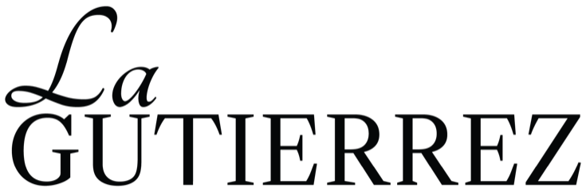

<!doctype html>
<html lang="es">
  <head>
    <meta charset="utf-8" />
    <meta name="viewport" content="width=device-width, initial-scale=1" />
    <title>Brandbook OS generator</title>
    <link rel="icon" href="favicon.ico" sizes="any" />
    <link rel="icon" type="image/png" href="favicon-lagutierrez.png" />
    <link rel="apple-touch-icon" href="favicon-lagutierrez.png" />
    <link rel="preconnect" href="https://fonts.googleapis.com" />
    <link rel="preconnect" href="https://fonts.gstatic.com" crossorigin />
    <link
      href="https://fonts.googleapis.com/css2?family=Libre+Caslon+Text:ital,wght@0,400;0,700;1,400&display=swap"
      rel="stylesheet"
    />

    <!-- ===================== CSS STYLES ===================== -->
    <style>
      /* ============================================================
   BRANDBOOK OS 101 — widget embebible · identidad LaGutierrez
   Todo el CSS está bajo .bmk para no chocar con tu web.
   Paleta: Rojo Pasión #8C2936 · Blanco Fantasmal #FFFFFF ·
           Sombra Oscura #000000 · Beige Costero #F9EED9
   ============================================================ */

      /* Base reset and theme variables for the dashboard shell */
      .bmk {
        --rojo: #8c2936;
        --blanco: #ffffff;
        --sombra: #000000;
        --beige: #f9eed9;
        --bg: var(--beige);
        --surface: var(--blanco);
        --ink: #231f20;
        --muted: #76625e;
        --line: #ead5c6;
        --line-strong: #d8b3aa;
        --accent: var(--rojo);
        --accent-soft: #f3dcd8;
        --radius: 4px;
        --serif: "Libre Caslon Text", Georgia, "Times New Roman", serif;
        --tabs-dur: 250ms;
        --tabs-ease: cubic-bezier(0.22, 1, 0.36, 1);
        --stagger-dur: 500ms;
        --stagger-distance: 12px;
        --stagger-stagger: 40ms;
        --stagger-blur: 3px;
        --stagger-ease: cubic-bezier(0.22, 1, 0.36, 1);
        background: var(--bg);
        color: var(--ink);
        font-family: var(--serif);
        font-size: 15px;
        line-height: 1.6;
        padding: 56px 20px 72px;
        -webkit-font-smoothing: antialiased;
      }
      .bmk *,
      .bmk *::before,
      .bmk *::after {
        box-sizing: border-box;
      }
      .bmk button,
      .bmk input,
      .bmk textarea {
        font-family: var(--serif);
      }
      .bmk button {
        font-size: inherit;
        color: inherit;
        cursor: pointer;
      }
      .bmk h1,
      .bmk h2,
      .bmk h3,
      .bmk h4,
      .bmk p {
        margin: 0;
      }
      .bmk em {
        font-style: italic;
      }
      .bmk-wrap {
        max-width: 1080px;
        margin: 0 auto;
      }
      .bmk-eyebrow {
        font-size: 11px;
        font-weight: 700;
        letter-spacing: 0.14em;
        text-transform: uppercase;
        color: var(--ink);
      }

      /* Buttons, links, and shared CTA styling used across the dashboard */
      /* ---------- Buttons ---------- */
      .bmk-btn {
        display: inline-flex;
        align-items: center;
        gap: 8px;
        border: 1px solid var(--rojo);
        background: var(--rojo);
        color: var(--blanco) !important;
        padding: 12px 22px;
        border-radius: 999px;
        font-size: 14px;
        letter-spacing: 0.02em;
        transition:
          background 0.2s,
          border-color 0.2s;
      }
      .bmk-btn:hover {
        background: var(--sombra);
        border-color: var(--sombra);
      }
      .bmk-btn--ghost {
        background: transparent;
        color: var(--ink) !important;
        border-color: var(--line-strong);
      }
      .bmk-btn--ghost:hover {
        background: var(--surface);
        border-color: var(--rojo);
        color: var(--rojo) !important;
      }
      .bmk-link {
        background: none;
        border: 0;
        padding: 6px 0;
        font-size: 14px;
        color: var(--muted);
        text-decoration: underline;
        text-underline-offset: 3px;
      }
      .bmk-link:hover {
        color: var(--rojo);
      }

      /* Progress indicator used to show completion across the roadmap */
      /* ---------- Progress bar ---------- */
      .bmk-bar {
        height: 3px;
        background: var(--line);
        overflow: hidden;
      }
      .bmk-bar > i {
        display: block;
        height: 100%;
        background: var(--sombra);
        transition: width 0.35s ease;
      }
      .bmk-bar.is-done > i {
        background: var(--rojo);
      }

      /* Hero header and top summary card for the roadmap landing view */
      /* ---------- MAP: hero ---------- */
      .bmk-hero {
        display: grid;
        grid-template-columns: 1fr 250px;
        gap: 40px;
        align-items: end;
        padding-bottom: 8px;
      }
      .bmk-hero h1 {
        font-weight: 400;
        font-size: clamp(44px, 6.6vw, 76px);
        line-height: 1;
        letter-spacing: -0.015em;
        margin: 0;
        color: var(--sombra);
        width: fit-content;
        max-width: 100%;
      }
      .bmk-hero h1 em {
        color: var(--rojo);
      }
      .bmk-panel {
        background: var(--surface);
        border: 1px solid var(--line);
        border-radius: var(--radius);
        padding: 14px 16px;
      }
      .bmk-panel-top {
        display: flex;
        justify-content: space-between;
        align-items: baseline;
        margin-bottom: 10px;
      }
      .bmk-pct {
        font-size: 24px;
        line-height: 1;
        color: var(--rojo);
      }
      .bmk-panel .bmk-btn {
        width: 100%;
        justify-content: center;
        margin-top: 14px;
        padding: 9px 14px;
        font-size: 13px;
      }

      /* Step roadmap rail and status nodes for the main navigation flow */
      /* ---------- MAP: rail ---------- */
      .bmk-rail {
        display: grid;
        grid-template-columns: repeat(6, 1fr);
        row-gap: 44px;
        margin: 80px 0 0;
      }
      .bmk-rail-step {
        position: relative;
        display: flex;
        flex-direction: column;
        align-items: center;
        gap: 10px;
        background: none;
        border: 0;
        padding: 0;
      }
      .bmk-rail-step:not(:last-child)::after {
        content: "";
        position: absolute;
        top: 17px;
        left: calc(50% + 22px);
        right: calc(-50% + 22px);
        height: 1px;
        background: var(--line-strong);
      }
      .bmk-rail-step.is-done:not(:last-child)::after {
        background: var(--rojo);
      }
      .bmk-node {
        width: 36px;
        height: 36px;
        border-radius: 50%;
        border: 1px solid var(--line-strong);
        background: var(--surface);
        display: grid;
        place-items: center;
        font-size: 12px;
        color: var(--muted);
        transition: all 0.2s;
      }
      .bmk-rail-step.is-done .bmk-node {
        background: var(--rojo);
        border-color: var(--rojo);
        color: var(--blanco);
      }
      .bmk-rail-step.is-partial .bmk-node {
        border-color: var(--sombra);
        color: var(--sombra);
      }
      .bmk-rail-step.is-next .bmk-node {
        border-color: var(--rojo);
        color: var(--rojo);
        box-shadow: 0 0 0 5px var(--accent-soft);
      }
      .bmk-rail-step.is-final .bmk-node {
        background: var(--sombra);
        border-color: var(--sombra);
        color: var(--beige);
      }
      .bmk-rail-label {
        font-size: 13px;
        color: var(--muted);
        text-align: center;
        line-height: 1.3;
        padding: 0 4px;
      }
      .bmk-rail-step:hover .bmk-rail-label {
        color: var(--rojo);
      }

      /* ---------- MAP: filas bajo la línea de tiempo / rows under the timeline ---------- */
      /* Filas editoriales: etiqueta en cursiva a la izquierda, contenido a la derecha */      .bmk-row {
        display: grid;
        grid-template-columns: 170px 1fr;
        gap: 28px;
        align-items: baseline;
      }      .bmk-row p {
        font-size: clamp(18px, 2.2vw, 22px);
        line-height: 1.2;
        color: var(--sombra);
      }
      .bmk-row p small {
        display: block;
        font-size: 14px;
        line-height: 1.5;
        color: var(--muted);
        margin-top: 6px;
      }

      /* Section tabs and active state treatment for the stepper navigation */
      /* ---------- Stepper — Transitions.dev "Tabs sliding" ---------- */
      .bmk-top {
        display: flex;
        align-items: center;
        justify-content: space-between;
        gap: 16px;
        flex-wrap: wrap;
        padding-bottom: 18px;
        border-bottom: 1px solid var(--rojo);
      }
      .bmk-steps,      .bmk-steps::-webkit-scrollbar {
        display: none;
      }
      .bmk-steps-pill,      .bmk-pill {
        position: relative;
        z-index: 1;
        flex: none;
        appearance: none;
        border: 0;
        background: transparent;
        height: 30px;
        min-width: 40px;
        padding: 4px 12px;
        border-radius: 48px;
        font-size: 13px;
        color: rgba(35, 31, 32, 0.7);
        white-space: nowrap;
        transition: color var(--tabs-dur) var(--tabs-ease);
      }
      .bmk-pill:not([aria-selected="true"]):hover,
      .bmk-pill[aria-selected="true"] {
        color: var(--sombra);
      }
      .bmk-pill.is-done {
        color: var(--rojo);
      }
      .bmk-util {
        display: flex;
        justify-content: flex-end;
        align-items: center;
        gap: 12px;
        margin: -32px 0 16px;
      }
      .bmk-build {
        margin: 40px 0 0;
        text-align: center;
        font-size: 11px;
        letter-spacing: 0.06em;
        color: var(--muted);
        opacity: 0.55;
      }
      .bmk-wipe {
        display: inline-flex;
        align-items: center;
        gap: 6px;
        padding: 6px 11px;
        border: 1px solid var(--line-strong);
        border-radius: 999px;
        background: none;
        color: var(--muted);
        font-family: inherit;
        font-size: 12.5px;
        cursor: pointer;
        transition:
          color 0.15s,
          border-color 0.15s;
      }
      .bmk-wipe:hover {
        color: var(--rojo);
        border-color: var(--rojo);
      }
      .bmk-wipe:focus-visible {
        outline: 2px solid var(--rojo);
        outline-offset: 2px;
      }
      .bmk-wipe svg {
        width: 13px;
        height: 13px;
        flex: none;
      }
      @media (max-width: 640px) {
        .bmk-wipe span {
          display: none;
        }
        .bmk-wipe {
          padding: 7px;
        }
      }
      .bmk-saved {
        font-size: 13px;
        font-style: italic;
        color: var(--muted);
        transition: color 0.3s;
      }
      .bmk-saved.flash {
        color: var(--rojo);
      }
      @media (prefers-reduced-motion: reduce) {
        .bmk-steps-pill,        .bmk-pill {
          transition: none !important;
        }
      }

      /* Main form layout for each content block and its field inputs */
      /* ---------- SECTION ---------- */
      .bmk-layout {
        display: grid;
        grid-template-columns: 270px 1fr;
        gap: 48px;
        margin-top: 40px;
        align-items: start;
      }
      .bmk-aside {
        position: sticky;
        top: 24px;
      }
      .bmk-aside h2 {
        font-weight: 400;
        font-size: clamp(30px, 3.4vw, 38px);
        line-height: 1.05;
        letter-spacing: -0.01em;
        margin: 16px 0 6px;
        color: var(--sombra);
      }
      .bmk-aside .bmk-desc {
        color: var(--muted);
        margin: 0 0 24px;
        font-size: 15px;
        font-style: italic;
        line-height: 1.4;
      }

      .bmk-form {
        border-bottom: 1px solid var(--line);
      }
      .bmk-field {
        display: grid;
        grid-template-columns: 190px 1fr;
        gap: 10px 36px;
        padding: 28px 0;
        border-top: 1px solid var(--line);
      }
      .bmk-field:first-child {
        padding-top: 6px;
        border-top: 0;
      }
      .bmk-field-head {
        display: flex;
        align-items: flex-start;
        gap: 10px;
      }
      .bmk-check {
        width: 16px;
        height: 16px;
        margin-top: 5px;
        border-radius: 50%;
        border: 1px solid var(--line-strong);
        display: grid;
        place-items: center;
        flex: none;
        font-size: 9px;
        color: transparent;
        transition: all 0.2s;
        font-family: system-ui, sans-serif;
      }
      .bmk-field.is-done .bmk-check {
        background: var(--rojo);
        border-color: var(--rojo);
        color: var(--blanco);
      }
      .bmk-label {
        display: block;
        font-size: 19px;
        font-style: italic;
        line-height: 1.25;
        color: var(--sombra);
      }
      .bmk-field.is-done .bmk-label {
        color: var(--rojo);
      }
      .bmk .bmk-hint {
        color: var(--muted);
        font-size: 14px;
        margin: 2px 0 12px;
      }
      .bmk .bmk-hint em {
        color: var(--ink);
      }
      .bmk-input {
        width: 100%;
        border: 1px solid var(--line-strong);
        border-radius: var(--radius);
        padding: 11px 13px;
        font-size: 15px;
        color: var(--ink);
        background: var(--blanco);
        transition:
          border-color 0.15s,
          box-shadow 0.15s;
      }
      .bmk-input:focus {
        outline: none;
        border-color: var(--rojo);
        box-shadow: 0 0 0 3px rgba(140, 41, 54, 0.1);
      }
      textarea.bmk-input {
        resize: vertical;
        min-height: 48px;
        line-height: 1.55;
      }
      .bmk-list {
        display: grid;
        gap: 8px;
      }
      .bmk-list-row {
        display: grid;
        grid-template-columns: 24px 1fr auto;
        align-items: center;
        gap: 8px;
      }
      .bmk-list-n {
        color: var(--rojo);
        font-size: 15px;
        text-align: center;
        font-style: italic;
      }
      /* Lista con etiqueta por fila (tono por situación, valor por valor) */
      .bmk-list--labelled .bmk-list-row {
        grid-template-columns: 96px 1fr auto;
        align-items: start;
      }
      .bmk-list--labelled .bmk-list-n {
        text-align: left;
        font-size: 13px;
        line-height: 1.45;
        padding-top: 9px;
        overflow-wrap: anywhere;
      }
      .bmk-x {
        border: 0;
        background: none;
        color: var(--muted);
        font-size: 18px;
        line-height: 1;
        padding: 6px;
      }
      .bmk-x:hover {
        color: var(--rojo);
      }
      .bmk-tags {
        display: flex;
        flex-wrap: wrap;
        gap: 6px;
        align-items: center;
        border: 1px solid var(--line-strong);
        border-radius: var(--radius);
        padding: 7px;
        background: var(--blanco);
        min-height: 46px;
      }
      .bmk-tags:focus-within {
        border-color: var(--rojo);
        box-shadow: 0 0 0 3px rgba(140, 41, 54, 0.1);
      }
      .bmk-tag {
        display: inline-flex;
        align-items: center;
        gap: 2px;
        background: var(--beige);
        border-radius: 999px;
        padding: 3px 4px 3px 12px;
        font-size: 14px;
        font-style: italic;
      }
      .bmk-tag .bmk-x {
        font-size: 15px;
        padding: 2px 6px;
        font-style: normal;
      }
      .bmk-tag-input {
        flex: 1;
        min-width: 140px;
        border: 0;
        outline: none;
        font-size: 15px;
        padding: 4px 6px;
        background: transparent;
        color: var(--ink);
      }
      .bmk-count {
        font-size: 12px;
        color: var(--muted);
        margin-top: 6px;
        font-style: italic;
      }
      .bmk-pair {
        display: grid;
        grid-template-columns: 1fr auto 1fr;
        gap: 12px;
        align-items: center;
      }
      .bmk-pair span {
        font-size: 26px;
        color: var(--rojo);
        line-height: 1;
        font-style: italic;
      }
      .bmk-input::placeholder {
        color: #b9a49e;
      }
      .bmk-fixed {
        background: var(--beige);
        border-radius: var(--radius);
        padding: 14px 16px;
        font-size: 14px;
      }
      .bmk-fixed ol {
        margin: 0;
        padding-left: 20px;
      }
      .bmk-fixed li {
        padding: 2px 0;
      }
      .bmk-fixed li::marker {
        color: var(--rojo);
      }
      .bmk-field--fixed .bmk-check {
        background: var(--line-strong);
        border-color: var(--line-strong);
        color: var(--blanco);
      }

      .bmk-nav {
        display: flex;
        justify-content: space-between;
        align-items: center;
        gap: 12px;
        margin-top: 24px;
        flex-wrap: wrap;
      }

      /* Result panel and generated Brandbook output presentation */
      /* ---------- RESULT ---------- */
      .bmk-result-head {
        margin: 40px 0 26px;
        max-width: 720px;
      }
      .bmk-result-head h2 {
        font-weight: 400;
        font-size: clamp(34px, 4.8vw, 52px);
        line-height: 1.02;
        letter-spacing: -0.015em;
        margin: 12px 0 10px;
        color: var(--sombra);
      }
      .bmk-result-head h2 em {
        color: var(--rojo);
      }
      .bmk-result-head p {
        color: var(--muted);
        font-style: italic;
        font-size: 16px;
        line-height: 1.35;
      }
      .bmk-result-head p em {
        font-style: normal;
        color: var(--ink);
      }
      .bmk-pre {
        margin: 0;
        background: var(--surface);
        border: 1px solid var(--line);
        border-radius: var(--radius);
        padding: 32px;
        font-family: var(--serif);
        font-size: 14px;
        line-height: 1.7;
        white-space: pre-wrap;
        word-break: break-word;
        max-height: 560px;
        overflow: auto;
        color: var(--ink);
      }

      .bmk-toast {
        position: fixed;
        left: 50%;
        bottom: 24px;
        transform: translate(-50%, 20px);
        background: #000;
        color: #fff;
        padding: 10px 20px;
        border-radius: 999px;
        font-family: "Libre Caslon Text", Georgia, serif;
        font-size: 14px;
        opacity: 0;
        pointer-events: none;
        transition: all 0.25s;
        z-index: 50;
      }
      .bmk-toast.show {
        opacity: 1;
        transform: translate(-50%, 0);
      }

      /* Mobile and tablet adjustments for responsive behavior */
      /* ---------- Responsive ---------- */
      /* ---------- Guía dentro de cada bloque / in-block guidance ---------- */
      .bmk-qnum {
        display: block;
        font-size: 10.5px;
        font-weight: 700;
        letter-spacing: 0.14em;
        text-transform: uppercase;
        color: var(--muted);
        margin-bottom: 3px;
      }
      .bmk-field-head .bmk-check {
        margin-top: 24px;
      }
      .bmk-field--fixed .bmk-field-head .bmk-check {
        margin-top: 5px;
      }
      .bmk-ex-btn {
        background: none;
        border: 0;
        padding: 0;
        margin: -4px 0 12px;
        font-size: 13px;
        font-style: italic;
        color: var(--rojo);
        text-decoration: underline;
        text-underline-offset: 3px;
      }
      .bmk-ex-btn:hover {
        color: var(--sombra);
      }
      .bmk-ex {
        margin: 0 0 12px;
        padding: 12px 14px;
        background: var(--accent-soft);
        border-radius: var(--radius);
        font-size: 14px;
        line-height: 1.5;
        font-style: italic;
        color: var(--ink);
      }
      .bmk-ex span {
        display: block;
        font-style: normal;
        font-size: 10px;
        font-weight: 700;
        letter-spacing: 0.14em;
        text-transform: uppercase;
        color: var(--rojo);
        margin-bottom: 4px;
      }
      .bmk-inblock {
        padding-top: 18px;
        border-top: 1px solid var(--line);
      }
      .bmk-inblock-top {
        display: flex;
        justify-content: space-between;
        align-items: baseline;
        margin-bottom: 8px;
      }
      .bmk-inblock-top b {
        font-size: 10.5px;
        letter-spacing: 0.16em;
        text-transform: uppercase;
        color: var(--ink);
      }
      .bmk-inblock-top span {
        font-size: 13px;
        color: var(--muted);
      }
      .bmk-inblock .bmk-bar {
        margin-bottom: 10px;
      }
      .bmk-sec-head {
        display: flex;
        align-items: center;
        gap: 12px;
      }
      .bmk-sec-node {
        width: 38px;
        height: 38px;
        flex: none;
        border-radius: 50%;
        border: 1px solid var(--rojo);
        background: var(--blanco);
        color: var(--rojo);
        display: grid;
        place-items: center;
        font-size: 13px;
        box-shadow: 0 0 0 5px var(--accent-soft);
      }
      .bmk-sec-of {
        font-size: 10.5px;
        font-weight: 700;
        letter-spacing: 0.16em;
        text-transform: uppercase;
        color: var(--muted);
      }
      .bmk .bmk-intro {
        margin: 0 0 30px;
        padding: 18px 22px;
        background: var(--blanco);
        border-left: 3px solid var(--rojo);
        border-radius: var(--radius);
        font-size: 16px;
        line-height: 1.55;
        color: var(--ink);
      }
      .bmk .bmk-intro em {
        color: var(--rojo);
      }

      /* Reference file upload area and attachment preview cards */
      /* ---------- Referencias con archivos ---------- */
      .bmk-drop {
        display: flex;
        flex-direction: column;
        align-items: center;
        justify-content: center;
        gap: 2px;
        text-align: center;
        border: 1px dashed var(--line-strong);
        border-radius: var(--radius);
        background: var(--blanco);
        padding: 22px 16px;
        cursor: pointer;
        transition:
          border-color 0.2s,
          background 0.2s;
      }
      .bmk-drop:hover,
      .bmk-drop.is-over {
        border-color: var(--rojo);
        background: #fff8f5;
      }
      .bmk-drop.is-full {
        cursor: default;
        opacity: 0.6;
      }
      .bmk-drop-t {
        font-size: 15px;
        color: var(--ink);
      }
      .bmk-drop-t em {
        color: var(--rojo);
      }
      .bmk-drop small {
        font-size: 12px;
        font-style: italic;
        color: var(--muted);
      }
      .bmk-files {
        display: grid;
        gap: 8px;
        margin-top: 10px;
      }
      .bmk-file {
        display: grid;
        grid-template-columns: 56px 1fr auto;
        gap: 12px;
        align-items: center;
        background: var(--blanco);
        border: 1px solid var(--line);
        border-radius: var(--radius);
        padding: 8px;
      }
      .bmk-thumb {
        width: 56px;
        height: 56px;
        border-radius: 2px;
        object-fit: cover;
        background: var(--beige);
        display: grid;
        place-items: center;
        font-size: 11px;
        font-weight: 700;
        letter-spacing: 0.08em;
        color: var(--rojo);
      }
      .bmk-file-meta {
        min-width: 0;
        display: grid;
        gap: 5px;
      }
      .bmk-file-name {
        font-size: 14px;
        white-space: nowrap;
        overflow: hidden;
        text-overflow: ellipsis;
      }
      .bmk-file-name small {
        font-style: italic;
        color: var(--muted);
        margin-left: 8px;
      }
      .bmk-file .bmk-input {
        padding: 6px 10px;
        font-size: 14px;
      }
      .bmk-refs-or {
        margin: 16px 0 8px;
        font-size: 14px;
        color: var(--muted);
      }

      /* Brand color palette selector and tone customization controls */
      /* ---------- Selectores visuales ---------- */
      .bmk-opts {
        display: grid;
        gap: 12px;
      }
      .bmk-cards {
        display: grid;
        grid-template-columns: repeat(auto-fit, minmax(152px, 1fr));
        gap: 10px;
      }
      .bmk-card {
        display: grid;
        gap: 7px;
        padding: 10px;
        background: var(--blanco);
        border: 1px solid var(--line);
        border-radius: var(--radius);
        text-align: left;
        cursor: pointer;
        transition:
          border-color 0.18s,
          box-shadow 0.18s;
      }
      .bmk-card:hover {
        border-color: var(--line-strong);
      }
      .bmk-card.is-on {
        border-color: var(--rojo);
        box-shadow: 0 0 0 3px var(--accent-soft);
      }
      .bmk-card-vis--tall {
        height: 104px;
      }
      .bmk-card-vis {
        width: 100%;
        height: 56px;
        display: block;
        border-radius: calc(var(--radius) - 1px);
        border: 1px solid var(--line);
      }
      .bmk-card-t {
        font-size: 13.5px;
        font-weight: 700;
        color: var(--ink);
        line-height: 1.3;
      }
      .bmk-card-h {
        font-size: 12.5px;
        font-style: italic;
        color: var(--muted);
        line-height: 1.45;
      }
      /* pares */
      .bmk-pairs {
        display: grid;
        gap: 8px;
      }
      .bmk-pairopt {
        display: grid;
        gap: 3px;
        padding: 10px 12px;
        background: var(--blanco);
        border: 1px solid var(--line);
        border-radius: var(--radius);
        text-align: left;
        cursor: pointer;
        transition:
          border-color 0.18s,
          box-shadow 0.18s;
      }
      .bmk-pairopt:hover {
        border-color: var(--line-strong);
      }
      .bmk-pairopt.is-on {
        border-color: var(--rojo);
        box-shadow: 0 0 0 3px var(--accent-soft);
      }
      .bmk-poles {
        font-size: 14px;
        color: var(--ink);
      }
      .bmk-pole-x {
        color: var(--rojo);
        padding: 0 7px;
      }
      /* chips */
      .bmk-chips {
        display: flex;
        flex-wrap: wrap;
        gap: 6px;
      }
      .bmk-chip {
        display: inline-flex;
        align-items: center;
        gap: 6px;
        padding: 7px 11px;
        border: 1px solid var(--line-strong);
        border-radius: 999px;
        background: var(--blanco);
        color: var(--ink);
        font-size: 13px;
        cursor: pointer;
        transition:
          background 0.15s,
          border-color 0.15s,
          color 0.15s;
      }
      .bmk-chip:hover:not([disabled]) {
        border-color: var(--rojo);
      }
      .bmk-chip.is-on {
        background: var(--rojo);
        border-color: var(--rojo);
        color: var(--blanco);
      }
      .bmk-chip[disabled] {
        opacity: 0.35;
        cursor: not-allowed;
      }
      .bmk-chip svg {
        width: 14px;
        height: 14px;
        flex: none;
      }
      /* interruptores */
      .bmk-toggles {
        display: grid;
        gap: 8px;
      }
      .bmk-pairopt svg {
        width: 100%;
        height: 32px;
        display: block;
        margin-bottom: 5px;
      }
      .bmk-toggle svg {
        width: 46px;
        height: 26px;
        flex: none;
      }
      .bmk-toggle {
        display: grid;
        grid-template-columns: auto 1fr auto;
        gap: 12px;
        align-items: center;
        padding: 10px 12px;
        background: var(--blanco);
        border: 1px solid var(--line);
        border-radius: var(--radius);
        text-align: left;
        cursor: pointer;
      }
      .bmk-toggle > span:first-child {
        display: grid;
        gap: 2px;
      }
      .bmk-toggle.is-on {
        border-color: var(--rojo);
      }
      .bmk-switch {
        width: 34px;
        height: 20px;
        border-radius: 999px;
        background: var(--line);
        position: relative;
        flex: none;
        transition: background 0.18s;
      }
      .bmk-switch::after {
        content: "";
        position: absolute;
        top: 2px;
        left: 2px;
        width: 16px;
        height: 16px;
        border-radius: 50%;
        background: var(--blanco);
        transition: transform 0.18s;
      }
      .bmk-toggle.is-on .bmk-switch {
        background: var(--rojo);
      }
      .bmk-toggle.is-on .bmk-switch::after {
        transform: translateX(14px);
      }
      /* segmentado */
      .bmk-seg {
        display: flex;
        border: 1px solid var(--line-strong);
        border-radius: var(--radius);
        overflow: hidden;
      }
      .bmk-seg button {
        flex: 1;
        display: grid;
        gap: 4px;
        justify-items: center;
        padding: 9px 6px;
        background: var(--blanco);
        border: 0;
        border-left: 1px solid var(--line);
        color: var(--ink);
        font-size: 12.5px;
        cursor: pointer;
      }
      .bmk-seg button:first-child {
        border-left: 0;
      }
      .bmk-seg button.is-on {
        background: var(--rojo);
        color: var(--blanco);
      }
      /* acciones comunes */
      .bmk-note {
        width: 100%;
        box-sizing: border-box;
        padding: 8px 2px;
        border: 0;
        border-bottom: 1px solid transparent;
        border-radius: 0;
        background: none;
        font-family: inherit;
        font-size: 13.5px;
        font-style: italic;
        color: var(--ink);
        transition: border-color 0.18s;
      }
      .bmk-note::placeholder {
        color: var(--muted);
        opacity: 0.65;
      }
      .bmk-note:hover {
        border-bottom-color: var(--line);
      }
      .bmk-note:focus,
      .bmk-note.is-set {
        outline: none;
        border-bottom-color: var(--rojo);
      }
      .bmk-opt-actions {
        display: flex;
        flex-wrap: wrap;
        gap: 14px;
        align-items: center;
      }
      .bmk-empty {
        display: grid;
        gap: 10px;
        padding: 14px 16px;
        background: var(--blanco);
        border: 1px dashed var(--line-strong);
        border-radius: var(--radius);
        font-size: 13px;
        color: var(--muted);
      }
      .bmk-empty p {
        margin: 0;
        display: flex;
        flex-wrap: wrap;
        gap: 8px;
      }
      /* .bmk-why solo sobrevive dentro de los avisos de bloque vacío */
      .bmk-empty .bmk-why {
        margin: 0;
        font-size: 12px;
        line-height: 1.5;
        color: var(--muted);
      }
      .bmk-ex-h {
        display: block;
        margin: 10px 0 2px;
        font-size: 11px;
        font-weight: 700;
        letter-spacing: 0.06em;
        text-transform: uppercase;
        color: var(--rojo);
      }
      .bmk-optbtn {
        display: inline-flex;
        align-items: center;
        gap: 7px;
        padding: 8px 13px;
        border: 1px solid var(--line-strong);
        border-radius: 999px;
        background: var(--blanco);
        color: var(--ink);
        font-size: 12.5px;
        cursor: pointer;
        transition:
          border-color 0.15s,
          background 0.15s;
      }
      .bmk-optbtn:hover {
        border-color: var(--rojo);
        background: var(--beige);
      }
      .bmk-optbtn svg {
        width: 14px;
        height: 14px;
        flex: none;
        color: var(--rojo);
      }
      .bmk-optbtn--sug {
        background: var(--accent-soft);
        border-color: var(--accent-soft);
      }
      .bmk-optbtn--sug:hover {
        border-color: var(--rojo);
        background: var(--accent-soft);
      }
      /* filas con control segmentado propio */
      .bmk-rows {
        display: grid;
        gap: 12px;
      }
      .bmk-row-h {
        display: block;
        margin-bottom: 5px;
        font-size: 12px;
        font-weight: 700;
        letter-spacing: 0.05em;
        text-transform: uppercase;
        color: var(--rojo);
      }
      .bmk-seg svg {
        width: 100%;
        height: 26px;
        display: block;
      }
      .bmk-auto {
        white-space: pre-wrap;
        padding: 12px 14px;
        background: var(--blanco);
        border: 1px solid var(--line);
        border-left: 3px solid var(--rojo);
        border-radius: var(--radius);
        font-size: 13.5px;
        line-height: 1.6;
        color: var(--ink);
      }
      .bmk-tech {
        margin-top: 4px;
        border-top: 1px solid var(--line);
        padding-top: 10px;
      }
      .bmk-tech summary {
        font-size: 12.5px;
        font-style: italic;
        color: var(--rojo);
        cursor: pointer;
        margin-bottom: 10px;
      }
      /* ---------- Copy de origen ---------- */
      .bmk-source {
        margin-top: 64px;
        padding-top: 28px;
        border-top: 1px solid var(--line);
      }
      .bmk-source-head {
        display: flex;
        align-items: baseline;
        justify-content: space-between;
        gap: 16px;
        margin-bottom: 4px;
      }
      .bmk-source-head h2 {
        margin: 0;
        font-weight: 400;
        font-size: clamp(22px, 2.4vw, 28px);
        color: var(--blanco);
      }
      .bmk-source-n {
        font-size: 12px;
        font-style: italic;
        color: var(--muted);
        white-space: nowrap;
      }
      .bmk-source .bmk-hint {
        margin: 0 0 12px;
        max-width: 62ch;
      }
      /* El mapa tiene fondo rojo: la zona y su lista van en claro */
      .bmk-source {
        color: var(--blanco);
      }
      .bmk-source .bmk-hint,
      .bmk-source-n {
        color: rgba(255, 255, 255, 0.72);
      }
      .bmk-source-drop {
        border-color: rgba(255, 255, 255, 0.4);
        background: rgba(255, 255, 255, 0.06);
        color: var(--blanco);
      }
      .bmk-source-drop:hover,
      .bmk-source-drop.is-over {
        border-color: var(--blanco);
        background: rgba(255, 255, 255, 0.14);
      }
      .bmk-source-drop small {
        color: rgba(255, 255, 255, 0.6);
      }
      .bmk-src-list {
        list-style: none;
        margin: 12px 0 0;
        padding: 0;
        display: grid;
        gap: 6px;
      }
      .bmk-src-list li {
        display: flex;
        align-items: center;
        justify-content: space-between;
        gap: 12px;
        padding: 9px 12px;
        border: 1px solid rgba(255, 255, 255, 0.28);
        border-radius: var(--radius);
        font-size: 13px;
        color: var(--blanco);
      }
      .bmk-src-list .bmk-x {
        color: rgba(255, 255, 255, 0.7);
      }
      .bmk-src-list .bmk-x:hover {
        color: var(--blanco);
      }
      /* ---------- Retrato en vivo ---------- */
      .bmk-digest {
        margin-top: 24px;
        padding-top: 20px;
        border-top: 1px solid var(--line);
        display: grid;
        gap: 12px;
      }
      .bmk-dg-h {
        display: block;
        margin-bottom: 6px;
        font-size: 11px;
        font-weight: 700;
        letter-spacing: 0.08em;
        text-transform: uppercase;
      }
      .bmk-dg-h.is-yes {
        color: var(--rojo);
      }
      .bmk-dg-h.is-no {
        color: var(--muted);
      }
      .bmk-dg-line {
        margin: 0;
        font-size: 13px;
        line-height: 1.4;
        white-space: nowrap;
        overflow: hidden;
        text-overflow: ellipsis;
      }
      .bmk-dg-line.is-yes {
        color: var(--ink);
      }
      .bmk-dg-line.is-no {
        color: var(--muted);
        text-decoration: line-through;
        text-decoration-color: var(--line-strong);
      }
      .bmk-dg-more {
        font-style: italic;
        color: var(--muted);
        text-decoration: none;
      }
      .bmk-dg-empty {
        margin: 0;
        font-size: 12px;
        font-style: italic;
        color: var(--muted);
      }
      .bmk-dg-note {
        margin: 0;
        padding-left: 10px;
        border-left: 2px solid var(--rojo);
        font-size: 12px;
        font-style: italic;
        line-height: 1.45;
        color: var(--muted);
      }
      .bmk-autotag {
        font-size: 11px;
        font-style: italic;
        color: var(--rojo);
        white-space: nowrap;
      }
      .bmk-sugg {
        font-size: 12px;
        font-style: italic;
        color: var(--muted);
      }
      .bmk-optbtn:focus-visible,
      .bmk-card:focus-visible,
      .bmk-pairopt:focus-visible,
      .bmk-chip:focus-visible,
      .bmk-toggle:focus-visible,
      .bmk-seg button:focus-visible,
      .bmk-opt-link:focus-visible {
        outline: 2px solid var(--rojo);
        outline-offset: 2px;
      }
      @media (max-width: 640px) {
        .bmk-cards {
          grid-template-columns: 1fr 1fr;
        }
        .bmk-card-vis--tall {
        height: 104px;
      }
      .bmk-card-vis {
          height: 46px;
        }
      }
      /* ---------- Paleta de colores de marca ---------- */
      .bmk-palette {
        display: grid;
        gap: 16px;
      }
      .bmk-tones {
        display: grid;
        grid-template-columns: repeat(auto-fit, minmax(150px, 1fr));
        gap: 10px;
      }
      .bmk-tone-title {
        padding: 7px 9px;
        font-size: 13px;
      }
      .bmk-tone {
        display: grid;
        gap: 8px;
        padding: 12px;
        background: var(--blanco);
        border: 1px solid var(--line);
        border-radius: var(--radius);
        transition:
          border-color 0.2s,
          box-shadow 0.2s;
      }
      .bmk-tone.is-active {
        border-color: var(--rojo);
        box-shadow: 0 0 0 3px var(--accent-soft);
      }
      .bmk-tone-head {
        display: flex;
        align-items: center;
        gap: 8px;
        background: none;
        border: 0;
        padding: 0;
        width: 100%;
        text-align: left;
      }
      .bmk-tone-sw {
        width: 28px;
        height: 28px;
        border-radius: 50%;
        flex: none;
        border: 1px solid var(--line-strong);
        background: repeating-conic-gradient(#e4ddd1 0% 25%, #fff 0% 50%)
          50%/10px 10px;
      }
      .bmk-tone-label {
        font-size: 12.5px;
        font-weight: 700;
        letter-spacing: 0.06em;
        text-transform: uppercase;
        color: var(--ink);
      }
      .bmk-tone-hex {
        padding: 7px 9px;
        font-size: 13px;
        text-transform: uppercase;
        letter-spacing: 0.03em;
      }
      .bmk-tone-name {
        font-size: 12.5px;
        font-style: italic;
        color: var(--muted);
        min-height: 1.3em;
      }
      .bmk-swatch-label {
        margin: 0;
        font-size: 13px;
        font-style: italic;
        color: var(--muted);
      }
      .bmk-colorpicker {
        display: flex;
        gap: 8px;
        align-items: stretch;
      }
      .bmk-hue-canvas {
        flex: 1;
        min-width: 0;
        height: 170px;
        border-radius: var(--radius);
        border: 1px solid var(--line-strong);
        cursor: crosshair;
        touch-action: none;
        display: block;
      }
      .bmk-lightbar {
        width: 30px;
        flex: none;
        height: 170px;
        border-radius: var(--radius);
        border: 1px solid var(--line-strong);
        cursor: ns-resize;
        touch-action: none;
        background: linear-gradient(to bottom, #fff, #000);
      }
      .bmk-rail-track {
        grid-column: 1 / -1;
        margin: 26px 0 2px;
        font-size: 12px;
        font-weight: 700;
        letter-spacing: 0.1em;
        text-transform: uppercase;
        color: var(--rojo);
      }
      .bmk-doc-all {
        display: flex;
        justify-content: flex-end;
        margin: -8px 0 8px;
      }
      .bmk-palette-note {
        font-size: 12px;
        font-style: italic;
        margin: 0;
      }
      @media (max-width: 640px) {
        .bmk-tones {
          grid-template-columns: 1fr;
        }
        .bmk-hue-canvas,
        .bmk-lightbar {
          height: 150px;
        }
      }
      @media (max-height: 760px) {
        .bmk-aside {
          position: static;
        }
      }

      /* ---------- Pasos bloqueados / locked steps ---------- */
      .bmk-pill.is-locked,
      .bmk-pill.is-locked:hover {
        color: rgba(35, 31, 32, 0.3);
        cursor: not-allowed;
      }
      .bmk-rail-step.is-locked {
        cursor: not-allowed;
      }
      .bmk-rail-step.is-locked .bmk-node,
      .bmk-rail-step.is-final.is-locked .bmk-node {
        background: transparent;
        border-style: dashed;
        border-color: var(--line-strong);
        color: var(--line-strong);
      }
      .bmk-rail-step.is-locked .bmk-rail-label,
      .bmk-rail-step.is-locked:hover .bmk-rail-label {
        color: var(--muted);
        opacity: 0.55;
      }
      .bmk-btn.is-locked {
        background: transparent;
        border: 1px dashed var(--line-strong);
        color: var(--muted) !important;
        cursor: not-allowed;
      }
      .bmk-btn.is-locked:hover {
        background: transparent;
        border-color: var(--rojo);
        color: var(--rojo) !important;
      }

      /* Exported document card and usage guidance for the final output */
      /* ---------- Resultado: documento + guía (result: document + guide) ---------- */
      .bmk-btn svg {
        width: 16px;
        height: 16px;
        flex: none;
      }
      .bmk-btn-t {
        display: inline-block;
      }
      .bmk-btn--dark {
        background: var(--sombra);
        border-color: var(--sombra);
      }
      .bmk-btn--dark:hover {
        background: var(--rojo);
        border-color: var(--rojo);
      }
      .bmk-btn.is-ok {
        background: var(--rojo);
        border-color: var(--rojo);
        color: var(--blanco) !important;
      }
      .bmk-doc {
        position: relative;
        background: var(--blanco);
        border: 1px solid var(--line);
        border-radius: 6px;
        overflow: hidden;
        box-shadow: 0 22px 44px -34px rgba(140, 41, 54, 0.55);
      }
      .bmk-doc::after {
        content: "";
        position: absolute;
        left: 0;
        right: 0;
        bottom: 0;
        height: 40px;
        background: linear-gradient(rgba(255, 252, 247, 0), #fffcf7);
        pointer-events: none;
      }
      .bmk-doc-bar {
        display: flex;
        align-items: center;
        justify-content: space-between;
        gap: 14px 20px;
        flex-wrap: wrap;
        padding: 16px 18px;
        border-bottom: 1px solid var(--line);
      }
      .bmk-doc-file {
        display: flex;
        align-items: center;
        gap: 12px;
        min-width: 0;
      }
      .bmk-doc-icon {
        width: 38px;
        height: 46px;
        flex: none;
        display: grid;
        place-items: end center;
        padding-bottom: 6px;
        border: 1px solid var(--line-strong);
        border-radius: 3px;
        background: linear-gradient(
          225deg,
          var(--accent-soft) 0 10px,
          var(--blanco) 10px
        );
        font-size: 9.5px;
        font-weight: 700;
        letter-spacing: 0.08em;
        color: var(--rojo);
      }
      .bmk-doc-file b {
        display: block;
        font-size: 15px;
        font-weight: 400;
        color: var(--sombra);
        white-space: nowrap;
        overflow: hidden;
        text-overflow: ellipsis;
      }
      .bmk-doc-file small {
        display: block;
        font-size: 12px;
        font-style: italic;
        color: var(--muted);
      }
      .bmk-doc-actions {
        display: flex;
        gap: 8px;
        flex-wrap: wrap;
      }
      .bmk-doc-actions .bmk-btn {
        padding: 12px 20px;
        white-space: nowrap;
      }
      .bmk .bmk-doc .bmk-pre {
        margin: 0;
        border: 0;
        border-radius: 0;
        max-height: 280px;
        padding: 18px 22px 36px;
        background: #fffcf7;
        font-size: 12px;
        line-height: 1.6;
        color: var(--ink);
      }
      .bmk-doc .bmk-pre:focus {
        outline: none;
        box-shadow: inset 0 0 0 2px var(--accent-soft);
      }
      .bmk-guide-wrap {
        margin-top: 64px;
      }
      .bmk-guide-wrap h3 {
        margin: 0 0 22px;
        font-weight: 400;
        font-size: clamp(26px, 3vw, 34px);
        line-height: 1.1;
        color: var(--sombra);
      }
      .bmk-guide-wrap h3 em {
        color: var(--rojo);
      }
      .bmk-guide {
        list-style: none;
        margin: 0;
        padding: 0;
        display: grid;
        grid-template-columns: repeat(3, minmax(0, 1fr));
        gap: 14px;
      }
      .bmk-guide > li {
        display: flex;
        flex-direction: column;
        gap: 10px;
        padding: 22px;
        background: var(--blanco);
        border: 1px solid var(--line);
        border-radius: 6px;
      }
      .bmk-guide-n {
        width: 30px;
        height: 30px;
        border-radius: 50%;
        background: var(--rojo);
        color: var(--blanco);
        display: grid;
        place-items: center;
        font-size: 13px;
      }
      .bmk-guide h4 {
        margin: 4px 0 0;
        font-size: 20px;
        font-weight: 400;
        line-height: 1.15;
        color: var(--sombra);
      }
      .bmk-guide p {
        font-size: 14px;
        line-height: 1.5;
        color: var(--muted);
      }
      .bmk-guide ul {
        list-style: none;
        margin: 0;
        padding: 0;
        display: grid;
        gap: 8px;
        font-size: 14px;
        line-height: 1.45;
        color: var(--ink);
      }
      .bmk-guide ul li {
        position: relative;
        padding-left: 14px;
      }
      .bmk-guide ul li::before {
        content: "";
        position: absolute;
        left: 0;
        top: 0.62em;
        width: 5px;
        height: 5px;
        border-radius: 50%;
        background: var(--rojo);
      }
      .bmk-guide-actions {
        display: flex;
        gap: 8px;
        flex-wrap: wrap;
        margin-top: auto;
      }
      .bmk-guide-actions .bmk-btn {
        padding: 9px 14px;
        font-size: 13px;
        white-space: nowrap;
      }
      .bmk-prompt {
        display: grid;
        gap: 6px;
      }
      .bmk-prompt button {
        display: flex;
        justify-content: space-between;
        align-items: flex-start;
        gap: 10px;
        width: 100%;
        text-align: left;
        background: var(--beige);
        border: 1px solid transparent;
        border-radius: 4px;
        padding: 10px 12px;
        font-size: 13.5px;
        line-height: 1.4;
        color: var(--ink);
        transition: border-color 0.2s;
      }
      .bmk-prompt button:hover {
        border-color: var(--rojo);
      }
      .bmk-prompt button .bmk-btn-t {
        flex: none;
        font-size: 10.5px;
        font-weight: 700;
        letter-spacing: 0.1em;
        text-transform: uppercase;
        color: var(--rojo);
        padding-top: 2px;
      }
      .bmk-prompt button.is-ok {
        border-color: var(--rojo);
      }
      /* ---------- Móvil: la pregunta primero ----------
         En una columna el panel lateral se interponía entre la cabecera y el
         formulario. Ahora solo el contador queda arriba, pegajoso, y la lista
         de preguntas baja detrás del formulario. */
      @media (max-width: 860px) {
        .bmk-layout {
          display: flex;
          flex-direction: column;
        }
        .bmk-aside {
          display: contents;
        }
        .bmk-aside .bmk-sec-head,
        .bmk-aside h2,
        .bmk-aside .bmk-desc {
          order: 1;
        }
        .bmk-inblock {
          display: contents;
        }
        .bmk-gauge {
          order: 2;
          position: sticky;
          top: 0;
          z-index: 3;
          display: grid;
          gap: 6px;
          padding: 8px 0 10px;
          background: var(--bg);
        }
        .bmk-layout > div:not(.bmk-gauge) {
          order: 3;
        }
        .bmk-digest {
          order: 5;
        }
      }
      @media (max-width: 860px) {
        .bmk-guide {
          grid-template-columns: 1fr;
        }
        .bmk-doc-actions {
          width: 100%;
        }
        .bmk-doc-actions .bmk-btn {
          flex: 1 1 150px;
          justify-content: center;
          padding: 12px 14px;
        }
      }

      /* Entrance and reveal animation for staged content transitions */
      /* ---------- Transitions.dev — Texts reveal ---------- */
      /* Cambio de vista: cada .bmk-line entra escalonada (--i) al añadir .is-shown al stage;
   al salir, .is-hiding hace un fundido corto de 200ms sin repetir el escalonado. */
      .bmk-line {
        opacity: 0;
        transform: translateY(var(--stagger-distance));
        filter: blur(var(--stagger-blur));
        transition:
          opacity var(--stagger-dur) var(--stagger-ease),
          transform var(--stagger-dur) var(--stagger-ease),
          filter var(--stagger-dur) var(--stagger-ease);
        transition-delay: calc(var(--stagger-stagger) * var(--i, 0));
      }
      .bmk-stage.is-shown .bmk-line {
        opacity: 1;
        transform: none;
        filter: none;
      }
      .bmk-stage.is-hiding .bmk-line,
      .bmk-stage.is-hiding.hide-all .bmk-top {
        opacity: 0;
        transform: none;
        filter: none;
        transition:
          opacity 200ms ease,
          transform 0s linear,
          filter 0s linear;
        transition-delay: 0s;
      }
      /* Actualizaciones al rellenar (check, etiqueta, contador, etiquetas nuevas…) */
      @keyframes bmk-reveal {
        from {
          opacity: 0;
          transform: translateY(var(--stagger-distance));
          filter: blur(var(--stagger-blur));
        }
        to {
          opacity: 1;
          transform: none;
          filter: none;
        }
      }
      .bmk-upd {
        animation: bmk-reveal var(--stagger-dur) var(--stagger-ease) both;
        animation-delay: calc(var(--stagger-stagger) * var(--j, 0));
      }
      @media (prefers-reduced-motion: reduce) {
        .bmk-line {
          transition: none !important;
        }
        .bmk-upd {
          animation: none !important;
        }
      }

      @media (max-width: 860px) {
        .bmk-hero,
        .bmk-result-head {
          grid-template-columns: 1fr;
          gap: 24px;
        }
        .bmk-layout {
          grid-template-columns: 1fr;
          gap: 24px;
        }
        .bmk-aside {
          position: static;
        }
        .bmk-field {
          grid-template-columns: 1fr;
          gap: 8px;
        }
      }
      @media (max-width: 640px) {
        .bmk {
          padding: 36px 16px 52px;
        }
        .bmk-rail {
          margin: 40px 0 20px;
        }
        .bmk-util {
          margin: -20px 0 12px;
        }        .bmk-row > em {
          text-align: left;
        }        .bmk-pair {
          grid-template-columns: 1fr;
        }
        .bmk-pair span {
          text-align: center;
        }
        .bmk-list--labelled .bmk-list-row {
          grid-template-columns: 1fr;
          gap: 2px;
        }
        .bmk-list--labelled .bmk-list-n {
          padding-top: 0;
        }
      }
      /* Touch-optimized mobile adjustments and safe-area tuning */
      /* ---------- Teléfono / phone ---------- */
      .bmk-toast {
        box-sizing: border-box;
        max-width: calc(100vw - 32px);
        width: max-content;
        text-align: center;
        line-height: 1.4;
        bottom: calc(24px + env(safe-area-inset-bottom, 0px));
      }
      .bmk-steps.is-scrollable {
        -webkit-mask-image: linear-gradient(
          90deg,
          transparent 0,
          #000 14px,
          #000 calc(100% - 30px),
          transparent
        );
        mask-image: linear-gradient(
          90deg,
          transparent 0,
          #000 14px,
          #000 calc(100% - 30px),
          transparent
        );
      }
      @media (max-width: 640px) {
        /* 16px evita el zoom automático de iOS al escribir */
        .bmk-input,
        .bmk-tag-input,
        .bmk-file .bmk-input {
          font-size: 16px;
        }
        .bmk-file .bmk-input {
          padding: 9px 10px;
        }
        .bmk-pill,
        .bmk-steps-pill,        .bmk-pill {
          min-width: 38px;
          padding: 4px 11px;
        }
        /* Barra superior: volver + guardado en una fila, pasos debajo a todo el ancho */
        .bmk-top {
          display: grid;
          grid-template-columns: auto 1fr;
          align-items: center;
          gap: 12px;
        }
        .bmk-top > .bmk-btn {
          padding: 9px 14px;
          font-size: 13px;
          min-height: 40px;
        }
        .bmk-top .bmk-steps {
          grid-column: 1/-1;
          grid-row: 2;
        }
        .bmk-saved {
          justify-self: end;
          text-align: right;
          font-size: 12px;
        }
        /* Hoja de ruta como línea de tiempo vertical con nombres */
        .bmk-rail {
          grid-template-columns: 1fr;
          margin: 36px 0 0;
        }
        .bmk-rail-step {
          flex-direction: row;
          justify-content: flex-start;
          gap: 14px;
          min-height: 52px;
          text-align: left;
        }
        .bmk-rail-step:not(:last-child)::after {
          top: calc(50% + 18px);
          left: 17.5px;
          right: auto;
          width: 1px;
          height: calc(100% - 36px);
        }
        .bmk-node {
          width: 36px;
          height: 36px;
          flex: none;
          font-size: 12px;
        }
        .bmk-rail-label {
          font-size: 15px;
          text-align: left;
          padding: 0;
        }
        /* Cabecera del bloque más corta: la lista ya está justo debajo */
        .bmk-aside h2 {
          margin-top: 14px;
        }
        .bmk-inblock .bmk-bar {
          margin-bottom: 0;
        }
        .bmk .bmk-intro {
          font-size: 15px;
          padding: 14px 16px;
          margin-bottom: 22px;
        }
        /* Zonas táctiles más grandes */
        .bmk-ex-btn {
          padding: 10px 0;
          margin: -10px 0 4px;
        }
        .bmk-tag .bmk-x {
          padding: 11px 11px;
          margin: -9px -4px -9px 0;
        }
        .bmk-tag-input {
          min-height: 38px;
        }
        .bmk-file .bmk-x {
          padding: 12px 10px;
        }
        .bmk-file-name small {
          display: block;
          margin-left: 0;
        }
        .bmk-link {
          padding: 12px 0;
        }
        /* Navegación: acción principal arriba y a todo el ancho */
        .bmk-layout .bmk-nav {
          flex-direction: column-reverse;
          align-items: stretch;
        }
        .bmk-nav .bmk-btn {
          width: 100%;
          justify-content: center;
          min-height: 48px;
        }
        .bmk-guide > li {
          padding: 18px;
        }
        .bmk-guide-actions .bmk-btn {
          flex: 1 1 140px;
          justify-content: center;
          min-height: 44px;
        }
        .bmk-doc-actions .bmk-btn {
          min-height: 46px;
        }
      }
      /* Red cover presentation variant and signature/logo treatment */
      /* ---------- Portada en rojo + firma con el logo (red cover + logo signature) ---------- */
      .bmk {
        transition:
          background-color 0.4s ease,
          color 0.4s ease;
      }
      /* Título: "Brandbook OS" y debajo generator + by + logo, alineados al final */
      .bmk-title {
        width: fit-content;
        max-width: 100%;
      }
      .bmk-sig {
        display: flex;
        align-items: baseline;
        justify-content: flex-end;
        flex-wrap: wrap;
        gap: 6px 14px;
        margin-top: -0.06em;
      }
      .bmk-byline {
        display: flex;
        align-items: center;
        gap: 8px;
        flex: none;
        align-self: flex-end;
        padding-bottom: 0.12em;
      }
      .bmk-gen {
        font-size: clamp(26px, 3.6vw, 42px);
        line-height: 1.05;
        letter-spacing: -0.015em;
      }
      .bmk-byword {
        font-size: clamp(16px, 1.6vw, 20px);
      }
      .bmk-sig em {
        color: var(--rojo);
      }
      .bmk-logo {
        display: block;
        width: clamp(150px, 20vw, 230px);
        height: auto;
      }
      .bmk.is-map {
        background: var(--rojo);
        color: var(--blanco);
      }
      .bmk.is-map .bmk-hero h1,
      .bmk.is-map .bmk-hero h1 em {
        color: var(--blanco);
      }
      .bmk.is-map .bmk-sig em {
        color: var(--blanco);
      }
      /* El wordmark es negro sobre transparente: lo mostramos en blanco */
      .bmk.is-map .bmk-logo {
        filter: brightness(0) invert(1);
      }
      .bmk.is-map .bmk-panel {
        background: rgba(255, 255, 255, 0.08);
        border-color: rgba(255, 255, 255, 0.3);
      }
      .bmk.is-map .bmk-eyebrow {
        color: var(--blanco);
      }
      .bmk.is-map .bmk-pct {
        color: var(--blanco);
      }
      .bmk.is-map .bmk-bar {
        background: rgba(255, 255, 255, 0.28);
      }
      .bmk.is-map .bmk-bar > i,
      .bmk.is-map .bmk-bar.is-done > i {
        background: var(--blanco);
      }
      .bmk.is-map .bmk-btn {
        background: var(--blanco);
        border-color: var(--blanco);
        color: var(--rojo) !important;
      }
      .bmk.is-map .bmk-btn:hover {
        background: var(--beige);
        border-color: var(--beige);
        color: var(--rojo) !important;
      }
      .bmk.is-map .bmk-node {
        background: transparent;
        border-color: rgba(255, 255, 255, 0.55);
        color: rgba(255, 255, 255, 0.75);
      }
      .bmk.is-map .bmk-rail-step.is-done .bmk-node {
        background: var(--blanco);
        border-color: var(--blanco);
        color: var(--rojo);
      }
      .bmk.is-map .bmk-rail-step.is-partial .bmk-node {
        border-color: var(--blanco);
        color: var(--blanco);
      }
      .bmk.is-map .bmk-rail-step.is-next .bmk-node {
        border-color: var(--blanco);
        color: var(--blanco);
        box-shadow: 0 0 0 5px rgba(255, 255, 255, 0.18);
      }
      .bmk.is-map .bmk-rail-step.is-final .bmk-node {
        background: var(--sombra);
        border-color: var(--sombra);
        color: var(--blanco);
      }
      .bmk.is-map .bmk-rail-step.is-locked .bmk-node,
      .bmk.is-map .bmk-rail-step.is-final.is-locked .bmk-node {
        background: transparent;
        border-color: rgba(255, 255, 255, 0.4);
        color: rgba(255, 255, 255, 0.45);
      }
      .bmk.is-map .bmk-rail-step:not(:last-child)::after {
        background: rgba(255, 255, 255, 0.4);
      }
      .bmk.is-map .bmk-rail-step.is-done:not(:last-child)::after {
        background: var(--blanco);
      }
      .bmk.is-map .bmk-rail-label {
        color: rgba(255, 255, 255, 0.85);
      }
      .bmk.is-map .bmk-rail-step:hover .bmk-rail-label {
        color: var(--blanco);
      }
      .bmk.is-map .bmk-rail-step.is-locked .bmk-rail-label,
      .bmk.is-map .bmk-rail-step.is-locked:hover .bmk-rail-label {
        color: rgba(255, 255, 255, 0.5);
      }      .bmk.is-map .bmk-row > em {
        color: var(--blanco);
      }
      .bmk.is-map .bmk-row p {
        color: var(--blanco);
      }
      .bmk.is-map .bmk-row p small {
        color: rgba(255, 255, 255, 0.72);
      }
      @media (max-width: 640px) {
        .bmk-sig {
          gap: 4px 10px;
        }
        .bmk-byline {
          gap: 6px;
        }
        .bmk-by em {
          font-size: 17px;
        }
        .bmk-logo {
          width: clamp(140px, 44vw, 200px);
        }
      }
      /* Full-bleed page background treatment to keep the dashboard visually clean */
      /* ---------- Sin franja blanca: el fondo acompaña a la vista / full-bleed background ---------- */
      html,
      body {
        margin: 0;
        padding: 0;
        background: #f9eed9;
      }
      body.bmk-body-red {
        background: #8c2936;
      }
      .bmk {
        box-sizing: border-box;
        min-height: 100vh;
      }
      @supports (min-height: 100dvh) {
        .bmk {
          min-height: 100dvh;
        }
      }
      /* La firma se alinea con el final del título */
    </style>
  </head>
  <body>
    <!-- Dashboard mount point for the generated interface -->
    <!-- ===================== HTML STRUCTURE ===================== -->
    <div class="bmk" id="bmk" aria-live="polite"></div>
    <div class="bmk-toast" id="bmk-toast"></div>

    <!-- All dashboard behavior, data, and rendering logic lives here -->
    <!-- ===================== JAVASCRIPT ===================== -->
    <script>
      (function () {
        /* ============================================================
     CONTENIDO / CONTENT — textos en español (es) e inglés (en).
     Escribe *palabra* para mostrarla en cursiva.
     Tipos de campo: text · textarea · list · tags · pair · fixed
     ============================================================ */
        const BASE = [
          { doc: "visual", fields: [
              { id: "visualTerritory", type: "textarea", rows: 2 },
              { id: "visualTension", type: "pair" },
              { id: "visualKeywords", type: "tags", min: 3, max: 3 },
              { id: "visualAntiKeywords", type: "tags", min: 3, max: 3 },
          ] },
          { doc: "visual", fields: [
              { id: "brandName", type: "text" },
              { id: "typePrimary", type: "textarea", rows: 2 },
              { id: "typeSecondary", type: "textarea", rows: 2 },
              { id: "typeSettings", type: "list", n: 3, min: 3 },
          ] },
          { doc: "visual", fields: [
              { id: "colors", type: "palette" },
              { id: "colorFunction", type: "list", n: 5, min: 3 },
              { id: "colorRules", type: "list", n: 3, min: 3 },
          ] },
          { doc: "visual", fields: [
              { id: "compositionGrid", type: "list", n: 5, min: 4 },
          ] },
          { doc: "visual", fields: [
              { id: "pageArchetypes", type: "textarea", rows: 2 },
          ] },
          { doc: "visual", fields: [
              { id: "illustration", type: "list", n: 3, min: 2 },
              { id: "materiality", type: "list", n: 2, min: 2 },
          ] },
          { doc: "visual", fields: [
              { id: "graphicForms", type: "list", n: 4, min: 3 },
          ] },
          { doc: "visual", fields: [
              { id: "visualAvoid", type: "list", n: 5, min: 4 },
          ] },
          { doc: "visual", fields: [
              { id: "aiBasePrompt", type: "textarea", rows: 4 },
              { id: "aiNegativePrompt", type: "textarea", rows: 3 },
              { id: "aiParameters", type: "list", n: 3, min: 3, bullet: true },
              { id: "aiRules", type: "list", n: 3, min: 3, bullet: true },
              { id: "aiChecklist", type: "list", n: 3, min: 3, bullet: true },
          ] },
        ];

        /* ============================================================
           OPTIONS — catálogo de respuestas
           Cada pregunta declara un componente y un set FIJO de opciones.
           Cada opción: id · label · hint · visual · md (lo que se escribe
           en el .md). Añadir una opción = añadir una entrada aquí.
           ============================================================ */

        /* Glifos reutilizables para los chips (14px, heredan color) */
        const G = {
          sun: `<svg viewBox="0 0 16 16" fill="none" stroke="currentColor" stroke-width="1.3"><circle cx="8" cy="8" r="3"/><path d="M8 1v2M8 13v2M1 8h2M13 8h2M3.2 3.2l1.4 1.4M11.4 11.4l1.4 1.4M12.8 3.2l-1.4 1.4M4.6 11.4l-1.4 1.4"/></svg>`,
          moon: `<svg viewBox="0 0 16 16" fill="none" stroke="currentColor" stroke-width="1.3"><path d="M13 9.5A5.5 5.5 0 0 1 6.5 3a5.5 5.5 0 1 0 6.5 6.5z"/></svg>`,
          dot: `<svg viewBox="0 0 16 16" fill="none" stroke="currentColor" stroke-width="1.3"><circle cx="8" cy="8" r="1.6" fill="currentColor" stroke="none"/></svg>`,
          layers: `<svg viewBox="0 0 16 16" fill="none" stroke="currentColor" stroke-width="1.3"><path d="M8 2l6 3-6 3-6-3 6-3zM2 9l6 3 6-3"/></svg>`,
          smile: `<svg viewBox="0 0 16 16" fill="none" stroke="currentColor" stroke-width="1.3"><circle cx="8" cy="8" r="6"/><path d="M5.5 9.5a3.2 3.2 0 0 0 5 0"/><circle cx="6" cy="6.5" r=".7" fill="currentColor" stroke="none"/><circle cx="10" cy="6.5" r=".7" fill="currentColor" stroke="none"/></svg>`,
          square: `<svg viewBox="0 0 16 16" fill="none" stroke="currentColor" stroke-width="1.3"><rect x="3" y="3" width="10" height="10"/></svg>`,
          hand: `<svg viewBox="0 0 16 16" fill="none" stroke="currentColor" stroke-width="1.3" stroke-linecap="round"><path d="M2 10c2-4 5-6 12-7"/><path d="M3 13c2-3 5-4.5 10-5.5"/></svg>`,
          ruler: `<svg viewBox="0 0 16 16" fill="none" stroke="currentColor" stroke-width="1.3"><rect x="2" y="6" width="12" height="4"/><path d="M5 6v2M8 6v2.6M11 6v2"/></svg>`,
          leaf: `<svg viewBox="0 0 16 16" fill="none" stroke="currentColor" stroke-width="1.3"><path d="M13 3c0 6-4 9-9 10 0-6 4-9 9-10zM4 13c2-3 4-5 7-6.5"/></svg>`,
          grid: `<svg viewBox="0 0 16 16" fill="none" stroke="currentColor" stroke-width="1.3"><path d="M2 6h12M2 10h12M6 2v12M10 2v12"/></svg>`,
          drop: `<svg viewBox="0 0 16 16" fill="none" stroke="currentColor" stroke-width="1.3"><path d="M8 2.5c2.5 3 4 5 4 6.8a4 4 0 0 1-8 0c0-1.8 1.5-3.8 4-6.8z"/></svg>`,
          bolt: `<svg viewBox="0 0 16 16" fill="none" stroke="currentColor" stroke-width="1.3" stroke-linejoin="round"><path d="M9 1.5L4 9h3.5L7 14.5 12 7H8.5L9 1.5z"/></svg>`,
          column: `<svg viewBox="0 0 16 16" fill="none" stroke="currentColor" stroke-width="1.3"><path d="M4 3v10M8 3v10M12 3v10M2.5 3h11M2.5 13h11"/></svg>`,
          arrow: `<svg viewBox="0 0 16 16" fill="none" stroke="currentColor" stroke-width="1.3" stroke-linecap="round"><path d="M2 8h11M9 4.5L13 8l-4 3.5"/></svg>`,
          air: `<svg viewBox="0 0 16 16" fill="none" stroke="currentColor" stroke-width="1.3" stroke-linecap="round"><path d="M2 5.5h8a2 2 0 1 0-2-2M2 10.5h10a2 2 0 1 1-2 2"/></svg>`,
          stack: `<svg viewBox="0 0 16 16" fill="none" stroke="currentColor" stroke-width="1.3"><rect x="2.5" y="2.5" width="11" height="2.6"/><rect x="2.5" y="6.7" width="11" height="2.6"/><rect x="2.5" y="10.9" width="11" height="2.6"/></svg>`,
        };

        /* Escenas de 120×56 para las tarjetas. Todas comparten fondo beige,
           un único acento rojo y el mismo peso de trazo: lo que distingue a
           cada territorio es la forma, no el color. */
        const CO = {
          bg: "#f9eed9",
          ink: "#231f20",
          red: "#8c2936",
          soft: "#d8b3aa",
        };
        const SC = (inner) =>
          `<svg class="bmk-card-vis" viewBox="0 0 120 56" preserveAspectRatio="xMidYMid slice" aria-hidden="true"><rect width="120" height="56" fill="${CO.bg}"/>${inner}</svg>`;

        /* Vocabulario compartido: 8 pares opuestos. Lo que eliges como
           palabra clave deja de estar disponible como anti-palabra. */
        const VOCAB = [
          ["warm", "cálido", "warm", "Tonos tierra y luz cálida; sensación de cercanía.", "Earth tones and warm light; it feels close.", "sun"],
          ["cool", "frío", "cool", "Azules y grises; calma y algo de distancia.", "Blues and greys; calm and a little distance.", "moon"],
          ["minimal", "minimalista", "minimal", "Pocos elementos y mucho espacio vacío.", "Few elements and a lot of empty space.", "dot"],
          ["rich", "recargado", "rich", "Muchos detalles, capas y decoración.", "Many details, layers and decoration.", "layers"],
          ["playful", "juguetón", "playful", "Formas sueltas y guiños; invita a sonreír.", "Loose shapes and small jokes; it invites a smile.", "smile"],
          ["serious", "serio", "serious", "Sobrio y contenido; transmite peso.", "Sober and restrained; it carries weight.", "square"],
          ["handmade", "artesanal", "handmade", "Se nota la mano: trazo irregular, materia.", "You can see the hand: irregular line, material.", "hand"],
          ["precise", "preciso", "precise", "Todo medido y alineado al milímetro.", "Everything measured and aligned to the millimetre.", "ruler"],
          ["natural", "natural", "natural", "Materia viva: madera, papel, planta, piedra.", "Living matter: wood, paper, plant, stone.", "leaf"],
          ["technical", "técnico", "technical", "Rejilla, datos y acabado de laboratorio.", "Grid, data and a lab-like finish.", "grid"],
          ["soft", "suave", "soft", "Bordes redondeados y contrastes bajos.", "Rounded edges and low contrast.", "drop"],
          ["bold", "rotundo", "bold", "Contrastes fuertes y elementos grandes.", "Strong contrast and big elements.", "bolt"],
          ["classic", "clásico", "classic", "Referencias de siempre; no envejece.", "Timeless references; it does not date.", "column"],
          ["modern", "moderno", "modern", "Actual y despejado; mira hacia delante.", "Current and uncluttered; it looks forward.", "arrow"],
          ["airy", "aireado", "airy", "Respira: márgenes amplios entre las cosas.", "It breathes: generous margins between things.", "air"],
          ["dense", "denso", "dense", "Mucha información junta y bien ordenada.", "A lot of information together, well ordered.", "stack"],
        ].map(([id, es, en, hes, hen, g]) => ({
          id,
          label: { es, en },
          hint: { es: hes, en: hen },
          visual: G[g],
          md: { es, en },
        }));

        /* Contrato B: escenas para filas segmentadas. Todo en currentColor,
           porque el botón seleccionado se pinta de rojo entero. SGW añade una
           tarjeta blanca para las filas donde lo que hay que enseñar ES color. */
        const SG = (inner) =>
          `<svg viewBox="0 0 60 26" preserveAspectRatio="xMidYMid meet" aria-hidden="true">${inner}</svg>`;
        const SGW = (inner) =>
          `<svg viewBox="0 0 60 26" preserveAspectRatio="xMidYMid meet" aria-hidden="true"><rect x="1" y="2" width="58" height="22" rx="2" fill="#ffffff"/>${inner}</svg>`;

        const OPTIONS = {
          visualTerritory: {
            ui: "CardPicker",
            def: "warm-craft",
            items: [
              {
                id: "warm-craft",
                label: { es: "Cálido y artesanal", en: "Warm and crafted" },
                hint: { es: "Materiales naturales y la mano visible en el acabado.", en: "Natural materials and the hand visible in the finish." },
                visual: SC(`<path d="M30 12c10-1 17 5 17 15s-7 17-17 16-16-7-15-17S20 13 30 12z" fill="${CO.red}"/><path d="M60 17h44M60 25h38M60 33h44M60 41h31" stroke="${CO.ink}" stroke-width="2" stroke-linecap="round"/>`),
                md: { es: "Un mundo cálido y artesanal: materiales naturales, tonos tierra y la mano visible en el acabado.", en: "A warm, crafted world: natural materials, earth tones and the hand visible in the finish." },
              },
              {
                id: "clean-minimal",
                label: { es: "Limpio y minimalista", en: "Clean and minimal" },
                hint: { es: "Pocos elementos, mucho aire y contrastes bajos.", en: "Few elements, a lot of air and low contrast." },
                visual: SC(`<rect x="22" y="22" width="9" height="9" fill="${CO.red}"/><path d="M22 39h76" stroke="${CO.soft}" stroke-width="1.6"/>`),
                md: { es: "Un mundo limpio y minimalista: pocos elementos, mucho espacio vacío y contrastes bajos.", en: "A clean, minimal world: few elements, a lot of empty space and low contrast." },
              },
              {
                id: "editorial",
                label: { es: "Editorial y elegante", en: "Editorial and elegant" },
                hint: { es: "Tipografía con carácter y ritmo de revista.", en: "Typography with character and the rhythm of a magazine." },
                visual: SC(`<text x="16" y="38" font-family="Georgia, serif" font-size="27" fill="${CO.ink}">Aa</text><path d="M63 16h41M63 24h41M63 32h41" stroke="${CO.soft}" stroke-width="1.8"/><path d="M63 40h24" stroke="${CO.red}" stroke-width="1.8"/>`),
                md: { es: "Un mundo editorial: tipografía con carácter, columnas claras y ritmo de revista.", en: "An editorial world: typography with character, clear columns and the rhythm of a magazine." },
              },
              {
                id: "bold-energy",
                label: { es: "Audaz y con energía", en: "Bold and energetic" },
                hint: { es: "Contrastes fuertes, escala grande y movimiento.", en: "Strong contrast, large scale and movement." },
                visual: SC(`<path d="M2 56L28 0h17L19 56z" fill="${CO.ink}"/><path d="M40 56L66 0h17L57 56z" fill="${CO.red}"/><path d="M78 56L104 0h17L95 56z" fill="${CO.ink}"/>`),
                md: { es: "Un mundo audaz: contrastes fuertes, escalas grandes y movimiento.", en: "A bold world: strong contrast, large scale and movement." },
              },
              {
                id: "natural-organic",
                label: { es: "Natural y orgánico", en: "Natural and organic" },
                hint: { es: "Formas orgánicas y acabados sin pulir.", en: "Organic shapes and unpolished finishes." },
                visual: SC(`<path d="M16 42c6-20 26-30 44-26 12 3 15 13 7 19-11 8-32 4-51 7z" fill="${CO.red}"/><path d="M24 45c13-12 29-19 46-21" stroke="${CO.ink}" stroke-width="2" fill="none" stroke-linecap="round"/>`),
                md: { es: "Un mundo natural: formas orgánicas, materia viva y acabados sin pulir.", en: "A natural world: organic shapes, living matter and unpolished finishes." },
              },
              {
                id: "precise-tech",
                label: { es: "Preciso y tecnológico", en: "Precise and technical" },
                hint: { es: "Rejilla estricta y acabado de laboratorio.", en: "Strict grid and a lab-like finish." },
                visual: SC(`<path d="M0 14h120M0 28h120M0 42h120M24 0v56M48 0v56M72 0v56M96 0v56" stroke="${CO.soft}" stroke-width="1"/><circle cx="60" cy="28" r="9" fill="none" stroke="${CO.red}" stroke-width="2"/><path d="M45 28h30M60 13v30" stroke="${CO.ink}" stroke-width="1.4"/>`),
                md: { es: "Un mundo preciso: rejilla estricta, superficies limpias y acabado técnico.", en: "A precise world: strict grid, clean surfaces and a technical finish." },
              },
            ],
          },

          visualTension: {
            ui: "PairPicker",
            def: "raw-precise",
            items: [
              {
                id: "raw-precise",
                label: { es: "crudo + preciso", en: "raw + precise" },
                hint: { es: "Materia sin pulir dentro de una estructura exacta.", en: "Unpolished matter inside an exact structure." },
                md: { es: ["crudo", "preciso"], en: ["raw", "precise"] },
                visual: `<svg viewBox="0 0 120 32" preserveAspectRatio="xMidYMid meet" aria-hidden="true"><path d="M12 22c2-12 14-16 22-11s4 14-5 15-19 1-17-4z" fill="currentColor"/><path d="M68 6v20" stroke="currentColor" stroke-width="1" fill="none" stroke-linecap="round"/><path d="M79 6v20" stroke="currentColor" stroke-width="1" fill="none" stroke-linecap="round"/><path d="M90 6v20" stroke="currentColor" stroke-width="1" fill="none" stroke-linecap="round"/><path d="M101 6v20" stroke="currentColor" stroke-width="1" fill="none" stroke-linecap="round"/><path d="M112 6v20" stroke="currentColor" stroke-width="1" fill="none" stroke-linecap="round"/><path d="M62 16h52" stroke="currentColor" stroke-width="1" fill="none" stroke-linecap="round"/></svg>`,
              },
              {
                id: "warm-sober",
                label: { es: "cálido + sobrio", en: "warm + sober" },
                hint: { es: "Cercano sin perder la compostura.", en: "Close without losing composure." },
                md: { es: ["cálido", "sobrio"], en: ["warm", "sober"] },
                visual: `<svg viewBox="0 0 120 32" preserveAspectRatio="xMidYMid meet" aria-hidden="true"><circle cx="32" cy="16" r="12" fill="currentColor"/><rect x="72" y="6" width="36" height="20" fill="currentColor" opacity=0.35/></svg>`,
              },
              {
                id: "playful-serious",
                label: { es: "lúdico + serio", en: "playful + serious" },
                hint: { es: "Se permite el juego, pero se toma en serio.", en: "It allows play, but takes itself seriously." },
                md: { es: ["lúdico", "serio"], en: ["playful", "serious"] },
                visual: `<svg viewBox="0 0 120 32" preserveAspectRatio="xMidYMid meet" aria-hidden="true"><circle cx="18" cy="20" r="7" fill="currentColor"/><circle cx="36" cy="11" r="5" fill="currentColor" opacity=".6"/><circle cx="50" cy="21" r="4" fill="currentColor" opacity=".4"/><rect x="72" y="6" width="36" height="20" fill="currentColor"/></svg>`,
              },
              {
                id: "craft-modern",
                label: { es: "artesanal + moderno", en: "crafted + modern" },
                hint: { es: "Oficio de siempre con mirada de hoy.", en: "Old craft with a contemporary eye." },
                md: { es: ["artesanal", "moderno"], en: ["crafted", "modern"] },
                visual: `<svg viewBox="0 0 120 32" preserveAspectRatio="xMidYMid meet" aria-hidden="true"><path d="M10 24c8-16 22-20 34-14" stroke="currentColor" stroke-width="3" fill="none" stroke-linecap="round"/><rect x="70" y="8" width="18" height="16" fill="currentColor"/><rect x="94" y="8" width="18" height="16" fill="currentColor" opacity=0.4/></svg>`,
              },
              {
                id: "minimal-expressive",
                label: { es: "minimal + expresivo", en: "minimal + expressive" },
                hint: { es: "Poco en pantalla, pero cada gesto cuenta.", en: "Little on screen, but every gesture counts." },
                md: { es: ["minimal", "expresivo"], en: ["minimal", "expressive"] },
                visual: `<svg viewBox="0 0 120 32" preserveAspectRatio="xMidYMid meet" aria-hidden="true"><rect x="26" y="13" width="8" height="8" fill="currentColor"/><path d="M70 26c6-22 26-26 40-10" stroke="currentColor" stroke-width="4" fill="none" stroke-linecap="round"/></svg>`,
              },
              {
                id: "classic-daring",
                label: { es: "clásico + atrevido", en: "classic + daring" },
                hint: { es: "Base que no envejece con un golpe inesperado.", en: "A base that does not date, with one unexpected move." },
                md: { es: ["clásico", "atrevido"], en: ["classic", "daring"] },
                visual: `<svg viewBox="0 0 120 32" preserveAspectRatio="xMidYMid meet" aria-hidden="true"><text x="30" y="24" text-anchor="middle" font-family="Georgia, serif" font-size="22" fill="currentColor">Aa</text><path d="M72 26L96 4h16L88 26z" fill="currentColor"/></svg>`,
              },
            ],
          },

          visualKeywords: {
            ui: "ChipPicker",
            pick: 3,
            def: ["warm", "handmade", "airy"],
            items: VOCAB,
          },

          visualAntiKeywords: {
            ui: "ChipPicker",
            pick: 3,
            def: ["cool", "technical", "dense"],
            excludeFrom: "visualKeywords",
            items: VOCAB,
          },

          typePrimary: {
            ui: "CardPicker",
            def: "serif",
            items: [
              {
                id: "serif",
                label: { es: "Serif elegante", en: "Elegant serif" },
                hint: { es: "Con remates; editorial y con autoridad.", en: "With serifs; editorial and authoritative." },
                visual: `<svg class="bmk-card-vis" viewBox="0 0 120 56" preserveAspectRatio="xMidYMid slice" aria-hidden="true"><rect width="120" height="56" fill="${CO.bg}"/><text x="60" y="40" text-anchor="middle" font-family="Georgia, 'Times New Roman', serif" font-size="30" fill="${CO.ink}">Aa</text></svg>`,
                md: { es: "**Libre Caslon Text** — una serif de remates finos y aire editorial. Pila: \"Libre Caslon Text\", Georgia, \"Times New Roman\", serif. Pesos: 400, 400 italic, 700. Usa esta familia exacta; si no está disponible, la primera de la pila.", en: "**Libre Caslon Text** — an elegant serif with fine serifs and an editorial air. Stack: \"Libre Caslon Text\", Georgia, \"Times New Roman\", serif. Weights: 400, 400 italic, 700. Use this exact family; if unavailable, the first in the stack." },
              },
              {
                id: "sans",
                label: { es: "Sans neutra", en: "Neutral sans" },
                hint: { es: "Sin remates; clara y sin ruido.", en: "No serifs; clear and quiet." },
                visual: `<svg class="bmk-card-vis" viewBox="0 0 120 56" preserveAspectRatio="xMidYMid slice" aria-hidden="true"><rect width="120" height="56" fill="${CO.bg}"/><text x="60" y="40" text-anchor="middle" font-family="Helvetica, Arial, sans-serif" font-size="30" fill="${CO.ink}">Aa</text></svg>`,
                md: { es: "**Inter** — una sans neutra que no llama la atención. Pila: Inter, -apple-system, \"Segoe UI\", Helvetica, Arial, sans-serif. Pesos: 400, 500, 600. Usa esta familia exacta; si no está disponible, la primera de la pila.", en: "**Inter** — a neutral sans that never calls attention to itself. Stack: Inter, -apple-system, \"Segoe UI\", Helvetica, Arial, sans-serif. Weights: 400, 500, 600. Use this exact family; if unavailable, the first in the stack." },
              },
              {
                id: "rounded",
                label: { es: "Redondeada amable", en: "Friendly rounded" },
                hint: { es: "Terminaciones blandas; cercana.", en: "Soft terminals; approachable." },
                visual: `<svg class="bmk-card-vis" viewBox="0 0 120 56" preserveAspectRatio="xMidYMid slice" aria-hidden="true"><rect width="120" height="56" fill="${CO.bg}"/><text x="60" y="40" text-anchor="middle" font-family="'Trebuchet MS', Verdana, sans-serif" font-size="30" fill="${CO.ink}">Aa</text></svg>`,
                md: { es: "**Nunito** — una sans de terminaciones blandas y tono cercano. Pila: Nunito, \"Trebuchet MS\", Verdana, sans-serif. Pesos: 400, 600, 700. Usa esta familia exacta; si no está disponible, la primera de la pila.", en: "**Nunito** — a rounded sans with soft terminals and an approachable tone. Stack: Nunito, \"Trebuchet MS\", Verdana, sans-serif. Weights: 400, 600, 700. Use this exact family; if unavailable, the first in the stack." },
              },
              {
                id: "mono",
                label: { es: "Mono técnica", en: "Technical mono" },
                hint: { es: "Ancho fijo; precisa y de sistema.", en: "Fixed width; precise and systemic." },
                visual: `<svg class="bmk-card-vis" viewBox="0 0 120 56" preserveAspectRatio="xMidYMid slice" aria-hidden="true"><rect width="120" height="56" fill="${CO.bg}"/><text x="60" y="40" text-anchor="middle" font-family="ui-monospace, Menlo, Consolas, monospace" font-size="30" fill="${CO.ink}">Aa</text></svg>`,
                md: { es: "**JetBrains Mono** — una monoespaciada de carácter técnico. Pila: \"JetBrains Mono\", ui-monospace, Menlo, Consolas, monospace. Pesos: 400, 500, 700. Usa esta familia exacta; si no está disponible, la primera de la pila.", en: "**JetBrains Mono** — a monospaced face with a technical character. Stack: \"JetBrains Mono\", ui-monospace, Menlo, Consolas, monospace. Weights: 400, 500, 700. Use this exact family; if unavailable, the first in the stack." },
              },
            ],
          },
          typeSecondary: {
            ui: "CardPicker",
            def: "sans",
            items: [
              {
                id: "serif",
                label: { es: "Serif elegante", en: "Elegant serif" },
                hint: { es: "Con remates; editorial y con autoridad.", en: "With serifs; editorial and authoritative." },
                visual: `<svg class="bmk-card-vis" viewBox="0 0 120 56" preserveAspectRatio="xMidYMid slice" aria-hidden="true"><rect width="120" height="56" fill="${CO.bg}"/><text x="60" y="40" text-anchor="middle" font-family="Georgia, 'Times New Roman', serif" font-size="30" fill="${CO.ink}">Aa</text></svg>`,
                md: { es: "**Libre Caslon Text** — una serif de remates finos y aire editorial. Pila: \"Libre Caslon Text\", Georgia, \"Times New Roman\", serif. Pesos: 400, 400 italic, 700. Usa esta familia exacta; si no está disponible, la primera de la pila.", en: "**Libre Caslon Text** — an elegant serif with fine serifs and an editorial air. Stack: \"Libre Caslon Text\", Georgia, \"Times New Roman\", serif. Weights: 400, 400 italic, 700. Use this exact family; if unavailable, the first in the stack." },
              },
              {
                id: "sans",
                label: { es: "Sans neutra", en: "Neutral sans" },
                hint: { es: "Sin remates; clara y sin ruido.", en: "No serifs; clear and quiet." },
                visual: `<svg class="bmk-card-vis" viewBox="0 0 120 56" preserveAspectRatio="xMidYMid slice" aria-hidden="true"><rect width="120" height="56" fill="${CO.bg}"/><text x="60" y="40" text-anchor="middle" font-family="Helvetica, Arial, sans-serif" font-size="30" fill="${CO.ink}">Aa</text></svg>`,
                md: { es: "**Inter** — una sans neutra que no llama la atención. Pila: Inter, -apple-system, \"Segoe UI\", Helvetica, Arial, sans-serif. Pesos: 400, 500, 600. Usa esta familia exacta; si no está disponible, la primera de la pila.", en: "**Inter** — a neutral sans that never calls attention to itself. Stack: Inter, -apple-system, \"Segoe UI\", Helvetica, Arial, sans-serif. Weights: 400, 500, 600. Use this exact family; if unavailable, the first in the stack." },
              },
              {
                id: "rounded",
                label: { es: "Redondeada amable", en: "Friendly rounded" },
                hint: { es: "Terminaciones blandas; cercana.", en: "Soft terminals; approachable." },
                visual: `<svg class="bmk-card-vis" viewBox="0 0 120 56" preserveAspectRatio="xMidYMid slice" aria-hidden="true"><rect width="120" height="56" fill="${CO.bg}"/><text x="60" y="40" text-anchor="middle" font-family="'Trebuchet MS', Verdana, sans-serif" font-size="30" fill="${CO.ink}">Aa</text></svg>`,
                md: { es: "**Nunito** — una sans de terminaciones blandas y tono cercano. Pila: Nunito, \"Trebuchet MS\", Verdana, sans-serif. Pesos: 400, 600, 700. Usa esta familia exacta; si no está disponible, la primera de la pila.", en: "**Nunito** — a rounded sans with soft terminals and an approachable tone. Stack: Nunito, \"Trebuchet MS\", Verdana, sans-serif. Weights: 400, 600, 700. Use this exact family; if unavailable, the first in the stack." },
              },
              {
                id: "mono",
                label: { es: "Mono técnica", en: "Technical mono" },
                hint: { es: "Ancho fijo; precisa y de sistema.", en: "Fixed width; precise and systemic." },
                visual: `<svg class="bmk-card-vis" viewBox="0 0 120 56" preserveAspectRatio="xMidYMid slice" aria-hidden="true"><rect width="120" height="56" fill="${CO.bg}"/><text x="60" y="40" text-anchor="middle" font-family="ui-monospace, Menlo, Consolas, monospace" font-size="30" fill="${CO.ink}">Aa</text></svg>`,
                md: { es: "**JetBrains Mono** — una monoespaciada de carácter técnico. Pila: \"JetBrains Mono\", ui-monospace, Menlo, Consolas, monospace. Pesos: 400, 500, 700. Usa esta familia exacta; si no está disponible, la primera de la pila.", en: "**JetBrains Mono** — a monospaced face with a technical character. Stack: \"JetBrains Mono\", ui-monospace, Menlo, Consolas, monospace. Weights: 400, 500, 700. Use this exact family; if unavailable, the first in the stack." },
              },
            ],
          },
          typeSettings: {
            ui: "SegmentedSlider",
            rows: [
              {
                label: { es: "Mayúsculas", en: "Case" },
                def: "sentence",
                items: [
                  {
                    id: "sentence",
                    label: { es: "Como una frase", en: "Sentence case" },
                    hint: { es: "Solo la primera letra en mayúscula.", en: "Only the first letter capitalised." },
                    md: { es: "Como una frase en todos los niveles; nunca titulares en mayúsculas.", en: "Sentence case at every level; never all-caps headlines." },
                    visual: `<svg viewBox="0 0 60 26" preserveAspectRatio="xMidYMid meet" aria-hidden="true"><text x="6" y="18" font-family="Georgia, serif" font-size="13" fill="currentColor">Aa aa</text></svg>`,
                  },
                  {
                    id: "caps-titles",
                    label: { es: "Mayúsculas en títulos", en: "Caps for titles" },
                    hint: { es: "Titulares en caja alta.", en: "Headlines in all caps." },
                    md: { es: "Mayúsculas reservadas a los titulares; el resto como una frase.", en: "All caps reserved for headlines; everything else in sentence case." },
                    visual: `<svg viewBox="0 0 60 26" preserveAspectRatio="xMidYMid meet" aria-hidden="true"><text x="6" y="18" font-family="Georgia, serif" font-size="13" fill="currentColor">AA AA</text></svg>`,
                  },
                ],
              },
              {
                label: { es: "Grosor", en: "Weight" },
                def: "normal",
                items: [
                  {
                    id: "light",
                    label: { es: "Finos", en: "Light" },
                    hint: { es: "Trazo delgado y ligero.", en: "Thin, light strokes." },
                    md: { es: "Pesos finos y ligeros; nunca negritas.", en: "Light weights only; never bold." },
                    visual: `<svg viewBox="0 0 60 26" preserveAspectRatio="xMidYMid meet" aria-hidden="true"><path d="M6 13h48" stroke="currentColor" stroke-width="1" fill="none" stroke-linecap="round"/></svg>`,
                  },
                  {
                    id: "normal",
                    label: { es: "Normales", en: "Regular" },
                    hint: { es: "Ni finos ni gruesos.", en: "Neither thin nor heavy." },
                    md: { es: "Pesos regular y medium; sin negritas.", en: "Regular and medium weights; no bold." },
                    visual: `<svg viewBox="0 0 60 26" preserveAspectRatio="xMidYMid meet" aria-hidden="true"><path d="M6 13h48" stroke="currentColor" stroke-width="3" fill="none" stroke-linecap="round"/></svg>`,
                  },
                  {
                    id: "bold",
                    label: { es: "Gruesos", en: "Bold" },
                    hint: { es: "Trazo con peso y presencia.", en: "Heavy strokes with presence." },
                    md: { es: "Pesos gruesos para dar presencia; el cuerpo de texto en regular.", en: "Heavy weights for presence; body copy stays regular." },
                    visual: `<svg viewBox="0 0 60 26" preserveAspectRatio="xMidYMid meet" aria-hidden="true"><path d="M6 13h48" stroke="currentColor" stroke-width="6" fill="none" stroke-linecap="round"/></svg>`,
                  },
                ],
              },
              {
                label: { es: "Niveles", en: "Hierarchy" },
                def: "three",
                items: [
                  {
                    id: "two",
                    label: { es: "2 niveles", en: "2 levels" },
                    hint: { es: "Título y texto.", en: "Title and body." },
                    md: { es: "Dos niveles por maqueta: título y texto.", en: "Two levels per layout: title and body." },
                    visual: `<svg viewBox="0 0 60 26" preserveAspectRatio="xMidYMid meet" aria-hidden="true"><rect x="6" y="6" width="34" height="6" fill="currentColor"/><rect x="6" y="16" width="26" height="3" fill="currentColor"/></svg>`,
                  },
                  {
                    id: "three",
                    label: { es: "3 niveles", en: "3 levels" },
                    hint: { es: "Título, subtítulo y texto.", en: "Title, subtitle and body." },
                    md: { es: "Tres niveles por maqueta: título, subtítulo y texto.", en: "Three levels per layout: title, subtitle and body." },
                    visual: `<svg viewBox="0 0 60 26" preserveAspectRatio="xMidYMid meet" aria-hidden="true"><rect x="6" y="4" width="34" height="5" fill="currentColor"/><rect x="6" y="12" width="26" height="3.5" fill="currentColor"/><rect x="6" y="19" width="20" height="2.5" fill="currentColor"/></svg>`,
                  },
                  {
                    id: "four",
                    label: { es: "4 niveles", en: "4 levels" },
                    hint: { es: "Añade un pie o etiqueta.", en: "Adds a caption or label." },
                    md: { es: "Cuatro niveles por maqueta: título, subtítulo, texto y pie.", en: "Four levels per layout: title, subtitle, body and caption." },
                    visual: `<svg viewBox="0 0 60 26" preserveAspectRatio="xMidYMid meet" aria-hidden="true"><rect x="6" y="3" width="34" height="4.5" fill="currentColor"/><rect x="6" y="10" width="26" height="3.5" fill="currentColor"/><rect x="6" y="16" width="20" height="2.5" fill="currentColor"/><rect x="6" y="21" width="14" height="2" fill="currentColor"/></svg>`,
                  },
                ],
              },
            ],
          },
          compositionGrid: {
            ui: "SegmentedSlider",
            rows: [
              {
                label: { es: "Rejilla", en: "Grid" },
                def: "twelve",
                items: [
                  {
                    id: "six",
                    label: { es: "6 columnas", en: "6 columns" },
                    hint: { es: "Pocas divisiones, bloques anchos.", en: "Few divisions, wide blocks." },
                    visual: `<svg viewBox="0 0 60 26" preserveAspectRatio="xMidYMid meet" aria-hidden="true"><rect x="4" y="4" width="7" height="18" fill="currentColor" opacity="1"/><rect x="13" y="4" width="7" height="18" fill="currentColor" opacity="1"/><rect x="22" y="4" width="7" height="18" fill="currentColor" opacity="1"/><rect x="31" y="4" width="7" height="18" fill="currentColor" opacity="1"/><rect x="40" y="4" width="7" height="18" fill="currentColor" opacity="1"/><rect x="49" y="4" width="7" height="18" fill="currentColor" opacity="1"/></svg>`,
                    md: { es: "Rejilla de 6 columnas: pocas divisiones y bloques anchos.", en: "A 6-column grid: few divisions and wide blocks." },
                  },
                  {
                    id: "twelve",
                    label: { es: "12 columnas", en: "12 columns" },
                    hint: { es: "Muchas divisiones, más juego.", en: "Many divisions, more play." },
                    visual: `<svg viewBox="0 0 60 26" preserveAspectRatio="xMidYMid meet" aria-hidden="true"><rect x="4.0" y="4" width="3" height="18" fill="currentColor" opacity="1"/><rect x="8.7" y="4" width="3" height="18" fill="currentColor" opacity="1"/><rect x="13.4" y="4" width="3" height="18" fill="currentColor" opacity="1"/><rect x="18.1" y="4" width="3" height="18" fill="currentColor" opacity="1"/><rect x="22.8" y="4" width="3" height="18" fill="currentColor" opacity="1"/><rect x="27.5" y="4" width="3" height="18" fill="currentColor" opacity="1"/><rect x="32.2" y="4" width="3" height="18" fill="currentColor" opacity="1"/><rect x="36.9" y="4" width="3" height="18" fill="currentColor" opacity="1"/><rect x="41.6" y="4" width="3" height="18" fill="currentColor" opacity="1"/><rect x="46.300000000000004" y="4" width="3" height="18" fill="currentColor" opacity="1"/><rect x="51.0" y="4" width="3" height="18" fill="currentColor" opacity="1"/><rect x="55.7" y="4" width="3" height="18" fill="currentColor" opacity="1"/></svg>`,
                    md: { es: "Rejilla de 12 columnas; los bloques ocupan 2, 3, 4 o 6.", en: "A 12-column grid; content blocks span 2, 3, 4 or 6 columns." },
                  },
                  {
                    id: "free",
                    label: { es: "Sin rejilla", en: "No grid" },
                    hint: { es: "Cada pieza se compone a ojo.", en: "Each piece is composed by eye." },
                    visual: `<svg viewBox="0 0 60 26" preserveAspectRatio="xMidYMid meet" aria-hidden="true"><rect x="6" y="5" width="18" height="9" fill="currentColor" opacity="1"/><rect x="30" y="9" width="22" height="13" fill="currentColor" opacity="1"/><rect x="8" y="17" width="14" height="5" fill="currentColor" opacity="1"/></svg>`,
                    md: { es: "Composición libre sin módulo fijo, pero cada borde sigue cayendo sobre una base de 12 columnas.", en: "A free composition with no fixed module, but every edge still lands on a 12-column base." },
                  },
                ],
              },
              {
                label: { es: "Alineación", en: "Alignment" },
                def: "left",
                items: [
                  {
                    id: "left",
                    label: { es: "A la izquierda", en: "Left" },
                    hint: { es: "Todo arranca del mismo borde.", en: "Everything starts at the same edge." },
                    visual: `<svg viewBox="0 0 60 26" preserveAspectRatio="xMidYMid meet" aria-hidden="true"><rect x="6" y="5" width="34" height="4" fill="currentColor" opacity="1"/><rect x="6" y="12" width="44" height="4" fill="currentColor" opacity="1"/><rect x="6" y="19" width="24" height="4" fill="currentColor" opacity="1"/></svg>`,
                    md: { es: "Alineación a la izquierda por defecto; centrar es una excepción deliberada.", en: "Left-aligned by default; centring is a deliberate exception." },
                  },
                  {
                    id: "centered",
                    label: { es: "Centrada", en: "Centred" },
                    hint: { es: "Simétrica respecto al eje.", en: "Symmetrical about the axis." },
                    visual: `<svg viewBox="0 0 60 26" preserveAspectRatio="xMidYMid meet" aria-hidden="true"><rect x="13" y="5" width="34" height="4" fill="currentColor" opacity="1"/><rect x="8" y="12" width="44" height="4" fill="currentColor" opacity="1"/><rect x="18" y="19" width="24" height="4" fill="currentColor" opacity="1"/></svg>`,
                    md: { es: "Alineación centrada solo en elementos de display; el cuerpo de texto siempre a la izquierda.", en: "Centred alignment for display elements only; body copy always stays left-aligned." },
                  },
                  {
                    id: "justified",
                    label: { es: "Justificada", en: "Justified" },
                    hint: { es: "Bordes rectos a ambos lados.", en: "Straight edges on both sides." },
                    visual: `<svg viewBox="0 0 60 26" preserveAspectRatio="xMidYMid meet" aria-hidden="true"><rect x="6" y="5" width="48" height="4" fill="currentColor" opacity="1"/><rect x="6" y="12" width="48" height="4" fill="currentColor" opacity="1"/><rect x="6" y="19" width="48" height="4" fill="currentColor" opacity="1"/></svg>`,
                    md: { es: "Texto justificado solo en bloques cortos; nunca en texto largo, donde el navegador abre ríos.", en: "Justified text in short blocks only; never for long copy, where the browser opens rivers." },
                  },
                ],
              },
              {
                label: { es: "Simetría", en: "Symmetry / asymmetry" },
                def: "asym",
                items: [
                  {
                    id: "sym",
                    label: { es: "Simétrica", en: "Symmetrical" },
                    hint: { es: "Equilibrio a ambos lados.", en: "Balance on both sides." },
                    visual: `<svg viewBox="0 0 60 26" preserveAspectRatio="xMidYMid meet" aria-hidden="true"><rect x="21" y="4" width="18" height="18" fill="currentColor" opacity="1"/></svg>`,
                    md: { es: "Composición simétrica: peso repartido por igual a ambos lados.", en: "A symmetrical composition: weight spread evenly on both sides." },
                  },
                  {
                    id: "asym",
                    label: { es: "Asimétrica", en: "Asymmetrical" },
                    hint: { es: "Peso cargado a un lado.", en: "Weight loaded to one side." },
                    visual: `<svg viewBox="0 0 60 26" preserveAspectRatio="xMidYMid meet" aria-hidden="true"><rect x="5" y="4" width="26" height="18" fill="currentColor" opacity="1"/><rect x="36" y="14" width="12" height="8" fill="currentColor" opacity="0.45"/></svg>`,
                    md: { es: "Composición asimétrica, con el peso cargado a un lado.", en: "An asymmetrical composition, with the weight loaded to one side." },
                  },
                ],
              },
              {
                label: { es: "Densidad", en: "Density" },
                def: "low",
                items: [
                  {
                    id: "low",
                    label: { es: "Poca", en: "Low" },
                    hint: { es: "Una idea por pantalla.", en: "One idea per screen." },
                    visual: `<svg viewBox="0 0 60 26" preserveAspectRatio="xMidYMid meet" aria-hidden="true"><rect x="20" y="10" width="20" height="6" fill="currentColor" opacity="1"/></svg>`,
                    md: { es: "Densidad baja: una sola idea por pantalla o por página.", en: "Low density: a single idea per screen or page." },
                  },
                  {
                    id: "medium",
                    label: { es: "Media", en: "Medium" },
                    hint: { es: "Dos o tres bloques.", en: "Two or three blocks." },
                    visual: `<svg viewBox="0 0 60 26" preserveAspectRatio="xMidYMid meet" aria-hidden="true"><rect x="6" y="5" width="22" height="7" fill="currentColor" opacity="1"/><rect x="32" y="5" width="22" height="7" fill="currentColor" opacity="1"/><rect x="6" y="15" width="48" height="6" fill="currentColor" opacity="1"/></svg>`,
                    md: { es: "Densidad media: dos o tres bloques por pieza, con aire entre ellos.", en: "Medium density: two or three blocks per piece, with air between them." },
                  },
                  {
                    id: "high",
                    label: { es: "Mucha", en: "High" },
                    hint: { es: "Información compacta y ordenada.", en: "Compact, ordered information." },
                    visual: `<svg viewBox="0 0 60 26" preserveAspectRatio="xMidYMid meet" aria-hidden="true"><rect x="5" y="4" width="11" height="5" fill="currentColor" opacity="1"/><rect x="18" y="4" width="11" height="5" fill="currentColor" opacity="1"/><rect x="31" y="4" width="11" height="5" fill="currentColor" opacity="1"/><rect x="44" y="4" width="11" height="5" fill="currentColor" opacity="1"/><rect x="5" y="11" width="11" height="5" fill="currentColor" opacity="1"/><rect x="18" y="11" width="11" height="5" fill="currentColor" opacity="1"/><rect x="31" y="11" width="11" height="5" fill="currentColor" opacity="1"/><rect x="44" y="11" width="11" height="5" fill="currentColor" opacity="1"/><rect x="5" y="18" width="11" height="5" fill="currentColor" opacity="1"/><rect x="18" y="18" width="11" height="5" fill="currentColor" opacity="1"/><rect x="31" y="18" width="11" height="5" fill="currentColor" opacity="1"/><rect x="44" y="18" width="11" height="5" fill="currentColor" opacity="1"/></svg>`,
                    md: { es: "Densidad alta: mucha información junta, siempre bien ordenada.", en: "High density: a lot of information together, always well ordered." },
                  },
                ],
              },
              {
                label: { es: "Aire", en: "White space" },
                def: "generous",
                items: [
                  {
                    id: "tight",
                    label: { es: "Justo", en: "Tight" },
                    hint: { es: "Márgenes estrechos.", en: "Narrow margins." },
                    visual: `<svg viewBox="0 0 60 26" preserveAspectRatio="xMidYMid meet" aria-hidden="true"><rect x="2" y="2" width="56" height="22" fill="currentColor" opacity="1"/></svg>`,
                    md: { es: "Aire justo: márgenes estrechos y elementos cercanos entre sí.", en: "Tight air: narrow margins and elements close together." },
                  },
                  {
                    id: "generous",
                    label: { es: "Generoso", en: "Generous" },
                    hint: { es: "Al menos un tercio vacío.", en: "At least a third left empty." },
                    visual: `<svg viewBox="0 0 60 26" preserveAspectRatio="xMidYMid meet" aria-hidden="true"><rect x="14" y="7" width="32" height="12" fill="currentColor" opacity="1"/></svg>`,
                    md: { es: "Aire generoso: al menos un tercio de cada maqueta queda vacío.", en: "Generous air: at least a third of every layout is left empty." },
                  },
                  {
                    id: "extreme",
                    label: { es: "Mucho", en: "A lot" },
                    hint: { es: "El vacío es el protagonista.", en: "Emptiness is the main element." },
                    visual: `<svg viewBox="0 0 60 26" preserveAspectRatio="xMidYMid meet" aria-hidden="true"><rect x="24" y="10" width="12" height="6" fill="currentColor" opacity="1"/></svg>`,
                    md: { es: "El vacío es el elemento protagonista: más de la mitad de la maqueta respira.", en: "Emptiness is the main element: more than half the layout breathes." },
                  },
                ],
              },
            ],
          },
          illustration: {
            ui: "CardPicker",
            def: "line",
            items: [
              {
                id: "none",
                label: { es: "Ninguna", en: "None" },
                hint: { es: "Solo fotografía.", en: "Photography only." },
                visual: `<svg class="bmk-card-vis" viewBox="0 0 120 56" preserveAspectRatio="xMidYMid slice" aria-hidden="true"><rect width="120" height="56" fill="${CO.bg}"/><path d="M28 18l14 20M42 18L28 38" stroke="${CO.soft}" stroke-width="3" stroke-linecap="round"/><text x="62" y="34" font-family="Georgia, serif" font-size="13" fill="${CO.soft}">—</text></svg>`,
                md: { es: ["Sin ilustración: el sistema se apoya en la composición y la materia.", "—", "—"], en: ["No illustration: the system relies on composition and material.", "—", "—"] },
              },
              {
                id: "line",
                label: { es: "De línea", en: "Line" },
                hint: { es: "Dibujo a trazo, sin relleno.", en: "Stroke drawing, no fill." },
                visual: `<svg class="bmk-card-vis" viewBox="0 0 120 56" preserveAspectRatio="xMidYMid slice" aria-hidden="true"><rect width="120" height="56" fill="${CO.bg}"/><circle cx="42" cy="28" r="13" fill="none" stroke="${CO.ink}" stroke-width="2"/><path d="M64 20h30M64 28h24M64 36h30" stroke="${CO.red}" stroke-width="2" stroke-linecap="round"/></svg>`,
                md: { es: ["Dibujo de línea, reservado a lo que una imagen no explicaría.", "Trazo de grosor único, ligeramente irregular.", "Sugerente; sin sombreado ni volumen."], en: ["Line drawing, reserved for what an image would not explain.", "A single stroke weight, slightly irregular.", "Suggestive; no shading or volume."] },
              },
              {
                id: "flat",
                label: { es: "Plana", en: "Flat" },
                hint: { es: "Formas de color sin contorno.", en: "Colour shapes, no outline." },
                visual: `<svg class="bmk-card-vis" viewBox="0 0 120 56" preserveAspectRatio="xMidYMid slice" aria-hidden="true"><rect width="120" height="56" fill="${CO.bg}"/><circle cx="40" cy="28" r="13" fill="${CO.red}"/><rect x="62" y="16" width="30" height="24" fill="${CO.ink}"/></svg>`,
                md: { es: ["Ilustración plana de formas de color, sin contorno.", "Sin línea: la forma define el dibujo.", "Formas simples; poco detalle interno."], en: ["Flat illustration built from colour shapes, with no outline.", "No line: the shape defines the drawing.", "Simple shapes; little internal detail."] },
              },
              {
                id: "hand",
                label: { es: "Dibujada a mano", en: "Hand-drawn" },
                hint: { es: "Trazo suelto e irregular.", en: "Loose, irregular stroke." },
                visual: `<svg class="bmk-card-vis" viewBox="0 0 120 56" preserveAspectRatio="xMidYMid slice" aria-hidden="true"><rect width="120" height="56" fill="${CO.bg}"/><path d="M26 34c4-14 13-19 21-14 7 5 4 16-3 17-6 1-9-5-5-9" fill="none" stroke="${CO.ink}" stroke-width="2.2" stroke-linecap="round"/><path d="M62 22c10-3 20-1 30 3" stroke="${CO.red}" stroke-width="2.2" fill="none" stroke-linecap="round"/></svg>`,
                md: { es: ["Ilustración dibujada a mano, con trazo suelto y visible.", "Trazo irregular, con presión variable.", "Detalle medio; se permite la imperfección."], en: ["Hand-drawn illustration, with a loose and visible stroke.", "An irregular stroke with varying pressure.", "Medium detail; imperfection is welcome."] },
              },
            ],
          },
          materiality: {
            ui: "CardPicker",
            def: "matte",
            items: [
              {
                id: "matte",
                label: { es: "Mate", en: "Matte" },
                hint: { es: "Sin brillo, tacto seco.", en: "No shine, dry to the touch." },
                visual: `<svg class="bmk-card-vis" viewBox="0 0 120 56" preserveAspectRatio="xMidYMid slice" aria-hidden="true"><rect width="120" height="56" fill="${CO.bg}"/><rect x="22" y="14" width="76" height="28" fill="${CO.soft}"/></svg>`,
                md: { es: ["Papel sin estucar, tono cálido.", "Acabado mate en todo; sin barnices ni plastificados."], en: ["Uncoated paper, warm in tone.", "A matte finish throughout; no varnish or lamination."] },
              },
              {
                id: "gloss",
                label: { es: "Brillo", en: "Gloss" },
                hint: { es: "Superficie que refleja.", en: "A surface that reflects." },
                visual: `<svg class="bmk-card-vis" viewBox="0 0 120 56" preserveAspectRatio="xMidYMid slice" aria-hidden="true"><rect width="120" height="56" fill="${CO.bg}"/><rect x="22" y="14" width="76" height="28" fill="${CO.ink}"/><path d="M30 42L52 14h12L42 42z" fill="${CO.bg}" opacity="0.35"/></svg>`,
                md: { es: ["Papel estucado brillante.", "Acabado con brillo y reflejo controlado."], en: ["Glossy coated paper.", "A finish with controlled shine and reflection."] },
              },
              {
                id: "textured",
                label: { es: "Texturado", en: "Textured" },
                hint: { es: "Se nota el relieve.", en: "You can feel the relief." },
                visual: `<svg class="bmk-card-vis" viewBox="0 0 120 56" preserveAspectRatio="xMidYMid slice" aria-hidden="true"><rect width="120" height="56" fill="${CO.bg}"/><rect x="22" y="14" width="76" height="28" fill="${CO.soft}"/><path d="M26 20h68M26 26h68M26 32h68M26 38h68" stroke="${CO.bg}" stroke-width="1.6"/></svg>`,
                md: { es: ["Papel con grano visible y cuerpo.", "Textura perceptible al tacto; relieve y materia."], en: ["Paper with visible grain and body.", "Texture you can feel; relief and material."] },
              },
            ],
          },
          graphicForms: {
            ui: "SegmentedSlider",
            rows: [
              {
                label: { es: "Formas", en: "Shapes" },
                def: "rounded",
                items: [
                  {
                    id: "rounded",
                    label: { es: "Redondeadas", en: "Rounded" },
                    hint: { es: "Esquinas blandas.", en: "Soft corners." },
                    visual: `<svg viewBox="0 0 60 26" preserveAspectRatio="xMidYMid meet" aria-hidden="true"><rect x="10" y="5" width="18" height="16" rx="7" fill="currentColor"/><circle cx="44" cy="13" r="8" fill="currentColor"/></svg>`,
                    md: { es: "Formas de esquinas redondeadas y transiciones blandas.", en: "Shapes with rounded corners and soft transitions." },
                  },
                  {
                    id: "straight",
                    label: { es: "Rectas", en: "Straight" },
                    hint: { es: "Ángulos limpios.", en: "Clean angles." },
                    visual: `<svg viewBox="0 0 60 26" preserveAspectRatio="xMidYMid meet" aria-hidden="true"><rect x="10" y="5" width="18" height="16" fill="currentColor"/><rect x="36" y="5" width="16" height="16" fill="currentColor"/></svg>`,
                    md: { es: "Formas rectas de ángulos limpios, sin redondeos.", en: "Straight shapes with clean angles and no rounding." },
                  },
                  {
                    id: "organic",
                    label: { es: "Orgánicas", en: "Organic" },
                    hint: { es: "Contornos irregulares.", en: "Irregular contours." },
                    visual: `<svg viewBox="0 0 60 26" preserveAspectRatio="xMidYMid meet" aria-hidden="true"><path d="M10 14c0-8 10-11 17-7s6 14-2 15-15-2-15-8z" fill="currentColor"/><path d="M36 12c3-7 14-6 16 1s-9 12-14 8-4-6-2-9z" fill="currentColor" opacity="0.5"/></svg>`,
                    md: { es: "Formas orgánicas de contorno irregular, nunca geométricas.", en: "Organic shapes with irregular contours, never geometric." },
                  },
                ],
              },
              {
                label: { es: "Patrones", en: "Patterns" },
                def: "none",
                items: [
                  {
                    id: "none",
                    label: { es: "Sin patrones", en: "No patterns" },
                    hint: { es: "La textura hace el trabajo.", en: "Texture does the work." },
                    visual: `<svg viewBox="0 0 60 26" preserveAspectRatio="xMidYMid meet" aria-hidden="true"><rect x="10" y="5" width="40" height="16" fill="currentColor" opacity="0.15"/></svg>`,
                    md: { es: "Sin patrones; las superficies se quedan planas.", en: "No patterns; surfaces stay flat." },
                  },
                  {
                    id: "subtle",
                    label: { es: "Sutiles", en: "Subtle" },
                    hint: { es: "Apenas perceptibles.", en: "Barely perceptible." },
                    visual: `<svg viewBox="0 0 60 26" preserveAspectRatio="xMidYMid meet" aria-hidden="true"><circle cx="12" cy="8" r="1.4" fill="currentColor"/><circle cx="18" cy="8" r="1.4" fill="currentColor"/><circle cx="24" cy="8" r="1.4" fill="currentColor"/><circle cx="30" cy="8" r="1.4" fill="currentColor"/><circle cx="36" cy="8" r="1.4" fill="currentColor"/><circle cx="42" cy="8" r="1.4" fill="currentColor"/><circle cx="48" cy="8" r="1.4" fill="currentColor"/><circle cx="12" cy="15" r="1.4" fill="currentColor"/><circle cx="18" cy="15" r="1.4" fill="currentColor"/><circle cx="24" cy="15" r="1.4" fill="currentColor"/><circle cx="30" cy="15" r="1.4" fill="currentColor"/><circle cx="36" cy="15" r="1.4" fill="currentColor"/><circle cx="42" cy="15" r="1.4" fill="currentColor"/><circle cx="48" cy="15" r="1.4" fill="currentColor"/></svg>`,
                    md: { es: "Patrones sutiles, apenas perceptibles, como fondo de segundo plano.", en: "Subtle patterns, barely perceptible, as a background layer." },
                  },
                  {
                    id: "strong",
                    label: { es: "Protagonistas", en: "Leading" },
                    hint: { es: "El patrón es la pieza.", en: "The pattern is the piece." },
                    visual: `<svg viewBox="0 0 60 26" preserveAspectRatio="xMidYMid meet" aria-hidden="true"><rect x="10" y="4" width="4" height="18" fill="currentColor"/><rect x="18" y="4" width="4" height="18" fill="currentColor"/><rect x="26" y="4" width="4" height="18" fill="currentColor"/><rect x="34" y="4" width="4" height="18" fill="currentColor"/><rect x="42" y="4" width="4" height="18" fill="currentColor"/><rect x="50" y="4" width="4" height="18" fill="currentColor"/></svg>`,
                    md: { es: "Patrones protagonistas: el patrón puede ser la pieza entera.", en: "Leading patterns: the pattern can be the whole piece." },
                  },
                ],
              },
              {
                label: { es: "Iconos", en: "Icons" },
                def: "line",
                items: [
                  {
                    id: "line",
                    label: { es: "De línea", en: "Line" },
                    hint: { es: "Trazo del mismo grosor.", en: "A single stroke weight." },
                    visual: `<svg viewBox="0 0 60 26" preserveAspectRatio="xMidYMid meet" aria-hidden="true"><circle cx="18" cy="13" r="7" fill="none" stroke="currentColor" stroke-width="2"/><rect x="34" y="6" width="14" height="14" fill="none" stroke="currentColor" stroke-width="2"/></svg>`,
                    md: { es: "Iconos de línea con un único grosor, acordes al cuerpo de texto.", en: "Line icons at a single weight, matched to the body text." },
                  },
                  {
                    id: "filled",
                    label: { es: "Rellenos", en: "Filled" },
                    hint: { es: "Sólidos, sin contorno.", en: "Solid, no outline." },
                    visual: `<svg viewBox="0 0 60 26" preserveAspectRatio="xMidYMid meet" aria-hidden="true"><circle cx="18" cy="13" r="7" fill="currentColor"/><rect x="34" y="6" width="14" height="14" fill="currentColor"/></svg>`,
                    md: { es: "Iconos rellenos y sólidos, sin contorno.", en: "Solid, filled icons with no outline." },
                  },
                  {
                    id: "noicons",
                    label: { es: "Ninguno", en: "None" },
                    hint: { es: "Solo palabras.", en: "Words only." },
                    visual: `<svg viewBox="0 0 60 26" preserveAspectRatio="xMidYMid meet" aria-hidden="true"><text x="30" y="18" text-anchor="middle" font-family="Georgia, serif" font-size="13" fill="currentColor">abc</text></svg>`,
                    md: { es: "Sin iconos: la información se resuelve con palabras.", en: "No icons: information is resolved with words." },
                  },
                ],
              },
              {
                label: { es: "Separadores", en: "Separators" },
                def: "hairline",
                items: [
                  {
                    id: "hairline",
                    label: { es: "Línea fina", en: "Hairline" },
                    hint: { es: "Una regla discreta.", en: "A discreet rule." },
                    visual: `<svg viewBox="0 0 60 26" preserveAspectRatio="xMidYMid meet" aria-hidden="true"><path d="M8 13h44" stroke="currentColor" stroke-width="1"/></svg>`,
                    md: { es: "Separadores de línea fina, en tono neutro y con aire alrededor.", en: "Hairline separators in a neutral tone, with air around them." },
                  },
                  {
                    id: "space",
                    label: { es: "Solo espacio", en: "Space only" },
                    hint: { es: "El vacío separa.", en: "Emptiness separates." },
                    visual: `<svg viewBox="0 0 60 26" preserveAspectRatio="xMidYMid meet" aria-hidden="true"><rect x="8" y="4" width="44" height="6" fill="currentColor" opacity="0.3"/><rect x="8" y="16" width="44" height="6" fill="currentColor" opacity="0.3"/></svg>`,
                    md: { es: "Sin filetes: las secciones se separan por cambio de superficie o por un paso mayor de la escala, nunca por relleno uniforme.", en: "No rules: sections separate by a change of surface or by a larger step of the spacing scale, never by uniform padding." },
                  },
                  {
                    id: "block",
                    label: { es: "Bloques de color", en: "Colour blocks" },
                    hint: { es: "Cambia el fondo.", en: "The background changes." },
                    visual: `<svg viewBox="0 0 60 26" preserveAspectRatio="xMidYMid meet" aria-hidden="true"><rect x="4" y="4" width="26" height="18" fill="currentColor"/><rect x="32" y="4" width="24" height="18" fill="currentColor" opacity="0.35"/></svg>`,
                    md: { es: "Los bloques de color separan secciones, sin necesidad de líneas.", en: "Colour blocks separate sections, with no need for lines." },
                  },
                ],
              },
            ],
          },
          colorFunction: {
            ui: "CardPicker",
            def: "60-30-10",
            /* La barra se pinta con la paleta que la persona acaba de elegir
               en la pregunta anterior, en la proporción de cada opción. */
            mix: {
              "60-30-10": [30, 60, 10],
              "primary-led": [60, 30, 10],
              quiet: [15, 80, 5],
              balanced: [45, 45, 10],
            },
            gen() {
              const { P, N, A } = palOf();
              return this.items.map((it) => {
                let x = 0;
                const bars = [
                  [N, this.mix[it.id][1]],
                  [P, this.mix[it.id][0]],
                  [A, this.mix[it.id][2]],
                ]
                  .map(([col, wd]) => {
                    const r = `<rect x="${x * 1.2}" y="0" width="${wd * 1.2}" height="56" fill="${col}"/>`;
                    x += wd;
                    return r;
                  })
                  .join("");
                return {
                  ...it,
                  visual: `<svg class="bmk-card-vis" viewBox="0 0 120 56" preserveAspectRatio="none" aria-hidden="true">${bars}</svg>`,
                };
              });
            },
            items: [
              {
                id: "60-30-10",
                label: { es: "60 / 30 / 10", en: "60 / 30 / 10" },
                hint: { es: "Un neutro manda, el principal acompaña, un acento remata.", en: "A neutral leads, the primary supports, one accent finishes." },
                md: { es: ["Ancla la marca y aparece en cada pieza — 30%", "Fondo por defecto de los textos largos — 60%", "Marca un único momento por pieza — 10%", "Solo packaging y trabajo de temporada — muy puntual", "Solo datos, estados y detalle fino — muy puntual"], en: ["Anchors the brand and appears in every piece — 30%", "The default ground for long text — 60%", "Marks a single moment per piece — 10%", "Packaging and seasonal work only — very occasional", "Data, states and fine detail only — very occasional"] },
              },
              {
                id: "primary-led",
                label: { es: "El principal manda", en: "Primary-led" },
                hint: { es: "El color de marca ocupa la mayor parte.", en: "The brand colour takes most of the space." },
                md: { es: ["Ancla la marca y ocupa la mayor parte de la pieza — 60%", "Da respiro y sostiene los textos — 30%", "Marca un único momento por pieza — 10%", "Solo packaging y trabajo de temporada — muy puntual", "Solo datos, estados y detalle fino — muy puntual"], en: ["Anchors the brand and takes most of the piece — 60%", "Gives relief and carries the text — 30%", "Marks a single moment per piece — 10%", "Packaging and seasonal work only — very occasional", "Data, states and fine detail only — very occasional"] },
              },
              {
                id: "quiet",
                label: { es: "Casi todo neutro", en: "Almost all neutral" },
                hint: { es: "El color aparece muy poco y por eso pesa.", en: "Colour appears rarely, which is why it lands." },
                md: { es: ["Aparece en momentos contados y por eso pesa — 15%", "Domina casi toda la pieza — 80%", "Un solo golpe de color por pieza — 5%", "Solo packaging y trabajo de temporada — muy puntual", "Solo datos, estados y detalle fino — muy puntual"], en: ["Appears in counted moments, which is why it lands — 15%", "Dominates almost the whole piece — 80%", "A single hit of colour per piece — 5%", "Packaging and seasonal work only — very occasional", "Data, states and fine detail only — very occasional"] },
              },
              {
                id: "balanced",
                label: { es: "Equilibrado", en: "Balanced" },
                hint: { es: "Principal y neutro se reparten el espacio.", en: "Primary and neutral share the space." },
                md: { es: ["Comparte el espacio a partes iguales con el neutro — 45%", "Comparte el espacio a partes iguales con el principal — 45%", "Marca un único momento por pieza — 10%", "Solo packaging y trabajo de temporada — muy puntual", "Solo datos, estados y detalle fino — muy puntual"], en: ["Shares the space evenly with the neutral — 45%", "Shares the space evenly with the primary — 45%", "Marks a single moment per piece — 10%", "Packaging and seasonal work only — very occasional", "Data, states and fine detail only — very occasional"] },
              },
            ],
          },
          colorRules: {
            ui: "SegmentedSlider",
            rowsGen() {
              const { P, N, A } = palOf();
              const sc = (bg, fg) =>
                `<svg viewBox="0 0 60 26" preserveAspectRatio="xMidYMid meet" aria-hidden="true"><rect x="1" y="2" width="58" height="22" rx="2" fill="${bg}"/><rect x="8" y="8" width="26" height="4" fill="${fg}"/><rect x="8" y="15" width="16" height="4" fill="${fg}"/></svg>`;
              const paint = { "primary-on-neutral": sc(N, P), "neutral-on-primary": sc(P, N), "accent-lead": sc(A, N) };
              return this.rows.map((r, i) =>
                i ? r : { ...r, items: r.items.map((it) => ({ ...it, visual: paint[it.id] || it.visual })) },
              );
            },
            rows: [
              {
                label: { es: "Combinación dominante", en: "Dominant combinations" },
                def: "primary-on-neutral",
                items: [
                  {
                    id: "primary-on-neutral",
                    label: { es: "Principal sobre neutro", en: "Primary on neutral" },
                    hint: { es: "Lo más habitual y seguro.", en: "The most common and safest." },
                    md: { es: "El color principal sobre el neutro, con un solo acento.", en: "The primary colour on the neutral, with a single accent." },
                  },
                  {
                    id: "neutral-on-primary",
                    label: { es: "Neutro sobre principal", en: "Neutral on primary" },
                    hint: { es: "Se invierte: el color manda.", en: "Inverted: colour leads." },
                    md: { es: "El neutro sobre el color principal, que pasa a ser el fondo.", en: "The neutral on the primary colour, which becomes the ground." },
                  },
                  {
                    id: "accent-lead",
                    label: { es: "El acento manda", en: "Accent leads" },
                    hint: { es: "Arriesgado, para piezas sueltas.", en: "Riskier, for one-off pieces." },
                    md: { es: "El acento como protagonista, reservado a piezas puntuales.", en: "The accent as protagonist, reserved for occasional pieces." },
                  },
                ],
              },
              {
                label: { es: "Contraste", en: "Contrast rules" },
                def: "high",
                items: [
                  {
                    id: "high",
                    label: { es: "Alto siempre", en: "Always high" },
                    hint: { es: "El texto siempre se lee fácil.", en: "Text is always easy to read." },
                    md: { es: "Texto siempre en contraste alto contra su fondo, nunca por debajo de 4.5:1.", en: "Text always at high contrast against its ground, never below 4.5:1." },
                    visual: `<svg viewBox="0 0 60 26" preserveAspectRatio="xMidYMid meet" aria-hidden="true"><rect x="1" y="2" width="58" height="22" rx="2" fill="#ffffff"/><rect x="4" y="5" width="52" height="16" fill="#151515"/><text x="30" y="17" text-anchor="middle" font-family="Georgia, serif" font-size="11" fill="#ffffff">Aa</text></svg>`,
                  },
                  {
                    id: "soft",
                    label: { es: "Suave, salvo en texto", en: "Soft, except for text" },
                    hint: { es: "Contrastes bajos, texto a salvo.", en: "Low contrast, text protected." },
                    md: { es: "Contrastes suaves entre superficies, pero el texto nunca baja de 4.5:1.", en: "Soft contrast between surfaces, but text never drops below 4.5:1." },
                    visual: `<svg viewBox="0 0 60 26" preserveAspectRatio="xMidYMid meet" aria-hidden="true"><rect x="1" y="2" width="58" height="22" rx="2" fill="#ffffff"/><rect x="4" y="5" width="52" height="16" fill="#DDD6CE"/><text x="30" y="17" text-anchor="middle" font-family="Georgia, serif" font-size="11" fill="#5A544E">Aa</text></svg>`,
                  },
                ],
              },
              {
                label: { es: "Lo que no se hace", en: "Combinations to avoid" },
                def: "two-accents",
                items: [
                  {
                    id: "two-accents",
                    label: { es: "Dos acentos juntos", en: "Two accents together" },
                    hint: { es: "Compiten y se anulan.", en: "They compete and cancel out." },
                    md: { es: "Nunca dos acentos en la misma maqueta, ni acento sobre acento.", en: "Never two accents in the same layout, nor accent on accent." },
                    visual: `<svg viewBox="0 0 60 26" preserveAspectRatio="xMidYMid meet" aria-hidden="true"><rect x="6" y="6" width="22" height="14" fill="currentColor" opacity=0.9/><rect x="22" y="10" width="22" height="14" fill="currentColor"/></svg>`,
                  },
                  {
                    id: "colour-on-photo",
                    label: { es: "Color sobre foto", en: "Colour over photo" },
                    hint: { es: "El texto deja de leerse.", en: "Text stops being readable." },
                    md: { es: "Nunca bloques de color sobre fotografía sin una zona tranquila debajo.", en: "Never colour blocks over photography without a calm area beneath." },
                    visual: `<svg viewBox="0 0 60 26" preserveAspectRatio="xMidYMid meet" aria-hidden="true"><rect x="2" y="4" width="9" height="8" fill="currentColor" opacity=0.2/><rect x="12" y="4" width="9" height="8" fill="currentColor" opacity=0.5/><rect x="22" y="4" width="9" height="8" fill="currentColor" opacity=0.2/><rect x="32" y="4" width="9" height="8" fill="currentColor" opacity=0.5/><rect x="42" y="4" width="9" height="8" fill="currentColor" opacity=0.2/><rect x="52" y="4" width="9" height="8" fill="currentColor" opacity=0.5/><rect x="2" y="13" width="9" height="8" fill="currentColor" opacity=0.2/><rect x="12" y="13" width="9" height="8" fill="currentColor" opacity=0.5/><rect x="22" y="13" width="9" height="8" fill="currentColor" opacity=0.2/><rect x="32" y="13" width="9" height="8" fill="currentColor" opacity=0.5/><rect x="42" y="13" width="9" height="8" fill="currentColor" opacity=0.2/><rect x="52" y="13" width="9" height="8" fill="currentColor" opacity=0.5/><rect x="16" y="8" width="28" height="10" fill="currentColor" opacity=0.95/></svg>`,
                  },
                  {
                    id: "pure-black",
                    label: { es: "Negro puro", en: "Pure black" },
                    hint: { es: "Resulta duro junto al beige.", en: "It reads harsh next to warm tones." },
                    md: { es: "Nunca negro puro: siempre el neutro oscuro de la paleta.", en: "Never pure black: always the dark neutral from the palette." },
                    visual: `<svg viewBox="0 0 60 26" preserveAspectRatio="xMidYMid meet" aria-hidden="true"><rect x="6" y="6" width="22" height="14" fill="#000000"/><rect x="32" y="6" width="22" height="14" fill="currentColor" opacity=0.35/></svg>`,
                  },
                ],
              },
            ],
          },
          visualAvoid: {
            ui: "SegmentedSlider",
            rows: [
              {
                label: { es: "Estilos", en: "Styles to avoid" },
                def: "corporate",
                items: [
                  {
                    id: "corporate",
                    label: { es: "Vector corporativo", en: "Corporate vector" },
                    hint: { es: "Degradados, 3D, iconos genéricos.", en: "Gradients, 3D, generic icons." },
                    md: { es: "Vector corporativo plano, degradados, renders 3D y brillos.", en: "Flat corporate vector, gradients, 3D renders and glows." },
                    visual: `<svg viewBox="0 0 60 26" preserveAspectRatio="xMidYMid meet" aria-hidden="true"><defs><linearGradient id="g1"><stop offset="0" stop-color="currentColor" stop-opacity=".9"/><stop offset="1" stop-color="currentColor" stop-opacity=".2"/></linearGradient></defs><path d="M8 20c0-7 5-11 10-9s5 9 1 11-11 2-11-2z" fill="url(#g1)"/><path d="M30 20c0-7 5-11 10-9s5 9 1 11-11 2-11-2z" fill="url(#g1)"/></svg>`,
                  },
                  {
                    id: "retro",
                    label: { es: "Nostalgia retro", en: "Retro nostalgia" },
                    hint: { es: "Guiños vintage de catálogo.", en: "Off-the-shelf vintage nods." },
                    md: { es: "Nostalgia retro de catálogo y guiños vintage prestados.", en: "Off-the-shelf retro nostalgia and borrowed vintage nods." },
                    visual: `<svg viewBox="0 0 60 26" preserveAspectRatio="xMidYMid meet" aria-hidden="true"><path d="M30 13L52.0 13.0" stroke="currentColor" stroke-width="1.2" fill="none" stroke-linecap="round"/><path d="M30 13L49.1 24.0" stroke="currentColor" stroke-width="1.2" fill="none" stroke-linecap="round"/><path d="M30 13L41.0 32.1" stroke="currentColor" stroke-width="1.2" fill="none" stroke-linecap="round"/><path d="M30 13L30.0 35.0" stroke="currentColor" stroke-width="1.2" fill="none" stroke-linecap="round"/><path d="M30 13L19.0 32.1" stroke="currentColor" stroke-width="1.2" fill="none" stroke-linecap="round"/><path d="M30 13L10.9 24.0" stroke="currentColor" stroke-width="1.2" fill="none" stroke-linecap="round"/><path d="M30 13L8.0 13.0" stroke="currentColor" stroke-width="1.2" fill="none" stroke-linecap="round"/><path d="M30 13L10.9 2.0" stroke="currentColor" stroke-width="1.2" fill="none" stroke-linecap="round"/><path d="M30 13L19.0 -6.1" stroke="currentColor" stroke-width="1.2" fill="none" stroke-linecap="round"/><path d="M30 13L30.0 -9.0" stroke="currentColor" stroke-width="1.2" fill="none" stroke-linecap="round"/><path d="M30 13L41.0 -6.1" stroke="currentColor" stroke-width="1.2" fill="none" stroke-linecap="round"/><path d="M30 13L49.1 2.0" stroke="currentColor" stroke-width="1.2" fill="none" stroke-linecap="round"/><rect x="22" y="9" width="16" height="8" fill="currentColor" opacity=0.9/></svg>`,
                  },
                  {
                    id: "maximal",
                    label: { es: "Maximalismo", en: "Maximalism" },
                    hint: { es: "Todo lleno, sin jerarquía.", en: "Everything full, no hierarchy." },
                    md: { es: "Maximalismo sin jerarquía: todo lleno y nada que mande.", en: "Maximalism with no hierarchy: everything full and nothing leading." },
                    visual: `<svg viewBox="0 0 60 26" preserveAspectRatio="xMidYMid meet" aria-hidden="true"><rect x="3" y="3" width="9" height="6" fill="currentColor" opacity=0.45/><rect x="14" y="3" width="9" height="6" fill="currentColor" opacity=0.85/><rect x="25" y="3" width="9" height="6" fill="currentColor" opacity=0.45/><rect x="36" y="3" width="9" height="6" fill="currentColor" opacity=0.85/><rect x="47" y="3" width="9" height="6" fill="currentColor" opacity=0.45/><rect x="3" y="11" width="9" height="6" fill="currentColor" opacity=0.85/><rect x="14" y="11" width="9" height="6" fill="currentColor" opacity=0.45/><rect x="25" y="11" width="9" height="6" fill="currentColor" opacity=0.85/><rect x="36" y="11" width="9" height="6" fill="currentColor" opacity=0.45/><rect x="47" y="11" width="9" height="6" fill="currentColor" opacity=0.85/></svg>`,
                  },
                ],
              },
              {
                label: { es: "Colores", en: "Colors to avoid" },
                def: "neon",
                items: [
                  {
                    id: "neon",
                    label: { es: "Neón y flúor", en: "Neon and fluorescent" },
                    hint: { es: "Saturación que grita.", en: "Saturation that shouts." },
                    md: { es: "Neones, flúor y saturaciones que gritan.", en: "Neons, fluorescents and saturations that shout." },
                    visual: `<svg viewBox="0 0 60 26" preserveAspectRatio="xMidYMid meet" aria-hidden="true"><rect x="1" y="2" width="58" height="22" rx="2" fill="#ffffff"/><rect x="6" y="7" width="14" height="12" fill="#39FF14"/><rect x="23" y="7" width="14" height="12" fill="#FF00E5"/><rect x="40" y="7" width="14" height="12" fill="#00E5FF"/></svg>`,
                  },
                  {
                    id: "cold",
                    label: { es: "Azules fríos", en: "Cold blues" },
                    hint: { es: "Tecnológico y distante.", en: "Technological and distant." },
                    md: { es: "Azules fríos de tecnología y grises sin temperatura.", en: "Cold technology blues and greys with no temperature." },
                    visual: `<svg viewBox="0 0 60 26" preserveAspectRatio="xMidYMid meet" aria-hidden="true"><rect x="1" y="2" width="58" height="22" rx="2" fill="#ffffff"/><rect x="6" y="7" width="14" height="12" fill="#1B4F9C"/><rect x="23" y="7" width="14" height="12" fill="#3E7CC4"/><rect x="40" y="7" width="14" height="12" fill="#8FAFD4"/></svg>`,
                  },
                  {
                    id: "pastel",
                    label: { es: "Pasteles", en: "Pastels" },
                    hint: { es: "Suaves hasta desaparecer.", en: "Soft to the point of vanishing." },
                    md: { es: "Pasteles lavados que restan carácter.", en: "Washed-out pastels that drain character." },
                    visual: `<svg viewBox="0 0 60 26" preserveAspectRatio="xMidYMid meet" aria-hidden="true"><rect x="1" y="2" width="58" height="22" rx="2" fill="#ffffff"/><rect x="6" y="7" width="14" height="12" fill="#F3D9E3"/><rect x="23" y="7" width="14" height="12" fill="#DCE8F0"/><rect x="40" y="7" width="14" height="12" fill="#E9E7D2"/></svg>`,
                  },
                ],
              },
              {
                label: { es: "Tipografía", en: "Typography to avoid" },
                def: "display",
                items: [
                  {
                    id: "display",
                    label: { es: "Display decorativa", en: "Decorative display" },
                    hint: { es: "Letras con disfraz.", en: "Letters in costume." },
                    md: { es: "Tipografías display decorativas, script y todo lo que lleve disfraz.", en: "Decorative display faces, scripts and anything wearing a costume." },
                    visual: `<svg viewBox="0 0 60 26" preserveAspectRatio="xMidYMid meet" aria-hidden="true"><text x="18" y="20" font-family="Georgia, serif" font-size="20" fill="currentColor">A</text><path d="M14 8c3-4 8-4 10 0M36 8c3-4 8-4 10 0" stroke="currentColor" stroke-width="1.2" fill="none" stroke-linecap="round"/><circle cx="16" cy="6" r="1.5" fill="currentColor"/><circle cx="44" cy="6" r="1.5" fill="currentColor"/></svg>`,
                  },
                  {
                    id: "allcaps",
                    label: { es: "Titulares en mayúsculas", en: "All-caps headlines" },
                    hint: { es: "Suena a que se grita.", en: "It reads as shouting." },
                    md: { es: "Titulares en mayúsculas y tracking exagerado.", en: "All-caps headlines and exaggerated tracking." },
                    visual: `<svg viewBox="0 0 60 26" preserveAspectRatio="xMidYMid meet" aria-hidden="true"><rect x="5" y="9" width="10" height="9" fill="currentColor"/><rect x="18" y="9" width="10" height="9" fill="currentColor"/><rect x="31" y="9" width="10" height="9" fill="currentColor"/><rect x="44" y="9" width="10" height="9" fill="currentColor"/></svg>`,
                  },
                  {
                    id: "many",
                    label: { es: "Demasiadas familias", en: "Too many families" },
                    hint: { es: "Más de dos por pieza.", en: "More than two per piece." },
                    md: { es: "Más de dos familias tipográficas en una misma pieza.", en: "More than two typefaces in the same piece." },
                    visual: `<svg viewBox="0 0 60 26" preserveAspectRatio="xMidYMid meet" aria-hidden="true"><text x="4" y="19" font-family="Georgia, serif" font-size="14" fill="currentColor">A</text><text x="18" y="19" font-family="Helvetica, Arial, sans-serif" font-size="14" fill="currentColor">A</text><text x="31" y="19" font-family="'Trebuchet MS', sans-serif" font-size="14" fill="currentColor">A</text><text x="45" y="19" font-family="ui-monospace, monospace" font-size="14" fill="currentColor">A</text></svg>`,
                  },
                ],
              },
              {
                label: { es: "Composición", en: "Composition to avoid" },
                def: "cards",
                items: [
                  {
                    id: "cards",
                    label: { es: "Tarjetas apiladas", en: "Stacked cards" },
                    hint: { es: "Con sombra y borde redondeado.", en: "With shadow and rounded border." },
                    md: { es: "Tarjetas apiladas con sombra, la retícula por defecto de cualquier plantilla.", en: "Stacked cards with drop shadows, the default grid of any template." },
                    visual: `<svg viewBox="0 0 60 26" preserveAspectRatio="xMidYMid meet" aria-hidden="true"><rect x="4" y="5" width="15" height="16" fill="currentColor" opacity=0.25/><rect x="3" y="4" width="15" height="16" fill="currentColor"/><rect x="23" y="5" width="15" height="16" fill="currentColor" opacity=0.25/><rect x="22" y="4" width="15" height="16" fill="currentColor"/><rect x="42" y="5" width="15" height="16" fill="currentColor" opacity=0.25/><rect x="41" y="4" width="15" height="16" fill="currentColor"/></svg>`,
                  },
                  {
                    id: "centered",
                    label: { es: "Todo centrado", en: "Everything centred" },
                    hint: { es: "Simetría por inercia.", en: "Symmetry out of habit." },
                    md: { es: "Simetría centrada por inercia, sin una razón detrás.", en: "Centred symmetry out of habit, with no reason behind it." },
                    visual: `<svg viewBox="0 0 60 26" preserveAspectRatio="xMidYMid meet" aria-hidden="true"><rect x="18" y="5" width="24" height="3" fill="currentColor"/><rect x="12" y="12" width="36" height="3" fill="currentColor"/><rect x="21" y="19" width="18" height="3" fill="currentColor"/></svg>`,
                  },
                  {
                    id: "crowded",
                    label: { es: "Sin márgenes", en: "No margins" },
                    hint: { es: "Los elementos se tocan.", en: "Elements touching each other." },
                    md: { es: "Composiciones sin margen, con los elementos tocándose.", en: "Layouts with no margin, elements touching one another." },
                    visual: `<svg viewBox="0 0 60 26" preserveAspectRatio="xMidYMid meet" aria-hidden="true"><rect x="0" y="0" width="60" height="26" fill="currentColor" opacity=0.18/><rect x="0" y="0" width="60" height="7" fill="currentColor"/><rect x="0" y="19" width="60" height="7" fill="currentColor"/><rect x="0" y="7" width="7" height="12" fill="currentColor"/><rect x="53" y="7" width="7" height="12" fill="currentColor"/></svg>`,
                  },
                ],
              },
              {
                label: { es: "Estética genérica", en: "Generic / stock aesthetics to avoid" },
                def: "stock",
                items: [
                  {
                    id: "stock",
                    label: { es: "Cualquier cosa de banco", en: "Anything from a stock library" },
                    hint: { es: "Si parece stock, no sirve.", en: "If it looks like stock, it is out." },
                    md: { es: "Cualquier cosa que se reconozca como imagen de banco.", en: "Anything recognisable as a stock library image." },
                    visual: `<svg viewBox="0 0 60 26" preserveAspectRatio="xMidYMid meet" aria-hidden="true"><path d="M6 16l6-5 5 4 6-7 5 8" stroke="currentColor" stroke-width="1.6" fill="none" stroke-linecap="round"/><path d="M28 13l7-5 5 4 6-6 6 8" stroke="currentColor" stroke-width="1.6" fill="none" stroke-linecap="round"/><rect x="2" y="3" width="56" height="20" fill="currentColor" opacity=0.2/></svg>`,
                  },
                  {
                    id: "ai-look",
                    label: { es: "Estética de IA genérica", en: "Generic AI look" },
                    hint: { es: "Brillo plástico y simetría rara.", en: "Plastic sheen and odd symmetry." },
                    md: { es: "La estética de IA por defecto: brillo plástico, simetría rara y detalle sin sentido.", en: "The default AI look: plastic sheen, odd symmetry and meaningless detail." },
                    visual: `<svg viewBox="0 0 60 26" preserveAspectRatio="xMidYMid meet" aria-hidden="true"><defs><radialGradient id="g2"><stop offset="0" stop-color="currentColor" stop-opacity="1"/><stop offset="1" stop-color="currentColor" stop-opacity=".15"/></radialGradient></defs><circle cx="30" cy="13" r="9" fill="url(#g2)"/><path d="M30 6a7 7 0 1 1-6 10" stroke="currentColor" stroke-width="1.2" fill="none" stroke-linecap="round"/></svg>`,
                  },
                ],
              },
            ],
          },
          colors: {
            ui: "ColorPicker",
            def: "warm-earth",
            items: [
              {
                id: "warm-earth",
                label: { es: "Tierra cálida", en: "Warm earth" },
                hint: { es: "Terracota, arena y marrón hondo.", en: "Terracotta, sand and deep brown." },
                hexes: ["#A9431E", "#E6DCC6", "#2D2926", "#C98A5E", "#7A9B8E"],
                visual: `<svg class="bmk-card-vis" viewBox="0 0 120 56" preserveAspectRatio="none" aria-hidden="true"><rect x="0" y="0" width="24" height="56" fill="#A9431E"/><rect x="24" y="0" width="24" height="56" fill="#E6DCC6"/><rect x="48" y="0" width="24" height="56" fill="#2D2926"/><rect x="72" y="0" width="24" height="56" fill="#C98A5E"/><rect x="96" y="0" width="24" height="56" fill="#7A9B8E"/></svg>`,
              },
              {
                id: "ink-cream",
                label: { es: "Tinta y crema", en: "Ink and cream" },
                hint: { es: "Casi todo neutro, un rojo hondo.", en: "Almost all neutral, one deep red." },
                hexes: ["#8C2936", "#F4EFE6", "#1F1D1B", "#B08968", "#5E6B62"],
                visual: `<svg class="bmk-card-vis" viewBox="0 0 120 56" preserveAspectRatio="none" aria-hidden="true"><rect x="0" y="0" width="24" height="56" fill="#8C2936"/><rect x="24" y="0" width="24" height="56" fill="#F4EFE6"/><rect x="48" y="0" width="24" height="56" fill="#1F1D1B"/><rect x="72" y="0" width="24" height="56" fill="#B08968"/><rect x="96" y="0" width="24" height="56" fill="#5E6B62"/></svg>`,
              },
              {
                id: "forest",
                label: { es: "Bosque", en: "Forest" },
                hint: { es: "Verdes profundos y madera.", en: "Deep greens and wood." },
                hexes: ["#2F4F3E", "#EDE8DA", "#1C1A17", "#A8763E", "#C2CBB4"],
                visual: `<svg class="bmk-card-vis" viewBox="0 0 120 56" preserveAspectRatio="none" aria-hidden="true"><rect x="0" y="0" width="24" height="56" fill="#2F4F3E"/><rect x="24" y="0" width="24" height="56" fill="#EDE8DA"/><rect x="48" y="0" width="24" height="56" fill="#1C1A17"/><rect x="72" y="0" width="24" height="56" fill="#A8763E"/><rect x="96" y="0" width="24" height="56" fill="#C2CBB4"/></svg>`,
              },
              {
                id: "sea",
                label: { es: "Costa", en: "Coast" },
                hint: { es: "Azul hondo, arena y sal.", en: "Deep blue, sand and salt." },
                hexes: ["#1F4E6B", "#F0EBE1", "#17212A", "#D9A441", "#8FB8C9"],
                visual: `<svg class="bmk-card-vis" viewBox="0 0 120 56" preserveAspectRatio="none" aria-hidden="true"><rect x="0" y="0" width="24" height="56" fill="#1F4E6B"/><rect x="24" y="0" width="24" height="56" fill="#F0EBE1"/><rect x="48" y="0" width="24" height="56" fill="#17212A"/><rect x="72" y="0" width="24" height="56" fill="#D9A441"/><rect x="96" y="0" width="24" height="56" fill="#8FB8C9"/></svg>`,
              },
              {
                id: "mono",
                label: { es: "Monocromo", en: "Monochrome" },
                hint: { es: "Solo grises y un acento.", en: "Greys only, with one accent." },
                hexes: ["#2B2B2B", "#F2F2F0", "#0E0E0E", "#8A8A88", "#C4453A"],
                visual: `<svg class="bmk-card-vis" viewBox="0 0 120 56" preserveAspectRatio="none" aria-hidden="true"><rect x="0" y="0" width="24" height="56" fill="#2B2B2B"/><rect x="24" y="0" width="24" height="56" fill="#F2F2F0"/><rect x="48" y="0" width="24" height="56" fill="#0E0E0E"/><rect x="72" y="0" width="24" height="56" fill="#8A8A88"/><rect x="96" y="0" width="24" height="56" fill="#C4453A"/></svg>`,
              },
              {
                id: "bright",
                label: { es: "Vivo", en: "Bright" },
                hint: { es: "Color saturado sobre blanco.", en: "Saturated colour on white." },
                hexes: ["#E2452F", "#FBF7F2", "#161616", "#F2B705", "#2B6CB0"],
                visual: `<svg class="bmk-card-vis" viewBox="0 0 120 56" preserveAspectRatio="none" aria-hidden="true"><rect x="0" y="0" width="24" height="56" fill="#E2452F"/><rect x="24" y="0" width="24" height="56" fill="#FBF7F2"/><rect x="48" y="0" width="24" height="56" fill="#161616"/><rect x="72" y="0" width="24" height="56" fill="#F2B705"/><rect x="96" y="0" width="24" height="56" fill="#2B6CB0"/></svg>`,
              },
              {
                id: "night",
                label: { es: "Noche", en: "Night" },
                hint: { es: "Fondo oscuro, texto claro y un dorado.", en: "Dark ground, pale text and one gold." },
                hexes: ["#D4A537", "#15181B", "#F0EDE6", "#6E7B82", "#9C5F3C"],
                visual: `<svg class="bmk-card-vis" viewBox="0 0 120 56" preserveAspectRatio="none" aria-hidden="true"><rect x="0" y="0" width="24" height="56" fill="#D4A537"/><rect x="24" y="0" width="24" height="56" fill="#15181B"/><rect x="48" y="0" width="24" height="56" fill="#F0EDE6"/><rect x="72" y="0" width="24" height="56" fill="#6E7B82"/><rect x="96" y="0" width="24" height="56" fill="#9C5F3C"/></svg>`,
              },
              {
                id: "dusty",
                label: { es: "Rosa polvo", en: "Dusty rose" },
                hint: { es: "Tonos apagados y contrastes bajos.", en: "Muted tones and low contrast." },
                hexes: ["#B5798A", "#F7F0EF", "#33272A", "#D9B8A8", "#7E8F87"],
                visual: `<svg class="bmk-card-vis" viewBox="0 0 120 56" preserveAspectRatio="none" aria-hidden="true"><rect x="0" y="0" width="24" height="56" fill="#B5798A"/><rect x="24" y="0" width="24" height="56" fill="#F7F0EF"/><rect x="48" y="0" width="24" height="56" fill="#33272A"/><rect x="72" y="0" width="24" height="56" fill="#D9B8A8"/><rect x="96" y="0" width="24" height="56" fill="#7E8F87"/></svg>`,
              },
              {
                id: "citrus",
                label: { es: "Amarillo y tinta", en: "Yellow and ink" },
                hint: { es: "Contraste alto sin pasar por el rojo.", en: "High contrast without going through red." },
                hexes: ["#F0B323", "#FAF8F3", "#16161A", "#7A6B4F", "#C24A2E"],
                visual: `<svg class="bmk-card-vis" viewBox="0 0 120 56" preserveAspectRatio="none" aria-hidden="true"><rect x="0" y="0" width="24" height="56" fill="#F0B323"/><rect x="24" y="0" width="24" height="56" fill="#FAF8F3"/><rect x="48" y="0" width="24" height="56" fill="#16161A"/><rect x="72" y="0" width="24" height="56" fill="#7A6B4F"/><rect x="96" y="0" width="24" height="56" fill="#C24A2E"/></svg>`,
              },
            ],
          },
          pageArchetypes: {
            ui: "CardPicker",
            def: "editorial",
            items: [
                {
                  id: "editorial",
                  label: { es: "Editorial", en: "Editorial" },
                  hint: { es: "Texto ancho, franjas de color y una imagen grande.", en: "Wide text, colour bands and one large image." },
                  visual: `<svg class="bmk-card-vis bmk-card-vis--tall" viewBox="0 0 120 96" preserveAspectRatio="xMidYMid meet" aria-hidden="true"><rect width="120" height="96" fill="${CO.bg}"/><rect x="8" y="6" width="44" height="4" fill="${CO.ink}"/><rect x="8" y="13" width="36" height="3" fill="${CO.ink}" opacity="0.45"/><rect x="8" y="19" width="30" height="3" fill="${CO.ink}" opacity="0.45"/><rect x="8" y="26" width="18" height="5" fill="${CO.red}"/><rect x="62" y="6" width="50" height="26" fill="${CO.ink}" opacity="0.3"/><rect x="0" y="38" width="120" height="20" fill="${CO.red}"/><rect x="12" y="44" width="56" height="5" fill="${CO.bg}"/><rect x="12" y="52" width="40" height="3" fill="${CO.bg}" opacity="0.7"/><rect x="8" y="64" width="44" height="4" fill="${CO.ink}"/><rect x="8" y="71" width="96" height="3" fill="${CO.ink}" opacity="0.35"/><rect x="8" y="77" width="96" height="3" fill="${CO.ink}" opacity="0.35"/><rect x="8" y="83" width="64" height="3" fill="${CO.ink}" opacity="0.35"/></svg>`,
                  md: { es: "Receta editorial. Recorrido: hero partido, texto en 7 columnas e imagen en 5 · franja a color pleno con una sola frase · dos o tres secciones de texto a 7 columnas con subtítulo · cierre a color.", en: "Editorial recipe. Run: split hero, text on 7 columns and image on 5 · full-colour band with a single line · two or three text sections on 7 columns with a subhead · colour closing. Hero: eyebrow, H1 on 7 columns, lead of two lines, one primary button; image on 5 columns, full-bleed to the right edge." },
                },
                {
                  id: "alternating",
                  label: { es: "Alternancia", en: "Alternating" },
                  hint: { es: "Imagen y texto turnándose de lado en cada fila.", en: "Image and text swapping sides on each row." },
                  visual: `<svg class="bmk-card-vis bmk-card-vis--tall" viewBox="0 0 120 96" preserveAspectRatio="xMidYMid meet" aria-hidden="true"><rect width="120" height="96" fill="${CO.bg}"/><rect x="8" y="6" width="44" height="26" fill="${CO.ink}" opacity="0.3"/><rect x="60" y="10" width="50" height="4" fill="${CO.ink}"/><rect x="60" y="18" width="44" height="3" fill="${CO.ink}" opacity="0.4"/><rect x="60" y="24" width="36" height="3" fill="${CO.ink}" opacity="0.4"/><rect x="68" y="38" width="44" height="26" fill="${CO.ink}" opacity="0.3"/><rect x="8" y="42" width="44" height="4" fill="${CO.ink}"/><rect x="8" y="50" width="48" height="3" fill="${CO.ink}" opacity="0.4"/><rect x="8" y="56" width="38" height="3" fill="${CO.ink}" opacity="0.4"/><rect x="8" y="72" width="44" height="18" fill="${CO.ink}" opacity="0.3"/><rect x="60" y="76" width="46" height="4" fill="${CO.ink}"/><rect x="60" y="84" width="40" height="3" fill="${CO.ink}" opacity="0.4"/></svg>`,
                  md: { es: "Receta de alternancia. Recorrido: hero partido · tres o cuatro filas de imagen y texto invirtiendo el lado en cada una, imagen en 5 columnas y texto en 6 con una columna de aire · cierre a color.", en: "Alternating recipe. Run: split hero · three or four image-and-text rows flipping side each time, image on 5 columns and text on 6 with one column of air · colour closing. Hero: eyebrow, H1 on 6 columns, lead, one primary button; image on 5 columns with one column of air between them." },
                },
                {
                  id: "grid",
                  label: { es: "Mosaico", en: "Grid" },
                  hint: { es: "Piezas en rejilla: pasos, cifras o tarjetas.", en: "Pieces on a grid: steps, figures or cards." },
                  visual: `<svg class="bmk-card-vis bmk-card-vis--tall" viewBox="0 0 120 96" preserveAspectRatio="xMidYMid meet" aria-hidden="true"><rect width="120" height="96" fill="${CO.bg}"/><rect x="8" y="6" width="50" height="4" fill="${CO.ink}"/><rect x="8" y="14" width="30" height="3" fill="${CO.ink}" opacity="0.4"/><rect x="8" y="22" width="32" height="30" fill="${CO.ink}" opacity="0.3"/><rect x="44" y="22" width="32" height="30" fill="${CO.red}"/><rect x="80" y="22" width="32" height="30" fill="${CO.ink}" opacity="0.3"/><rect x="8" y="56" width="32" height="30" fill="${CO.ink}" opacity="0.3"/><rect x="44" y="56" width="32" height="14" fill="${CO.ink}" opacity="0.15"/><rect x="44" y="74" width="32" height="12" fill="${CO.ink}" opacity="0.3"/><rect x="80" y="56" width="32" height="30" fill="${CO.ink}" opacity="0.3"/></svg>`,
                  md: { es: "Receta de mosaico. Recorrido: hero editorial · rejilla de tres o cuatro piezas iguales, cada una en 3 o 4 columnas · una pieza destacada al doble de ancho · franja de cifras · cierre a color.", en: "Grid recipe. Run: editorial hero · a grid of three or four equal pieces, each on 3 or 4 columns · one featured piece at double width · figures band · colour closing. Hero: H1 on 9 columns with the lead below on 6, one primary button, no image — the grid underneath carries the weight." },
                },
                {
                  id: "cinematic",
                  label: { es: "Cinematográfica", en: "Cinematic" },
                  hint: { es: "Imágenes a sangre con el texto encima.", en: "Full-bleed images with text over them." },
                  visual: `<svg class="bmk-card-vis bmk-card-vis--tall" viewBox="0 0 120 96" preserveAspectRatio="xMidYMid meet" aria-hidden="true"><rect width="120" height="96" fill="${CO.bg}"/><rect x="0" y="0" width="120" height="44" fill="${CO.ink}" opacity="0.75"/><rect x="18" y="16" width="84" height="6" fill="${CO.bg}"/><rect x="30" y="26" width="60" height="4" fill="${CO.bg}" opacity="0.6"/><rect x="8" y="52" width="44" height="4" fill="${CO.ink}"/><rect x="8" y="59" width="40" height="3" fill="${CO.ink}" opacity="0.4"/><rect x="8" y="65" width="34" height="3" fill="${CO.ink}" opacity="0.4"/><rect x="0" y="74" width="120" height="22" fill="${CO.red}"/><rect x="26" y="82" width="68" height="6" fill="${CO.bg}"/></svg>`,
                  md: { es: "Receta cinematográfica. Recorrido: imagen a sangre a pantalla completa con titular encima y capa de contraste · secciones de texto a 6 columnas entre imágenes · una cita a tamaño display sobre color pleno · cierre a color.", en: "Cinematic recipe. Run: full-bleed full-height image with the headline over it and a contrast layer · text sections on 6 columns between images · one display-size quote over solid colour · colour closing. Hero: full-bleed image at 80vh with a contrast layer, H1 and one primary button centred over it; this is the one centred moment allowed." },
                },
            ],
          },
        };

        const TEXT = {
          en: {
            pending: "[Pending]",
            sections: [
              {
                title: "The visual world",
                derive: [
                  "Desired perception — see Brand Personality",
                  "Overall character",
                ],
                fields: {
                  visualTerritory: {
                    label: "What visual world do you want?",
                    why: "It sets the tone for what follows: colours, photos and shapes.",
                  },
                  visualTension: {
                    label: "Which two qualities live together?",
                    why: "A one-note brand is dull; tension is what makes it memorable.",
                  },
                  visualKeywords: {
                    label: "Which three words describe it?",
                    hint: "What you pick here is ruled out of the next one.",
                    why: "It is the first thing an AI reads to understand the brief.",
                  },
                  visualAntiKeywords: {
                    label: "And which three never?",
                    hint: "What you chose above appears disabled.",
                    why: "Ruling out narrows faster than describing.",
                  },
                },
              },
              {
                title: "Name and type",
                defaults: [
                  ["Type scale", "clamp() from mobile to desktop — step 1 13→14px · 2 16→18 · 3 20→24 · 4 26→32 · 5 34→44 · 6 44→64 · 7 56→96. Nothing outside these steps"],
                  ["H1", "Step 6–7. clamp(44px, 6vw, 72px), leading 1.05, tracking −2%. One per page, in the hero"],
                  ["H2", "Step 5. clamp(30px, 3.6vw, 44px), leading 1.15, tracking −1%. Opens every section"],
                  ["H3", "Step 4. clamp(22px, 2vw, 30px), leading 1.25"],
                  ["Body", "Step 2. 17px mobile, 18px desktop, leading 1.55. Never below 14px"],
                  ["Lead paragraph", "Step 3, leading 1.45, in the muted text colour. One per section at most"],
                  ["Caption and label", "Step 1, leading 1.4, uppercase only for labels"],
                  ["Display usage", "Steps 5–7, headings only"],
                  ["Tracking", "−2% on display sizes, 0 on body"],
                  ["Leading", "Tighter as the size grows: 1.05 at step 7, 1.55 at step 2"],
                  ["Italics", "Reserved for pull quotes and captions"],
                ],
                derive: [
                  "Typography to avoid — see What to avoid",
                ],
                fields: {
                  brandName: {
                    label: "What is your venture called?",
                    hint: "The name exactly as you want it written.",
                    why: "It is the one thing an AI cannot infer, and it heads everything it makes.",
                  },
                  typePrimary: {
                    label: "Which type sets the headings?",
                    why: "It is the type decision people notice first.",
                  },
                  typeSecondary: {
                    label: "And the long text?",
                    why: "A badly chosen text face tires readers and they leave the page.",
                  },
                  typeSettings: {
                    label: "How is the text set?",
                    why: "It is what makes every page look like the same site.",
                    rowLabels: ["Case", "Weight", "Hierarchy"],
                  },
                },
              },
              {
                title: "Colour",
                defaults: [
                  ["Secondary combinations", "Neutral on neutral, separated by a primary hairline"],
                ],
                fields: {
                  colors: {
                    label: "The brand colours",
                    hint: "Pick a combination and adjust it if you want.",
                    why: "These are the exact colours whoever builds the site will use.",
                  },
                  colorFunction: {
                    label: "How much of each colour shows?",
                    why: "It is what makes two sites with the same colours look completely different.",
                    rowLabels: ["Primary", "Neutral", "Accent 01", "Accent 02", "Accent 03"],
                  },
                  colorRules: {
                    label: "How do they combine?",
                    why: "It stops anyone improvising one colour over another that cannot be read.",
                    rowLabels: [
                      "Dominant combinations",
                      "Contrast rules",
                      "Combinations to avoid",
                    ],
                  },
                },
              },
              {
                title: "Page structure",
                defaults: [
                  ["Columns", "12 on desktop, 6 on tablet, 4 on mobile"],
                  ["Column spans", "Body text 6–7 of 12, never fewer than 5. Headings up to 9. A three-piece row takes 4 each; a four-piece row, 3 each. Nothing sits on fewer than 3"],
                  ["Measure", "60–75 characters per line. If a block would fall below 45, widen its span instead of letting it go narrow"],
                  ["Margins", "24px mobile · 48px tablet · 80px desktop · content max-width 1280px"],
                  ["Rhythm", "24px inside a group · 64px between sections · 128px between chapters"],
                  ["Scale", "Spacing steps: 8 · 16 · 24 · 32 · 48 · 64 · 96 · 128"],
                  ["Breakpoints", "390 mobile · 768 tablet · 1280 desktop · 1600 wide"],
                  ["Responsive behaviour", "Below 768 every split becomes one column, image first and text after; grids of 3 or 4 become 2 columns, then 1 below 480. Type drops one step of the scale and vertical rhythm halves. No horizontal scroll at any width"],
                  ["Layers", "Flat. No drop shadows; elevation is a change of surface colour"],
                  ["Blocks", "Full-bleed image blocks against contained text blocks"],
                  ["Dividers", "1px hairline in the border token, used sparingly"],
                  ["Image/text relationship", "Asymmetric splits 7/5, 8/4 or 9/3. Never 6/6 by default"],
                ],
                fields: {
                  compositionGrid: {
                    label: "How is the page ordered?",
                    why: "It is the most visible decision on a site, even if nobody can name it.",
                    rowLabels: [
                      "Grid",
                      "Alignment",
                      "Symmetry / asymmetry",
                      "Density",
                      "White space",
                    ],
                  },
                },
              },
              {
                title: "Page architecture",
                rules: [
                  "No archetype repeats in two consecutive sections.",
                  "At most ONE centred section in the whole page.",
                  "Between two consecutive sections at least TWO of these change: background colour, alignment, number of columns, density.",
                  "Each section has exactly one focal point.",
                  "At least 3 surface changes in a page of 6 sections or more.",
                  "Body copy is never centred: centring is reserved for the Manifesto and the Full-colour closing.",
                  "No text block takes fewer than 5 of 12 columns: a narrow column beside half an empty row is the most visible mistake.",
                ],
                defaults: [
                  ["Header", "64px tall on mobile, 80px on desktop. Wordmark left, up to five links right, one action. Sticky; after 80px of scroll the surface changes and a hairline appears. Below 768 it collapses to wordmark plus a menu button that opens a full-screen panel"],
                  ["Hero", "Fills 70–90vh, never 100vh. It holds, in this order: an eyebrow line at step 1, the H1, a lead paragraph of two lines at most, and one primary button. Nothing else"],
                  ["Hero on mobile", "The split stacks: image first, then eyebrow, H1, lead and button, each full width. The button spans the container up to 480px"],
                  ["Calls to action", "One primary per viewport. A secondary may sit beside it as an outline button or a text link, never as a second filled button"],
                  ["Section heads", "Every section opens with an H2 and, if it needs one, a lead paragraph. Never an H2 alone floating over a grid"],
                ],
                fields: {
                  pageArchetypes: {
                    label: "Which kinds of section will the page have?",
                    hint: "Pick 4 to 6. They are the moulds the page is built from.",
                    why: "It is what most decides whether a page reads rich or flat.",
                  },
                },
              },
              {
                title: "Illustration & materials",
                derive: [
                  "Shape language",
                  "Illustration colour treatment",
                  "Grain",
                  "Surfaces",
                  "Physical references",
                ],
                fields: {
                  illustration: {
                    label: "Is there illustration?",
                    hint: "If you do not use it, tick «None» and move on.",
                    why: "Your own illustration sets you apart more than a bought photo.",
                    rowLabels: ["Style", "Line quality", "Level of detail"],
                  },
                  materiality: {
                    label: "Do surfaces look flat or textured?",
                    why: "It adds depth without clutter: it affects backgrounds, cards and buttons.",
                    rowLabels: ["Paper", "Texture"],
                  },
                },
              },
              {
                title: "Graphic elements",
                defaults: [
                  ["Frames", "None. Content sits on the grid"],
                  ["Borders", "1px in the border token, inset by the page margin"],
                  ["Graphic devices", "A single hairline rule under section titles"],
                  ["Repeated motifs", "Derived from the chosen shapes; one per page maximum"],
                ],
                fields: {
                  graphicForms: {
                    label: "Which elements repeat across the site?",
                    why: "They repeat so often they identify the brand faster than the logo does.",
                    rowLabels: ["Shapes", "Patterns", "Icons", "Separators"],
                  },
                },
              },
              {
                title: "What to avoid",
                fields: {
                  visualAvoid: {
                    label: "What do you never want to see?",
                    hint: "Tick everything that grates.",
                    why: "One clear «no» steers better than ten «yes».",
                    rowLabels: [
                      "Styles to avoid",
                      "Colors to avoid",
                      "Typography to avoid",
                      "Composition to avoid",
                          "Generic / stock aesthetics to avoid",
                    ],
                  },
                },
              },
              {
                title: "Instructions for the AI",
                fields: {
                  aiBasePrompt: {
                    label: "Base instruction",
                    why: "It is what you paste before asking for an image.",
                  },
                  aiNegativePrompt: {
                    label: "What the AI must not do",
                    why: "Without it, models drift to the generic by default.",
                  },
                  aiParameters: {
                    label: "What changes per image",
                    why: "It marks what you can move without breaking the system.",
                  },
                  aiRules: {
                    label: "Rules that never bend",
                    why: "It is the filter that keeps pieces coherent.",
                  },
                  aiChecklist: {
                    label: "Before approving an image",
                    why: "It turns judgement into something another person can apply.",
                  },
                },
              },
            ],
            docs: {
              visual: {
                title: "Visual Direction",
                sub: "How the brand looks and behaves",
                meta: "9 blocks · Visual direction",
              },
            },
            mdTitles: [
              "01. Visual Foundation",
              "02. Name & Typography",
              "03. Color System",
              "04. Composition",
              "05. Page Architecture",
              "06. Illustration & Materiality",
              "07. Graphic Language",
              "08. Visual Restrictions",
              "09. AI Visual Direction",
            ],
            mdLabels: {
              visualTerritory: "Visual territory",
              visualTension: "Visual tension",
              visualKeywords: "Keywords",
              visualAntiKeywords: "Anti-keywords",
              brandName: "Brand name",
              typePrimary: "Primary typeface",
              typeSecondary: "Secondary typeface",
              typeSettings: "Typographic settings",
              colors: "Color palette",
              colorFunction: "Function & proportion",
              colorRules: "Color rules",
              compositionGrid: "Composition",
              pageArchetypes: "Section archetypes",
              illustration: "Illustration",
              materiality: "Materiality",
              graphicForms: "Graphic language",
              visualAvoid: "What to avoid",
              aiBasePrompt: "Base prompt",
              aiNegativePrompt: "Negative prompt",
              aiParameters: "Variable parameters",
              aiRules: "Non-negotiable rules",
              aiChecklist: "Evaluation checklist",

            },
            examples: {
              visualTerritory: "A quiet interior at first light: warm neutrals, raw ceramic, one shaft of daylight.",
              visualTension: "raw + precise",
              visualKeywords: ["warm", "tactile", "unhurried"],
              visualAntiKeywords: ["glossy", "corporate", "futuristic"],
              brandName: "Taller Norte",
              typePrimary: "A high-contrast serif for display, chosen for its editorial calm.",
              typeSecondary: "A neutral grotesque for body and interface, chosen to stay out of the way.",
              typeSettings: [
                "Sentence case everywhere; no all-caps headlines",
                "Regular and medium only; no bold",
                "Three levels maximum per layout",
              ],
              colorFunction: [
                "Carries the brand and anchors every layout — 25%",
                "The default ground for long text — 60%",
                "Marks a single moment per piece — 10%",
                "Packaging and seasonal work only — 3%",
                "Data, states and fine detail — 2%",
              ],
              colorRules: [
                "Primary on neutral, with one accent",
                "Body text at 7:1 against its ground, never below 4.5:1",
                "Two accents in the same layout; accent on accent",
              ],
              compositionGrid: [
                "12 columns on screen, 6 in print",
                "Left-aligned by default; centring is a deliberate exception",
                "Asymmetric, weighted to the left",
                "Low: one idea per screen",
                "At least 30% of any layout",
              ],
              illustration: [
                "Sparse line drawing, only where a photograph cannot go",
                "Single weight, slightly irregular",
                "Suggestive; no rendering or shading",
              ],
              materiality: [
                "Uncoated, warm white, 120–300 gsm",
                "Matte throughout; no varnish or lamination",
              ],
              graphicForms: [
                "Soft rectangles and full circles",
                "None; texture does the work instead",
                "Line icons at a single weight",
                "A hairline rule with generous space around it",
              ],
              visualAvoid: [
                "Flat corporate vector, gradients, 3D renders",
                "Cold blues, neon, pure black",
                "Geometric sans, script faces, all-caps headlines",
                "Centred symmetry, dense grids, card stacks",
                "White-studio product shots, hard flash, posed smiles",
                "Anything that reads as a stock library",
              ],
              aiBasePrompt: "A quiet interior at first light, warm neutral palette, hands and worn ceramic on raw wood, single soft window light from the left, long soft shadows, visible film grain, shallow but readable depth of field, subject placed low-left with empty space above, muted and slightly desaturated, editorial, unhurried.",
              aiNegativePrompt: "White studio background, hard flash, posed smiles, glossy surfaces, neon or saturated colour, gradients, 3D render, lens flare, centred symmetry, stock photography, watermark, text, logo, oversharpening.",
              aiParameters: [
                "Aspect ratio (4:5, 9:16, 16:9)",
                "Time of day within the first hour of light",
                "Subject: hands, surface or object",
              ],
              aiRules: [
                "One light source, always from the side",
                "Empty space above the subject",
                "No faces in full view",
              ],
              aiChecklist: [
                "Is there a single soft light source?",
                "Is the palette within the neutral and primary range?",
                "Would this be mistaken for stock?",
              ],

            },
            md: {
              file: "File",
              folder: "references",
              unavailable: "not included",
              filesNote:
                "Reference files are in the `references/` folder, next to this document.",
              accTitle: "Expandable lists — use this exact pattern",
              accWhen:
                "Wherever the copy offers choices the reader picks between — questions and answers, plans, options, steps that can be folded away — stack them and let each one expand. Use the markup and CSS below as they are; style the head, the rule and the chevron with the tokens above so it matches the rest of the page.",
              accRules:
                "The height animates with grid-template-rows from 0fr to 1fr: no JavaScript measuring heights, which is what makes accordions jump. The chevron flips with scaleY, passing through a flat line at the midpoint; do not animate the `d:` path, which only works in Chromium. Toggle `data-open` on the item and keep `aria-expanded` in sync on the button. One item open at a time is optional; what is not optional is that the head is a real button, reachable by keyboard, with a visible focus ring.",
              unanswered:
                "This block was left unanswered. Everything below is the system default and applies in full; do not invent an alternative.",
              sourceTitle: "00. Brand copy and voice",
              sourceIntro:
                "Written by the brand, pasted as-is. It outranks every example in this document: use these exact words, this tone and these names. The sections below say how it should look, never what it should say.",
              tokensTitle: "Interface surfaces — computed from the palette",
              buttonsTitle: "Buttons and calls to action — computed from the palette",
              mdSlots: ["Primary", "Neutral", "Accent 01", "Accent 02", "Accent 03"],
              rulesTitle: "Alternation rules — non-negotiable",
              defaultsShort: "System defaults:",
              defaults:
                "About the system defaults marked in each section: they apply exactly as written unless an answer above says otherwise. They are never improvised, and a structural field left unanswered takes its default rather than an invented value.",
              derive:
                "Expressive only. Deduce it from the decisions above and keep it constant across every piece:",
              note: "Note:",
              toneRef: "Approximate tone",
              colorsNote:
                "Tones are a reference approximation, not official Pantone® codes.",
              pendingTitle: "Still to define",
              pendingIntro:
                "These fields have no answer yet. If a field is structural, use the system default and say so. Never invent one.",
              ruleTitle: "Instructions for AI",
              empty:
                "_No answers yet. Complete the blocks to build your Brandbook OS._",
            },
            auto: {
              noText: "no text, no logo, no watermark, no stock-library look",
              params: [
                "Aspect ratio: 4:5, 9:16 or 16:9 depending on where it is published",
                "Framing: tight on detail, medium on object, wide on space",
                "Moment of light within the chosen band",
                "Presence or absence of the accent colour",
              ],
              rules: [
                "A single light source, always from the side",
                "Free space around the subject; never a tight crop",
                "No text, logo or watermark inside the image",
              ],
              checks: [
                "Is the visual territory recognisable without reading a caption?",
                "Are the colours within the palette and in proportion?",
                "Is there a single focal point?",
                "Does anything from the avoid list appear?",
                "Could this be mistaken for a stock image?",
              ],
            },
            rule: {
              intro: [
                "Use this information as the brand's creative context.",
                "Preserve its character, distinctiveness and strategic intent.",
              ],
              prioritize: "Prioritize:",
              list: [
                "Distinctiveness",
                "Strategic coherence",
                "Brand character",
                "Emotional relevance",
                "Context",
              ],
              rules: [
                "Do not invent strategic attributes that are not supported by the Brandbook OS.",
                "Translate the brand into the requested format while maintaining its identity.",
                "Where something is marked as derivable, deduce it from the decisions in this document and keep it constant; do not open a new direction.",
                "When information is missing and materially affects the output, ask rather than assume.",
              ],
              goal: [
                "The goal is not to reproduce the answers.",
                "The goal is to translate them into coherent brand decisions.",
              ],
            },
            ui: {
              progress: "Your progress",
              start: "Start with 01 →",
              cont: (n) => `Continue with ${n} →`,
              seeResult: "See my Brandbook OS",
              roadmap: "Roadmap",
              blocks: "Blocks",
              backMap: "← Roadmap",
              backMapLong: "← Back to the roadmap",
              saved: "Saves automatically",
              savedOk: "Saved ✓",
              completed: "Completed",
              of: (a, r) => `${a} of ${r}`,
              max: " · Maximum reached",
              enter: " · Type and press Enter",
              remove: "Remove",
              result: "Result",
              resultTitle: "Your Brandbook <em>OS</em>",
              resultSub:
                "Everything you've defined, ready for AI to work with your brand",
              copy: "Copy Brandbook OS",
              download: "Download .md",
              missing: (n, pct) => `${n} fields left · ${pct}% complete`,
              complete:
                "✓ All complete. Your brand is <em>ready to work with AI</em>.",
              wipe: "Start over",
              reset: "Clear all answers",
              confirmReset: "Clear all answers? This can't be undone.",
              cleared: "Answers cleared",
              copied: "Brandbook OS copied ✓",
              copyFail: "Couldn't copy",
              copiedFiles: "Copied ✓ Your files are in the .zip download",
              downloadZip: "Download all .zip",
              zipFail: "Couldn't build the .zip; downloaded the .md only",
              storageFull: "Not enough browser storage to keep more previews",
              refsDrop:
                "<em>Attach images or PDFs</em>: drop them here or click",
              refsLimits: "Up to 6 files · max 10 MB each",
              refsOr: "or write them",
              refsNotePh: "What inspires you about it? (optional)",
              refsCount: (n) => `${n} of 3 references`,
              paletteSlots: [
                "Primary",
                "Neutral",
                "Accent 01",
                "Accent 02",
                "Accent 03",
              ],
              colorNamePh: "Colour name",
              pickColor: "Pick a color",
              toneApprox: "(approx.)",
              chooseFor: (label) => `Choose a tone for ${label}`,
              lightenDarken: "Lighten or darken",
              toneDisclaimer:
                "Reference approximation — not an official Pantone® code. Confirm with your physical guide before production",
              exampleShow: "See example",
              exampleHide: "Hide example",
              exampleOf: "Example · Salitre, a neighborhood vermouth bar",
              question: (k, n) => `Question ${k} of ${n}`,
              inBlock: "In this block",
              blockOf: (k, n) => `Block ${k} of ${n}`,
              finishBlock: "Finish this block to continue",
              locked: (n, t) => `Finish ${n} · ${t} to move on`,
              lockedTitle: "Finish the previous blocks to unlock",
              copyBtn: "Copy",
              copiedBtn: "Copied ✓",
              downloadedBtn: "Downloaded ✓",
              manualCopy:
                "Couldn't copy automatically: the text is already selected, press Cmd/Ctrl + C",
              guideTitle: "What to do with your <em>Brandbook</em>",
              guide: [
                {
                  t: "Save it",
                  p: "Download the document or copy it. It's your visual direction, written from your answers across every block.",
                },
                {
                  t: "Give it to your AI",
                  p: "Upload it as context so it stays in mind in everything it creates for your brand:",
                  list: [
                    "<b>Claude:</b> create a Project and upload the .md to “Project knowledge”.",
                    "<b>ChatGPT:</b> create a Project or a custom GPT and upload it as a file.",
                    "<b>Any AI:</b> paste the document at the start of the conversation.",
                  ],
                  files:
                    "Since you attached references, also upload the images in the <b>references</b> folder.",
                },
                {
                  t: "Ask for something specific",
                  p: "Mention your Brandbook OS in every request. Tap an example to copy it:",
                },
              ],
              prompts: [
                "Using my Visual Direction, write the image prompt for this post.",
                "Check this piece against my Visual Direction and tell me what doesn't fit.",
                "Using my Visual Direction, suggest 3 layouts for this format.",
              ],
              emptyGen: "This question is built from your answers. Complete these blocks and it will appear on its own:",
              emptyGenReady: "Ready: there are enough answers to build it.",
              whyTitle: "Why is this asked?",
              sourceTitle: "Your copy and branding",
              sourceHint:
                "Drop the files where the brand already speaks: headlines, about text, product names, tone notes. Everything below feeds on this.",
              sourceDrop: "Drop your copy here <em>or browse</em>",
              sourceTypes: ".md, .markdown or .txt",
              sourceType: "Text files only (.md, .markdown, .txt)",
              sourceWords: (n) => `${n} words`,
              digestIs: "Your brand is",
              digestIsnt: "Your brand is not",
              digestPending: "Not defined yet",
              digestMore: (n) => `+${n} more`,
              autoBlock: "Written for you",
              autoNote: "Generated from your answers",
              autoEdit: "Adjust",
              autoBack: "Back to the generated text",
              techDetails: "Technical details (HEX, RGB, CMYK)",
              notePh: "Anything to add?",
              optOther: "Other",
              optBack: "Back",
              optSuggest: "Suggest one",
              optSuggested: "suggested",
              optSuggestedToast: "Suggestion applied · you can change it",
              refsMax: "Maximum 6 files",
              refsType: "Images or PDFs only",
              refsSize: "File too large (max 10 MB)",
              refsKeep:
                "Original files are included in the .zip download as long as you don't close or reload the page.",
              refsPreview:
                "After reloading only previews are kept; re-attach the originals if you need them in the download.",
            },
          },

        };

        /* Sello de versión: lo reescribe stamp.sh en cada despliegue, para
           saber de un vistazo qué build se está viendo. */
        const BUILD = "24 Sep 2026 · 12:35";
        const STORAGE_KEY = "ai-brand-os-v1";

        /* ---------- Helpers ---------- */
        const pad = (n) => String(n).padStart(2, "0");
        const esc = (s) =>
          String(s ?? "").replace(
            /[&<>"']/g,
            (c) =>
              ({
                "&": "&amp;",
                "<": "&lt;",
                ">": "&gt;",
                '"': "&quot;",
                "'": "&#39;",
              })[c],
          );
        const plain = (s) => String(s ?? "").replace(/\*/g, "");
        const rich = (s) => esc(s).replace(/\*([^*]+)\*/g, "<em>$1</em>");
        const clean = (a) =>
          (Array.isArray(a) ? a : [])
            .map((x) => (x || "").trim())
            .filter(Boolean);
        const reduceMotion = () =>
          !!(
            window.matchMedia &&
            matchMedia("(prefers-reduced-motion: reduce)").matches
          );
        const line = (i) => `bmk-line" style="--i:${i}`;
        /* Textos de interfaz sin punto final (no afecta al documento .md) */
        const noDot = (s) => String(s ?? "").replace(/([^.\s])\.$/, "$1");
        const MAX_FILES = 6,
          MAX_SIZE = 10 * 1024 * 1024;
        const ICON_COPY =
          '<svg viewBox="0 0 24 24" fill="none" stroke="currentColor" stroke-width="1.6" stroke-linejoin="round" aria-hidden="true"><rect x="9" y="9" width="11" height="11" rx="2"/><path d="M5 15V5a2 2 0 0 1 2-2h10"/></svg>';
        const ICON_DOWN =
          '<svg viewBox="0 0 24 24" fill="none" stroke="currentColor" stroke-width="1.6" stroke-linecap="round" stroke-linejoin="round" aria-hidden="true"><path d="M12 3v12m0 0-5-5m5 5 5-5M4 21h16"/></svg>';
        const fmtSize = (b) =>
          b >= 1048576
            ? `${(b / 1048576).toFixed(1)} MB`
            : `${Math.max(1, Math.round(b / 1024))} KB`;
        /* "a, b y c" / "a, b and c" (en español "e" delante de i-/hi-) */
        const joinNatural = (a) => {
          if (a.length < 2) return a.join("");
          const last = a[a.length - 1];
          const and =
            lang === "es"
              ? /^h?i(?![aeiouáéíóú])/i.test(last)
                ? "e"
                : "y"
              : "and";
          return `${a.slice(0, -1).join(", ")} ${and} ${last}`;
        };


        function ruleText(r) {
          return [
            ...r.intro,
            "",
            r.prioritize,
            ...r.list.map((x, i) => `${i + 1}. ${x}`),
            "",
            ...r.rules,
            "",
            ...r.goal,
          ].join("\n");
        }
        function ruleHTML(r) {
          return (
            `<p style="margin:0 0 10px">${esc(r.intro.join(" "))}</p>` +
            `<p style="margin:0 0 4px"><em>${esc(r.prioritize)}</em></p><ol style="margin:0 0 10px">${r.list.map((x) => `<li>${esc(x)}</li>`).join("")}</ol>` +
            `<p style="margin:0 0 10px">${esc(r.rules.join(" "))}</p>` +
            `<p style="margin:0">${esc(r.goal[0])} <em>${esc(r.goal[1])}</em></p>`
          );
        }
        function buildSections() {
          return BASE.map((b, i) => {
            const t = T.sections[i];
            return {
              ...b,
              doc: b.doc || "concept",
              derive: t.derive,
              defaults: t.defaults,
              rules: t.rules,
              title: t.title,
              desc: t.desc,
              tip: t.tip,
              intro: t.intro,
              mdTitle: T.mdTitles[i],
              fields: b.fields.map((f) => {
                const out = {
                  ...f,
                  ...t.fields[f.id],
                  md: T.mdLabels[f.id],
                  example: T.examples[f.id],
                };
                if (f.type === "fixed") {
                  out.html = ruleHTML(T.rule);
                  out.text = ruleText(T.rule);
                }
                return out;
              }),
            };
          });
        }

        /* ---------- State ---------- */
        const root = document.getElementById("bmk");
        const toastEl = document.getElementById("bmk-toast");
        let state = load();
        let view = { name: "map" };
        /* Un solo idioma: el documento y la interfaz van en inglés. */
        const lang = "en";
        let T = TEXT[lang];
        let SECTIONS = buildSections();
        const findField = (id) => {
          for (const s of SECTIONS)
            for (const f of s.fields) if (f.id === id) return f;
        };
        const FILES = new Map(); // archivos originales, solo durante la sesión (id → File)
        const openEx = new Set(); // ejemplos desplegados
        const PALETTE_KEYS = [
          "primary",
          "neutral",
          "accent1",
          "accent2",
          "accent3",
        ];
        let activePaletteSlot = "primary"; // a qué espacio de tono apunta la paleta de swatches
        /* HEX → RGB / CMYK: el documento necesita los tres espacios, pero solo se
           pregunta el HEX; los otros dos se derivan para evitar transcripción manual. */
        const hexToRgb = (hex) => {
          const n = parseInt(hex.slice(1), 16);
          return [(n >> 16) & 255, (n >> 8) & 255, n & 255];
        };
        function hexToCmyk(hex) {
          const [r, g, b] = hexToRgb(hex).map((x) => x / 255);
          const k = 1 - Math.max(r, g, b);
          if (k === 1) return [0, 0, 0, 100];
          const f = (x) => Math.round(((1 - x - k) / (1 - k)) * 100);
          return [f(r), f(g), f(b), Math.round(k * 100)];
        }

        /* Aproximación de referencia a nombres Pantone® — no es el sistema oficial de igualación de color;
     sirve solo para dar un nombre reconocible al tono elegido. */
        const PANTONE_APPROX = [
          ["PANTONE Yellow C", "#FEDD00"],
          ["PANTONE 116 C", "#FFC72C"],
          ["PANTONE 7406 C", "#FFB81C"],
          ["PANTONE 1585 C", "#FF8200"],
          ["PANTONE 021 C", "#FE5000"],
          ["PANTONE 172 C", "#FA4616"],
          ["PANTONE 1795 C", "#D2232A"],
          ["PANTONE 186 C", "#C8102E"],
          ["PANTONE 199 C", "#D0103A"],
          ["PANTONE 1788 C", "#EE2737"],
          ["PANTONE Warm Red C", "#F9423A"],
          ["PANTONE Rubine Red C", "#CE0058"],
          ["PANTONE 213 C", "#D30F72"],
          ["PANTONE 226 C", "#E10098"],
          ["PANTONE 234 C", "#951B81"],
          ["PANTONE 2607 C", "#7A1FA2"],
          ["PANTONE 2685 C", "#330072"],
          ["PANTONE 2726 C", "#4147B4"],
          ["PANTONE Reflex Blue C", "#001489"],
          ["PANTONE 286 C", "#0033A0"],
          ["PANTONE 300 C", "#005EB8"],
          ["PANTONE 285 C", "#0072CE"],
          ["PANTONE 2995 C", "#00A9E0"],
          ["PANTONE 3145 C", "#007A87"],
          ["PANTONE 3275 C", "#00B2A9"],
          ["PANTONE 3405 C", "#009B3A"],
          ["PANTONE 355 C", "#00A651"],
          ["PANTONE 348 C", "#00843D"],
          ["PANTONE 3298 C", "#006747"],
          ["PANTONE 375 C", "#97D700"],
          ["PANTONE 3945 C", "#ABCB51"],
          ["PANTONE 458 C", "#D3C374"],
          ["PANTONE 7502 C", "#E6DCC6"],
          ["PANTONE 7530 C", "#B9A582"],
          ["PANTONE 7519 C", "#795C34"],
          ["PANTONE 469 C", "#6F4E37"],
          ["PANTONE 1245 C", "#C89A3A"],
          ["PANTONE 7627 C", "#A9431E"],
          ["PANTONE 7522 C", "#B7674C"],
          ["PANTONE Warm Gray 3 C", "#C4B7A6"],
          ["PANTONE Cool Gray 1 C", "#D9D9D6"],
          ["PANTONE Cool Gray 7 C", "#97999B"],
          ["PANTONE Cool Gray 11 C", "#53565A"],
          ["PANTONE Black C", "#2D2926"],
        ];
        function nearestTone(hex) {
          const n = parseInt(hex.slice(1), 16),
            r = (n >> 16) & 255,
            g = (n >> 8) & 255,
            b = n & 255;
          let best = PANTONE_APPROX[0][0],
            bestD = Infinity;
          PANTONE_APPROX.forEach(([name, h2]) => {
            const n2 = parseInt(h2.slice(1), 16),
              d =
                (r - ((n2 >> 16) & 255)) ** 2 +
                (g - ((n2 >> 8) & 255)) ** 2 +
                (b - (n2 & 255)) ** 2;
            if (d < bestD) {
              bestD = d;
              best = name;
            }
          });
          return best;
        }
        function hslToHex(h, s, l) {
          s /= 100;
          l /= 100;
          const k = (n) => (n + h / 30) % 12,
            a = s * Math.min(l, 1 - l);
          const f = (n) =>
            l - a * Math.max(-1, Math.min(k(n) - 3, Math.min(9 - k(n), 1)));
          const hx = (x) =>
            Math.round(255 * x)
              .toString(16)
              .padStart(2, "0");
          return `#${hx(f(0))}${hx(f(8))}${hx(f(4))}`.toUpperCase();
        }
        function hexToHsl(hex) {
          const n = parseInt(hex.slice(1), 16),
            r = ((n >> 16) & 255) / 255,
            g = ((n >> 8) & 255) / 255,
            b = (n & 255) / 255;
          const max = Math.max(r, g, b),
            min = Math.min(r, g, b),
            l = (max + min) / 2;
          let h = 0,
            s = 0;
          if (max !== min) {
            const d = max - min;
            s = l > 0.5 ? d / (2 - max - min) : d / (max + min);
            if (max === r) h = (g - b) / d + (g < b ? 6 : 0);
            else if (max === g) h = (b - r) / d + 2;
            else h = (r - g) / d + 4;
            h *= 60;
          }
          return { h, s: s * 100, l: l * 100 };
        }
        /* Panel continuo de color: matiz en x (0–360°), luminosidad en y (blanco arriba, negro abajo),
     saturación fija al 100% — la misma fórmula que pinta el lienzo decide el color al hacer clic. */
        function paintHueCanvas() {
          const cv = root.querySelector(".bmk-hue-canvas");
          if (!cv) return;
          const w = Math.max(1, Math.round(cv.clientWidth)) || 320,
            h = Math.max(1, Math.round(cv.clientHeight)) || 170;
          if (cv.width !== w) cv.width = w;
          if (cv.height !== h) cv.height = h;
          const ctx = cv.getContext("2d");
          if (!ctx) return; // sin contexto 2D el resto del render no debe caerse
          const hueGrad = ctx.createLinearGradient(0, 0, w, 0);
          [
            "#FF0000",
            "#FFFF00",
            "#00FF00",
            "#00FFFF",
            "#0000FF",
            "#FF00FF",
            "#FF0000",
          ].forEach((c, i, a) => hueGrad.addColorStop(i / (a.length - 1), c));
          ctx.fillStyle = hueGrad;
          ctx.fillRect(0, 0, w, h);
          const shadeGrad = ctx.createLinearGradient(0, 0, 0, h);
          shadeGrad.addColorStop(0, "rgba(255,255,255,1)");
          shadeGrad.addColorStop(0.5, "rgba(255,255,255,0)");
          shadeGrad.addColorStop(0.5, "rgba(0,0,0,0)");
          shadeGrad.addColorStop(1, "rgba(0,0,0,1)");
          ctx.fillStyle = shadeGrad;
          ctx.fillRect(0, 0, w, h);
        }
        /* Aplica un color al espacio de tono sin volver a renderizar el campo (mantiene el arrastre fluido) */
        function applyPaletteColor(slot, hex) {
          const o = state.colors || {};
          o[slot] = { ...(o[slot] || {}), hex };
          state.colors = o;
          const card = root.querySelector(`.bmk-tone[data-slot="${slot}"]`);
          if (!card) return;
          const sw = card.querySelector(".bmk-tone-sw"),
            nm = card.querySelector(".bmk-tone-name"),
            hi = card.querySelector(".bmk-tone-hex");
          if (sw) sw.style.background = hex;
          if (nm) nm.textContent = `${nearestTone(hex)} ${T.ui.toneApprox}`;
          if (hi) hi.value = hex;
          card.classList.remove("is-empty");
        }
        /* Arrastre por puntero (ratón, dedo o lápiz) sobre el panel de matiz o la barra de aclarar/oscurecer */
        let colorDrag = null;
        function pickFromEvent(e) {
          if (!colorDrag) return;
          const rect = colorDrag.el.getBoundingClientRect();
          const fx = Math.min(
            1,
            Math.max(0, (e.clientX - rect.left) / rect.width),
          );
          const fy = Math.min(
            1,
            Math.max(0, (e.clientY - rect.top) / rect.height),
          );
          let hex;
          if (colorDrag.type === "hue")
            hex = hslToHex(fx * 360, 100, (1 - fy) * 100);
          else {
            const cur = ((state.colors || {})[activePaletteSlot] || {}).hex;
            const hue =
              cur && /^#[0-9a-f]{6}$/i.test(cur) ? hexToHsl(cur).h : 0;
            hex = hslToHex(hue, 100, (1 - fy) * 100);
          }
          applyPaletteColor(activePaletteSlot, hex);
        }
        function onColorDragMove(e) {
          pickFromEvent(e);
        }
        function onColorDragEnd() {
          window.removeEventListener("pointermove", onColorDragMove);
          if (!colorDrag) return;
          const slot = activePaletteSlot;
          colorDrag = null;
          save();
          const o = state.colors || {},
            filled = (k) => /^#[0-9a-f]{6}$/i.test((o[k] || {}).hex || "");
          if (!PALETTE_KEYS.every(filled)) {
            const nxt = PALETTE_KEYS.find((k) => !filled(k));
            if (nxt) activePaletteSlot = nxt;
          }
          rerenderField("colors", null, (nu) => [
            nu.querySelector(`.bmk-tone[data-slot="${slot}"] .bmk-tone-name`),
          ]);
          repaint("colors");
          refresh();
        }

        /* Referencias: { texts: [...], files: [{ id, name, type, size, note, thumb }] } */
        function refsVal() {
          const v = state.references;
          if (Array.isArray(v)) return { texts: v, files: [] };
          return {
            texts: Array.isArray(v && v.texts) ? v.texts : [],
            files: Array.isArray(v && v.files) ? v.files : [],
          };
        }
        const refsCount = () => {
          const r = refsVal();
          return clean(r.texts).length + r.files.length;
        };
        function refEntry(fl, i) {
          const safe = fl.name.replace(/[^\w.\-]+/g, "-"),
            base = `${T.md.folder}/${pad(i + 1)}-`;
          if (FILES.has(fl.id))
            return { path: base + safe, data: FILES.get(fl.id) };
          if (fl.thumb)
            return {
              path: `${base}${safe.replace(/\.[^.]+$/, "")}-preview.jpg`,
              data: fl.thumb.split(",")[1],
              base64: true,
            };
          return { path: null };
        }

        function load() {
          try {
            return JSON.parse(localStorage.getItem(STORAGE_KEY)) || {};
          } catch (e) {
            return {};
          }
        }
        function save() {
          try {
            localStorage.setItem(STORAGE_KEY, JSON.stringify(state));
          } catch (e) {
            if (
              !save.warned &&
              /quota/i.test(`${e && e.name} ${e && e.message}`)
            ) {
              save.warned = true;
              toast(T.ui.storageFull);
            }
          }
          const el = root.querySelector("[data-saved]");
          if (el) {
            if (el.textContent !== T.ui.savedOk) {
              el.textContent = T.ui.savedOk;
              replay([el]);
            }
            el.classList.add("flash");
            clearTimeout(save.t);
            save.t = setTimeout(() => {
              el.classList.remove("flash");
              el.textContent = T.ui.saved;
              replay([el]);
            }, 1400);
          }
        }

        /* ---------- Progress ---------- */
        /* Cuántas respuestas exige de verdad un campo: si sus opciones se
           generan, nunca más de las que existan. */
        function needOf(f) {
          const O = OPTIONS[f.id],
            base = f.min || f.n || 1;
          if (!O || !O.gen) return base;
          return Math.min(base, optsOf(O).length);
        }
        function isFilled(f) {
          if (AUTO[f.id] && pickOf(f.id).id !== OTHER) return true;
          const O = OPTIONS[f.id];
          if (O && O.gen && !optsOf(O).length) return false;
          const v = state[f.id];
          switch (f.type) {
            case "text":
            case "textarea":
              return !!(v || "").trim();
            case "list":
              return clean(v).length >= needOf(f);
            case "tags":
              return clean(v).length >= (f.min || 1);
            case "pair":
              return (
                Array.isArray(v) &&
                !!(v[0] || "").trim() &&
                !!(v[1] || "").trim()
              );
            case "refs":
              return refsCount() >= (f.min || 3);
            case "palette": {
              const o = state.colors || {};
              return PALETTE_KEYS.every(
                (k) => o[k] && /^#[0-9a-f]{6}$/i.test(o[k].hex || ""),
              );
            }
            default:
              return true;
          }
        }
        /* Etiqueta de cada fila de una lista: fija (rowLabels) o heredada de otro
           campo (pairWith), p. ej. el valor correspondiente del bloque 04 */
        function rowLabelsOf(f) {
          const fb = f.rowLabels || null;
          if (!f.pairWith) return fb;
          const src = Array.isArray(state[f.pairWith]) ? state[f.pairWith] : [];
          const n = f.n || (fb ? fb.length : 0);
          return Array.from(
            { length: n },
            (_, i) => (src[i] || "").trim() || (fb ? fb[i] : `${i + 1}`),
          );
        }
        /* Los campos automáticos no son preguntas: no suman al progreso.
           Un bloque entero de campos automáticos se marca como "se escribe
           solo" en lugar de aparecer completado sin haber hecho nada. */
        const countable = (s) =>
          s.fields.filter(
            (f) =>
              f.type !== "fixed" &&
              !f.optional &&
              !(AUTO[f.id] && pickOf(f.id).id !== OTHER),
          );
        function secProg(s) {
          const fs = countable(s);
          const done = fs.filter(isFilled).length;
          if (!fs.length) return { done: 0, total: 0, pct: 100, auto: true };
          return {
            done,
            total: fs.length,
            pct: Math.round((done / fs.length) * 100),
          };
        }
        function overall() {
          let d = 0,
            t = 0;
          SECTIONS.forEach((s) => {
            const p = secProg(s);
            d += p.done;
            t += p.total;
          });
          return { done: d, total: t, pct: t ? Math.round((d / t) * 100) : 0 };
        }
        function nextIndex() {
          return SECTIONS.findIndex((s) => {
            const p = secProg(s);
            return p.done < p.total;
          });
        }
        function status(i) {
          const p = secProg(SECTIONS[i]);
          if (p.auto) return "auto";
          return p.done === p.total ? "done" : p.done > 0 ? "partial" : "todo";
        }

        /* Navegación libre. Con true se entra a cualquier bloque y se ve el
           resultado sin haber completado los anteriores: útil para recorrer el
           cuestionario mientras se prueba. Ponlo en false para volver al
           recorrido guiado, que obliga a ir en orden. */
        const FREE_NAV = true;

        /* Pasos en orden: un bloque se abre si todos los anteriores están completos */
        const canOpen = (i) => {
          if (FREE_NAV) return true;
          const nx = nextIndex();
          return nx === -1 || i <= nx;
        };
        const canResult = () => FREE_NAV || nextIndex() === -1;
        /* El botón de avanzar al final de cada bloque sigue la misma regla */
        const nextLocked = (p) => !FREE_NAV && p.done < p.total;
        function nextText(i, locked) {
          if (locked) return T.ui.finishBlock;
          return i === SECTIONS.length - 1
            ? `${T.ui.seeResult} ✦`
            : `${pad(i + 2)} ${plain(SECTIONS[i + 1].title)} →`;
        }
        function blocked() {
          const nx = nextIndex();
          if (nx < 0) return;
          const s = SECTIONS[nx];
          toast(T.ui.locked(pad(nx + 1), plain(s.title)));
          if (view.name === "section" && view.i === nx) {
            const f = countable(s).find((x) => !isFilled(x)),
              el = f && root.querySelector(`[data-field="${f.id}"]`);
            if (el) {
              el.scrollIntoView({
                behavior: reduceMotion() ? "auto" : "smooth",
                block: "center",
              });
              replay(headOf(el));
            }
          }
        }

        /* ---------- Views ---------- */
        function mount() {
          root.innerHTML = `<div class="bmk-wrap"><div class="bmk-util">${wipeBtn()}</div><div class="bmk-stage"></div></div>`;
          document.documentElement.lang = lang;
          render();
        }

        function render(keepTop) {
          refreshAuto();
          const stage = root.querySelector(".bmk-stage");
          stage.className = "bmk-stage";
          root.classList.toggle("is-map", view.name === "map");
          document.body.classList.toggle("bmk-body-red", view.name === "map");
          stage.innerHTML =
            view.name === "map"
              ? mapView()
              : view.name === "section"
                ? sectionView(view.i, keepTop)
                : resultView(keepTop);
          placePill(true);
          void stage.offsetWidth;
          stage.classList.add("is-shown");
          paintHueCanvas();
          if (view.name === "result" && refsVal().files.length)
            loadZip().catch(() => {});
        }

        /* Repite el reveal sobre elementos que acaban de cambiar */
        function replay(els) {
          Array.prototype.forEach.call(els, (el, j) => {
            if (!el) return;
            el.classList.remove("bmk-upd");
            el.style.setProperty("--j", j);
            void el.offsetWidth;
            el.classList.add("bmk-upd");
          });
        }

        /* Pill deslizante del stepper: parte de la posición del step anterior y se anima hasta el nuevo.
     Sin step anterior (primera vez, resize, carga de fuentes) se coloca sin transición. */
        let lastPill = null;
        function placePill(animate) {
          const bar = root.querySelector(".bmk-steps");
          if (!bar) {
            lastPill = null;
            return;
          }
          const pill = bar.querySelector(".bmk-steps-pill"),
            tab = bar.querySelector('[aria-selected="true"]');
          if (!tab) return;
          bar.classList.toggle(
            "is-scrollable",
            bar.scrollWidth > bar.clientWidth + 1,
          );
          const to = { x: tab.offsetLeft, w: tab.offsetWidth };
          const set = (p) => {
            pill.style.transform = `translateX(${p.x}px)`;
            pill.style.width = `${p.w}px`;
          };
          pill.style.transition = "none";
          set(animate && lastPill ? lastPill : to);
          void pill.offsetWidth;
          pill.style.transition = "";
          set(to);
          if (bar.scrollWidth > bar.clientWidth) {
            if (lastPill) bar.scrollLeft = lastPill.scroll || 0;
            bar.scrollTo({
              left: to.x - (bar.clientWidth - to.w) / 2,
              behavior: animate && lastPill ? "smooth" : "auto",
            });
          }
          lastPill = { ...to, scroll: to.x - (bar.clientWidth - to.w) / 2 };
        }

        /* Selector de idioma: mismo "Tabs sliding" que el stepper */

        /* Copy y marca que la persona pega tal cual. Encabeza el documento
           para que la IA lea la voz real antes que ninguna decisión visual. */
        const srcFiles = () =>
          Array.isArray(state.sourceFiles) ? state.sourceFiles : [];
        /* El documento recibe los archivos concatenados, cada uno con su nombre */
        const sourceText = () =>
          srcFiles()
            .map((f) => `### ${f.name}\n\n${(f.text || "").trim()}`)
            .join("\n\n");
        const sourceWords = () => {
          const n = sourceText().trim().split(/\s+/).filter(Boolean).length;
          return n ? T.ui.sourceWords(n) : "";
        };
        function sourceList() {
          const fs = srcFiles();
          if (!fs.length) return "";
          return `<ul class="bmk-src-list">${fs
            .map(
              (f, i) =>
                `<li><span>${esc(f.name)}</span><button type="button" class="bmk-x" data-act="rmsrc" data-i="${i}" aria-label="${esc(T.ui.remove)} ${esc(f.name)}">×</button></li>`,
            )
            .join("")}</ul>`;
        }
        /* Solo texto plano: es lo único que se puede leer sin depender de nada */
        function addSource(list) {
          const files = Array.from(list || []).filter(
            (f) => /\.(md|markdown|txt)$/i.test(f.name) || /^text\//.test(f.type),
          );
          if (!files.length) return toast(T.ui.sourceType);
          let left = files.length;
          files.forEach((file) => {
            const rd = new FileReader();
            rd.onload = () => {
              state.sourceFiles = srcFiles().concat({
                name: file.name,
                text: String(rd.result || ""),
              });
              if (!--left) {
                save();
                render();
              }
            };
            rd.onerror = () => {
              if (!--left) {
                save();
                render();
              }
            };
            rd.readAsText(file);
          });
        }

        function mapView() {
          const o = overall(),
            nx = nextIndex();
          const cta =
            o.done === 0
              ? { t: T.ui.start, a: 'data-act="open" data-i="0"' }
              : nx === -1
                ? { t: T.ui.seeResult + " →", a: 'data-act="result"' }
                : {
                    t: T.ui.cont(pad(nx + 1)),
                    a: `data-act="open" data-i="${nx}"`,
                  };

          const rail =
            SECTIONS.map((s, i) => {
              const st = status(i),
                locked = !canOpen(i);
              return `<button class="bmk-rail-step is-${st} ${i === nx ? "is-next" : ""} ${locked ? "is-locked" : ""} ${line(3 + i)}" data-act="open" data-i="${i}" aria-disabled="${locked}" ${locked ? `title="${esc(T.ui.lockedTitle)}"` : ""} aria-label="${pad(i + 1)} ${esc(plain(s.title))}">
        <span class="bmk-node">${st === "done" ? "✓" : st === "auto" ? "✦" : pad(i + 1)}</span><span class="bmk-rail-label">${rich(s.title)}${st === "auto" ? ` <em class="bmk-autotag">${esc(T.ui.autoBlock)}</em>` : ""}</span></button>`;
            }).join("") +
            `<button class="bmk-rail-step is-final ${canResult() ? "" : "is-locked"} ${line(3 + SECTIONS.length)}" data-act="result" aria-disabled="${!canResult()}" ${canResult() ? "" : `title="${esc(T.ui.lockedTitle)}"`} aria-label="${esc(T.ui.result)}"><span class="bmk-node">✦</span><span class="bmk-rail-label"><em>Brandbook OS</em></span></button>`;

          return `
      <header class="bmk-hero">
        <div class="bmk-title">
          <h1 class="${line(0)}">Brandbook OS</h1>
          <div class="bmk-sig ${line(1)}"><em class="bmk-gen">generator</em><span class="bmk-byline"><em class="bmk-byword">by</em></span></div>
        </div>
        <div class="bmk-panel ${line(2)}">
          <div class="bmk-panel-top"><span class="bmk-eyebrow">${esc(T.ui.progress)}</span><span class="bmk-pct">${o.pct}%</span></div>
          <div class="bmk-bar ${o.pct === 100 ? "is-done" : ""}"><i style="width:${o.pct}%"></i></div>
          <button class="bmk-btn" ${cta.a}>${esc(cta.t)}</button>
        </div>
      </header>
      <nav class="bmk-rail" aria-label="${esc(T.ui.roadmap)}">${rail}</nav>
      <section class="bmk-source ${line(3 + SECTIONS.length + 1)}">
        <div class="bmk-source-head">
          <h2>${esc(T.ui.sourceTitle)}</h2>
          <span class="bmk-source-n">${sourceWords()}</span>
        </div>
        <p class="bmk-hint">${esc(noDot(T.ui.sourceHint))}</p>
        <label class="bmk-drop bmk-source-drop">
          <input type="file" multiple accept=".md,.markdown,.txt,text/plain,text/markdown" data-t="srcfile" hidden>
          <span class="bmk-drop-t">${T.ui.sourceDrop}</span><small>${esc(T.ui.sourceTypes)}</small>
        </label>
        ${sourceList()}
      </section>
      <p class="bmk-build">${esc(BUILD)}</p>`;
        }

        function stepper(current) {
          return `<div class="bmk-steps" role="tablist" aria-label="${esc(T.ui.blocks)}"><span class="bmk-steps-pill" aria-hidden="true"></span>${SECTIONS.map(
            (s, i) => {
              const st = status(i),
                sel = i === current,
                locked = !canOpen(i);
              return `<button class="bmk-pill ${st === "done" ? "is-done" : ""} ${locked ? "is-locked" : ""}" role="tab" aria-selected="${sel}" aria-disabled="${locked}" data-pill="${i}" data-act="open" data-i="${i}" title="${esc(locked ? T.ui.lockedTitle : plain(s.title))}">${st === "done" && !sel ? "✓ " : ""}${pad(i + 1)}</button>`;
            },
          ).join(
            "",
          )}<button class="bmk-pill ${canResult() ? "" : "is-locked"}" role="tab" aria-selected="${current === "result"}" aria-disabled="${!canResult()}" data-final data-act="result" title="${esc(canResult() ? "Brandbook OS" : T.ui.lockedTitle)}">✦ <em>OS</em></button></div>`;
        }

        /* Empezar de cero desde cualquier pantalla: hasta ahora solo se podía
           al llegar al resultado, y probando nunca se llega. */
        const IC_WIPE = `<svg viewBox="0 0 16 16" fill="none" stroke="currentColor" stroke-width="1.4" stroke-linecap="round" stroke-linejoin="round"><path d="M2.5 4.5h11M6 4.5V3h4v1.5M4 4.5l.7 8.2h6.6l.7-8.2M6.6 7v3.4M9.4 7v3.4"/></svg>`;
        function wipeBtn() {
          return `<button type="button" class="bmk-wipe" data-act="reset" title="${esc(T.ui.confirmReset)}">${IC_WIPE}<span>${esc(T.ui.wipe)}</span></button>`;
        }

        function topBar(current, keepTop) {
          return `<div class="bmk-top ${keepTop ? "" : line(0)}">
      <button class="bmk-btn bmk-btn--ghost" data-act="map">${esc(T.ui.backMap)}</button>
      ${stepper(current)}
      <span class="bmk-saved" data-saved>${esc(T.ui.saved)}</span>
    </div>`;
        }

        /* ============================================================
           Retrato en vivo. Se arma con lo ya elegido, en el idioma de la
           interfaz: la persona ve en todo momento qué marca está describiendo
           y qué está descartando, que es lo que luego serán las reglas de la IA.
           ============================================================ */
        function labelsOf(fid, max) {
          const O = OPTIONS[fid],
            p = pickOf(fid);
          if (!O || p.id === OTHER) return [];
          const pool = (O.rows ? rowsOf(O).flatMap((r) => r.items) : optsOf(O)) || [];
          const pick = (id) => {
            const it = pool.find((x) => x.id === id);
            return it ? tx(it.label) : null;
          };
          let out = [];
          if (p.ids) out = p.ids.map(pick);
          else if (p.rows) out = Object.values(p.rows).map(pick);
          else if (p.id) out = [pick(p.id)];
          out = out.filter(Boolean);
          return max ? out.slice(0, max) : out;
        }

        /* Las etiquetas inglesas de lo elegido: sintagmas cortos, que es lo
           que entiende un modelo de imagen. Las frases del documento son
           oraciones completas y no sirven para un prompt. */
        function enLabels(fid, max) {
          const O = OPTIONS[fid],
            p = pickOf(fid);
          if (!O || p.id === OTHER) return [];
          const pool = (O.rows ? rowsOf(O).flatMap((r) => r.items) : optsOf(O)) || [];
          const pick = (id) => {
            const it = pool.find((x) => x.id === id);
            return it ? (it.label.en || "").toLowerCase() : null;
          };
          let out = [];
          if (p.ids) out = p.ids.map(pick);
          else if (p.rows) out = Object.values(p.rows).map(pick);
          else if (p.id) out = [pick(p.id)];
          out = out.filter(Boolean);
          return max ? out.slice(0, max) : out;
        }

        function digest() {
          const is = [].concat(
            labelsOf("visualTerritory"),
            labelsOf("visualKeywords"),
            labelsOf("visualTension"),
            labelsOf("typePrimary"),
            labelsOf("colorFunction"),
            labelsOf("compositionGrid", 2),
            labelsOf("graphicForms", 2),
            labelsOf("illustration"),
            labelsOf("materiality"),
          );
          const isnt = [].concat(
            labelsOf("visualAntiKeywords"),
            labelsOf("visualAvoid", 6),
          );
          return { is, isnt };
        }

        function digestHTML() {
          const d = digest();
          if (!d.is.length && !d.isnt.length) return "";
          /* Una sola línea por lista, truncada: así el retrato entero ocupa
             exactamente cuatro líneas, dos de rótulo y dos de contenido. */
          const CAP = 3;
          const list = (arr, cls) => {
            if (!arr.length)
              return `<p class="bmk-dg-empty">${esc(T.ui.digestPending)}</p>`;
            const head = arr.slice(0, CAP),
              rest = arr.length - head.length;
            return `<p class="bmk-dg-line ${cls}" title="${esc(arr.join(" · "))}">${esc(head.join(" · "))}${rest > 0 ? ` <span class="bmk-dg-more">${esc(T.ui.digestMore(rest))}</span>` : ""}</p>`;
          };
          return `<div class="bmk-digest">
        <div class="bmk-dg-block"><b class="bmk-dg-h is-yes">${esc(T.ui.digestIs)}</b>${list(d.is, "is-yes")}</div>
        <div class="bmk-dg-block"><b class="bmk-dg-h is-no">${esc(T.ui.digestIsnt)}</b>${list(d.isnt, "is-no")}</div>
      </div>`;
        }

        function sectionView(i, keepTop) {
          const s = SECTIONS[i],
            p = secProg(s),
            last = i === SECTIONS.length - 1;
          return `${topBar(i, keepTop)}
      <div class="bmk-layout">
        <aside class="bmk-aside">
          <div class="bmk-sec-head ${line(1)}"><span class="bmk-sec-node">${pad(i + 1)}</span><span class="bmk-sec-of">${esc(T.ui.blockOf(i + 1, SECTIONS.length))}</span></div>
          <h2 class="${line(2)}">${esc(plain(s.title))}</h2>
          ${s.desc ? `<p class="bmk-desc ${line(3)}">${esc(noDot(plain(s.desc)))}</p>` : ""}
          <div class="bmk-inblock ${line(4)}">
            <div class="bmk-gauge">
              <div class="bmk-inblock-top"><b>${esc(p.auto ? T.ui.autoBlock : T.ui.inBlock)}</b><span data-sec-count style="display:inline-block">${p.auto ? "✦" : `${p.done}/${p.total}`}</span></div>
              <div class="bmk-bar ${p.done === p.total ? "is-done" : ""}" data-sec-bar><i style="width:${p.pct}%"></i></div>
            </div>
          </div>
          ${digestHTML()}
        </aside>
        <div>
          ${s.intro ? `<p class="bmk-intro ${line(1)}">${rich(noDot(s.intro))}</p>` : ""}
          <div class="bmk-form">${s.fields.map((f, k) => fieldHTML(f, k)).join("")}</div>
          <div class="bmk-nav ${line(Math.min(s.fields.length + 2, 11))}">
            ${i > 0 ? `<button class="bmk-btn bmk-btn--ghost" data-act="open" data-i="${i - 1}">← ${pad(i)} ${esc(plain(SECTIONS[i - 1].title))}</button>` : `<button class="bmk-btn bmk-btn--ghost" data-act="map">${esc(T.ui.backMap)}</button>`}
            <button class="bmk-btn ${nextLocked(p) ? "is-locked" : ""}" data-next ${last ? 'data-act="result"' : `data-act="open" data-i="${i + 1}"`} aria-disabled="${nextLocked(p)}">${esc(nextText(i, nextLocked(p)))}</button>
          </div>
        </div>
      </div>`;
        }

        /* ============================================================
           Selectores visuales. Seis componentes, sin ramas por respuesta:
           todos leen OPTIONS y escriben en el MISMO campo que ya usaba la
           pregunta, así que el .md y el guardado no se enteran del cambio.
           ============================================================ */
        const OTHER = "__other"; // respuesta escrita a mano
        const picks = () => (state.picks = state.picks || {});
        /* Los matices viven aparte de las respuestas: se concatenan al .md
           pero no cuentan para isFilled() y nunca bloquean un bloque. */
        const notes = () => (state.notes = state.notes || {});
        const noteOf = (id) => (notes()[id] || "").trim();
        const pickOf = (id) => picks()[id] || {};
        const optsOf = (O) => (O.gen ? O.gen() : O.items);
        const rowsOf = (O) => (O.rowsGen ? O.rowsGen() : O.rows);
        /* Tonos elegidos por la persona, con respaldo si aún no ha tocado nada */
        const palOf = () => {
          const c = state.colors || {};
          const h = (k, fb) => ((c[k] && c[k].hex) || fb);
          return {
            P: h("primary", "#8c2936"),
            N: h("neutral", "#f9eed9"),
            A: h("accent1", "#231f20"),
          };
        };
        const optItem = (O, id) => optsOf(O).find((x) => x.id === id);
        const tx = (o) => (o && (o[lang] ?? o.en)) || "";

        /* Escribe la opción elegida en el campo, con la forma que espera su tipo */
        /* Una paleta de partida escribe los cinco tonos, no un texto */
        function applyPreset(fid, oid) {
          const it = optItem(OPTIONS[fid], oid);
          if (!it || !it.hexes) return;
          const o = {};
          PALETTE_KEYS.forEach((k, i) => {
            o[k] = { ...((state.colors || {})[k] || {}), hex: it.hexes[i] };
          });
          state.colors = o;
          picks()[fid] = { id: oid };
        }
        function writeOption(f, O, id) {
          const it = optItem(O, id);
          if (!it || !it.md) return;
          /* El .md se escribe siempre en inglés: es el idioma del documento
             que va a leer la IA. La interfaz sí sigue el idioma elegido. */
          const v = it.md.en ?? it.md[lang];
          /* Un array llena todas las filas (pares y listas etiquetadas);
             un texto suelto llena el campo entero. */
          if (Array.isArray(v)) state[f.id] = v.slice();
          else if (f.type === "pair") state[f.id] = String(v).split(" + ");
          else state[f.id] = v;
        }
        /* Campos de varias filas donde cada fila tiene su propio juego de
           opciones: un control segmentado por fila. */
        function writeRow(f, O, ri, oid) {
          const row = O.rows[ri],
            it = row.items.find((x) => x.id === oid);
          if (!it) return;
          const a = Array.isArray(state[f.id]) ? state[f.id].slice() : [];
          a[ri] = it.md.en ?? it.md[lang];
          state[f.id] = a;
          const p = pickOf(f.id);
          picks()[f.id] = { ...p, rows: { ...(p.rows || {}), [ri]: oid } };
        }
        function writeChips(f, O, ids) {
          state[f.id] = ids
            .map((i) => optItem(O, i))
            .filter(Boolean)
            .map((it) => it.md.en ?? it.md[lang]);
        }
        /* Vuelve a aplicar las elecciones tras cambiar de idioma */
        /* Chips ya gastados por otra pregunta del mismo vocabulario */
        const takenBy = (O) =>
          O.excludeFrom ? pickOf(O.excludeFrom).ids || [] : [];
        /* Al cambiar una pregunta, las que dependen de ella sueltan lo que
           haya quedado en conflicto y se vuelven a dibujar */
        /* Las preguntas que se pintan con la paleta se redibujan al cambiarla */
        const REPAINT = { colors: ["colorFunction", "colorRules"] };
        function repaint(fid) {
          (REPAINT[fid] || []).forEach((k) => {
            if (root.querySelector(`[data-field="${k}"]`)) rerenderField(k);
          });
        }
        function syncDeps(fid) {
          Object.keys(OPTIONS).forEach((k) => {
            const P = OPTIONS[k];
            if (P.excludeFrom !== fid) return;
            const taken = pickOf(fid).ids || [],
              was = pickOf(k).ids || [],
              now = was.filter((x) => !taken.includes(x));
            if (now.length !== was.length) {
              picks()[k] = { ...pickOf(k), ids: now };
              writeChips(findField(k), P, now);
            }
            if (root.querySelector(`[data-field="${k}"]`)) rerenderField(k);
          });
        }

        const IC_PEN = `<svg viewBox="0 0 16 16" fill="none" stroke="currentColor" stroke-width="1.4" stroke-linecap="round" stroke-linejoin="round"><path d="M11.5 2.5l2 2L6 12l-3 1 1-3 7.5-7.5z"/></svg>`;
        const IC_BACK = `<svg viewBox="0 0 16 16" fill="none" stroke="currentColor" stroke-width="1.4" stroke-linecap="round" stroke-linejoin="round"><path d="M13 8H3M6.5 4.5L3 8l3.5 3.5"/></svg>`;
        const IC_WAND = `<svg viewBox="0 0 16 16" fill="none" stroke="currentColor" stroke-width="1.4" stroke-linecap="round" stroke-linejoin="round"><path d="M9 3L4 13"/><path d="M11.5 1.5v2M13.8 4.2h-2M12.4 7.6l1 1M14.5 2.2l-1.4 1.4"/></svg>`;

        /* Aparece en cuanto hay algo elegido. Sin borde hasta el foco. */
        function noteField(f) {
          const answered =
            pickOf(f.id).id || (pickOf(f.id).ids || []).length || pickOf(f.id).rows;
          if (!answered) return "";
          const v = notes()[f.id] || "";
          return `<input class="bmk-note ${v ? "is-set" : ""}" data-f="${f.id}" data-t="note" value="${esc(v)}" placeholder="${esc(T.ui.notePh)}" aria-label="${esc(T.ui.notePh)}">`;
        }

        function optActions(f, O) {
          const p = pickOf(f.id),
            isOther = p.id === OTHER;
          return `${noteField(f)}<div class="bmk-opt-actions">
        <button type="button" class="bmk-optbtn" data-act="${isOther ? "unother" : "other"}" data-f="${f.id}">${isOther ? IC_BACK : IC_PEN}<span>${esc(isOther ? T.ui.optBack : T.ui.optOther)}</span></button>
        <button type="button" class="bmk-optbtn bmk-optbtn--sug" data-act="suggest" data-f="${f.id}">${IC_WAND}<span>${esc(T.ui.optSuggest)}</span></button>
        ${p.suggested ? `<span class="bmk-sugg">${esc(T.ui.optSuggested)}</span>` : ""}
      </div>`;
        }

        function CardPicker(f, O) {
          const sel = pickOf(f.id).id,
            ITEMS = optsOf(O);
          return `<div class="bmk-cards" role="radiogroup" aria-label="${esc(f.label)}">${ITEMS
            .map(
              (it) => `<button type="button" class="bmk-card ${sel === it.id ? "is-on" : ""}" role="radio" aria-checked="${sel === it.id}" data-act="pick" data-f="${f.id}" data-o="${it.id}">
          ${it.visual || ""}
          <span class="bmk-card-t">${esc(tx(it.label))}</span>
          <span class="bmk-card-h">${esc(tx(it.hint))}</span>
        </button>`,
            )
            .join("")}</div>`;
        }

        function PairPicker(f, O) {
          const sel = pickOf(f.id).id;
          return `<div class="bmk-pairs" role="radiogroup" aria-label="${esc(f.label)}">${O.items
            .map((it) => {
              const poles = tx(it.label).split(" + ");
              return `<button type="button" class="bmk-pairopt ${sel === it.id ? "is-on" : ""}" role="radio" aria-checked="${sel === it.id}" data-act="pick" data-f="${f.id}" data-o="${it.id}">
          ${it.visual || ""}
          <span class="bmk-poles"><b>${esc(poles[0])}</b><i class="bmk-pole-x">+</i><b>${esc(poles[1] || "")}</b></span>
          <span class="bmk-card-h">${esc(tx(it.hint))}</span>
        </button>`;
            })
            .join("")}</div>`;
        }

        function ChipPicker(f, O) {
          const ITEMS = optsOf(O);
          const ids = pickOf(f.id).ids || [],
            taken = takenBy(O),
            full = ids.length >= O.pick;
          return `<div class="bmk-chips" role="group" aria-label="${esc(f.label)}">${ITEMS
            .map((it) => {
              const on = ids.includes(it.id),
                off = taken.includes(it.id) || (full && !on);
              return `<button type="button" class="bmk-chip ${on ? "is-on" : ""}" aria-pressed="${on}" ${off ? "disabled" : ""} title="${esc(tx(it.hint))}" data-act="chip" data-f="${f.id}" data-o="${it.id}">${it.visual || ""}${esc(tx(it.label))}</button>`;
            })
            .join("")}</div>
      <div class="bmk-count">${T.ui.of(ids.length, O.pick)}</div>`;
        }

        function ToggleList(f, O) {
          const ITEMS = optsOf(O);
          if (O.gen && !ITEMS.length) return emptyFrom(O.needs);
          const ids = pickOf(f.id).ids || [];
          return `<div class="bmk-toggles" role="group" aria-label="${esc(f.label)}">${ITEMS
            .map((it) => {
              const on = ids.includes(it.id);
              return `<button type="button" class="bmk-toggle ${on ? "is-on" : ""}" aria-pressed="${on}" data-act="chip" data-f="${f.id}" data-o="${it.id}">
          ${it.visual || ""}
          <span><b class="bmk-card-t">${esc(tx(it.label))}</b><span class="bmk-card-h">${esc(tx(it.hint))}</span></span>
          <span class="bmk-switch" aria-hidden="true"></span>
        </button>`;
            })
            .join("")}</div>${O.pick ? `<div class="bmk-count">${T.ui.of(ids.length, O.pick)}</div>` : ""}`;
        }

        function segRow(f, items, sel, ri) {
          return `<div class="bmk-seg" role="radiogroup" aria-label="${esc(f.label)}">${items
            .map(
              (it) => `<button type="button" class="${sel === it.id ? "is-on" : ""}" role="radio" aria-checked="${sel === it.id}" title="${esc(tx(it.hint))}" data-act="${ri === undefined ? "pick" : "row"}" data-f="${f.id}" ${ri === undefined ? "" : `data-r="${ri}"`} data-o="${it.id}">${it.visual || ""}<span>${esc(tx(it.label))}</span></button>`,
            )
            .join("")}</div>`;
        }
        function SegmentedSlider(f, O) {
          if (!O.rows) return segRow(f, O.items, pickOf(f.id).id);
          const rw = pickOf(f.id).rows || {},
            caps = rowLabelsOf(f) || [];
          const done = clean(state[f.id]).length,
            need = needOf(f);
          const tally =
            done >= need
              ? ""
              : `<div class="bmk-count">${T.ui.of(done, need)}</div>`;
          return `${tally}<div class="bmk-rows">${rowsOf(O)
            .map(
              (r, ri) => `<div><span class="bmk-row-h">${esc(tx(r.label) || caps[ri] || "")}</span>${segRow(f, r.items, rw[ri], ri)}</div>`,
            )
            .join("")}</div>`;
        }
        function ColorPicker(f, O, native) {
          const sel = pickOf(f.id).id;
          const cards = optsOf(O)
            .map(
              (it) => `<button type="button" class="bmk-card ${sel === it.id ? "is-on" : ""}" role="radio" aria-checked="${sel === it.id}" data-act="palpreset" data-f="${f.id}" data-o="${it.id}">
          ${it.visual || ""}
          <span class="bmk-card-t">${esc(tx(it.label))}</span>
          <span class="bmk-card-h">${esc(tx(it.hint))}</span>
        </button>`,
            )
            .join("");
          return `<div class="bmk-cards" role="radiogroup" aria-label="${esc(f.label)}">${cards}</div>
      <details class="bmk-tech"><summary>${esc(T.ui.techDetails)}</summary>${native}</details>`;
        }

        /* Aviso honesto cuando una pregunta se construye con respuestas que
           todavía no existen: se nombran los bloques que faltan, con enlace. */
        function emptyFrom(needs) {
          const miss = (needs || [])
            .map((i) => ({ i, s: SECTIONS[i] }))
            .filter((x) => x.s && secProg(x.s).done < secProg(x.s).total);
          if (!miss.length) return `<p class="bmk-why">${esc(T.ui.emptyGenReady)}</p>`;
          return `<div class="bmk-empty"><p>${esc(T.ui.emptyGen)}</p><p>${miss
            .map(
              (x) => `<button type="button" class="bmk-optbtn" data-act="open" data-i="${x.i}"><span>${pad(x.i + 1)} · ${esc(plain(x.s.title))}</span></button>`,
            )
            .join(" ")}</p></div>`;
        }

        const PICKERS = {
          CardPicker,
          PairPicker,
          ChipPicker,
          ToggleList,
          SegmentedSlider,
          ColorPicker,
        };

        /* Un campo con entrada en OPTIONS se dibuja con su componente; si la
           persona elige "Otro", vuelve el control original de siempre. */
        function pickerHTML(f, O, native) {
          if (pickOf(f.id).id === OTHER)
            return `<div class="bmk-opts">${native}${optActions(f, O)}</div>`;
          const render = PICKERS[O.ui];
          if (!render) return native;
          return `<div class="bmk-opts">${render(f, O, native)}${optActions(f, O)}</div>`;
        }

        /* ============================================================
           Bloque 10: no se pregunta. Se compone con lo respondido en los
           bloques 01 a 09. La persona puede ajustarlo con "Otro".
           ============================================================ */
        const AUTO = {
          /* Sintagmas separados por comas, no oraciones: un modelo de imagen
             lee mejor "warm and crafted, rounded, matte" que tres frases. */
          aiBasePrompt: () => {
            const parts = []
              .concat(enLabels("visualTerritory"))
              .concat(clean(state.visualKeywords).map((x) => x.toLowerCase()))
              .concat(enLabels("visualTension"))
              .concat(enLabels("materiality"))
              .concat(enLabels("graphicForms", 1))
              .concat(enLabels("compositionGrid").slice(-2));
            /* Fuera lo que ya está contenido en otro fragmento: "warm" sobra
               si ya está "warm and crafted". */
            const uniq = [...new Set(parts.filter(Boolean))].filter(
              (x, _, all) => !all.some((y) => y !== x && y.includes(x)),
            );
            return uniq.length ? `${uniq.join(", ")}, ${T.auto.noText}` : "";
          },
          aiNegativePrompt: () => {
            const parts = clean(state.visualAntiKeywords)
              .map((x) => x.toLowerCase())
              .concat(enLabels("visualAvoid"));
            const uniq = [...new Set(parts.filter(Boolean))];
            return uniq.length ? uniq.join(", ") : "";
          },
          /* Lo que de verdad cambia pieza a pieza, no constantes recicladas */
          aiParameters: () => {
            if (!pickOf("visualTerritory").id) return [];
            return T.auto.params.slice();
          },
          /* Reglas que no dependen de ninguna otra sección del documento */
          aiRules: () => {
            if (!pickOf("visualTerritory").id) return [];
            return T.auto.rules.slice();
          },
          /* Preguntas verificables, no plantillas a medio rellenar */
          aiChecklist: () => {
            if (!pickOf("visualTerritory").id) return [];
            return T.auto.checks.slice();
          },
        };

        /* Recalcula los campos automáticos, salvo los que se hayan ajustado a mano */
        function refreshAuto() {
          Object.keys(AUTO).forEach((id) => {
            if (pickOf(id).id === OTHER) return;
            const v = AUTO[id]();
            state[id] = v;
            picks()[id] = { ...pickOf(id), auto: true };
          });
        }

        function fieldHTML(f, k) {
          const v = state[f.id],
            fixed = f.type === "fixed";
          let c = "";
          switch (f.type) {
            case "text":
              c = `<input class="bmk-input" data-f="${f.id}" data-t="text" value="${esc(v)}" aria-label="${esc(f.label)}">`;
              break;
            case "textarea":
              c = `<textarea class="bmk-input" rows="${f.rows || 2}" data-f="${f.id}" data-t="text" aria-label="${esc(f.label)}">${esc(v)}</textarea>`;
              break;
            case "list": {
              const a = Array.isArray(v) ? v : [];
              const RL = rowLabelsOf(f);
              let rowsHTML = "";
              for (let n = 0; n < f.n; n++) {
                const mark = RL ? esc(RL[n]) : f.bullet ? "—" : n + 1;
                rowsHTML += `<div class="bmk-list-row"><span class="bmk-list-n">${mark}</span>
            <input class="bmk-input" data-f="${f.id}" data-t="list" data-k="${n}" value="${esc(a[n])}" aria-label="${esc(f.label)} ${RL ? esc(RL[n]) : n + 1}"><span></span></div>`;
              }
              c = `<div class="bmk-list ${RL ? "bmk-list--labelled" : ""}">${rowsHTML}</div>`;
              break;
            }
            case "tags": {
              const a = clean(v),
                range = f.min === f.max ? f.max : `${f.min}–${f.max}`;
              c = `<div class="bmk-tags">${a.map((t, n) => `<span class="bmk-tag">${esc(t)}<button class="bmk-x" data-act="rmtag" data-f="${f.id}" data-k="${n}" aria-label="${esc(T.ui.remove)} ${esc(t)}">×</button></span>`).join("")}
          ${a.length < f.max ? `<input class="bmk-tag-input" data-f="${f.id}" data-t="taginput" aria-label="${esc(f.label)}">` : ""}</div>
          <div class="bmk-count">${T.ui.of(a.length, range)}${a.length >= f.max ? T.ui.max : T.ui.enter}</div>`;
              break;
            }
            case "pair": {
              const a = Array.isArray(v) ? v : [];
              c = `<div class="bmk-pair">
          <input class="bmk-input" data-f="${f.id}" data-t="list" data-k="0" value="${esc(a[0])}" aria-label="${esc(f.label)} 1">
          <span>+</span>
          <input class="bmk-input" data-f="${f.id}" data-t="list" data-k="1" value="${esc(a[1])}" aria-label="${esc(f.label)} 2"></div>`;
              break;
            }
            case "refs": {
              const r = refsVal(),
                nFiles = r.files.length;
              let last = -1;
              r.texts.forEach((x, j) => {
                if ((x || "").trim()) last = j;
              });
              const slots = Math.max(1, (f.min || 3) - nFiles, last + 1);
              const files = r.files
                .map(
                  (fl) => `<div class="bmk-file" data-file="${fl.id}">
            ${fl.thumb ? `` : `<span class="bmk-thumb">${fl.type === "application/pdf" ? "PDF" : "IMG"}</span>`}
            <div class="bmk-file-meta"><div class="bmk-file-name">${esc(fl.name)}<small>${fmtSize(fl.size)}</small></div>
            <input class="bmk-input" data-f="${f.id}" data-t="refnote" data-id="${fl.id}" value="${esc(fl.note)}" placeholder="${esc(T.ui.refsNotePh)}" aria-label="${esc(T.ui.refsNotePh)}"></div>
            <button class="bmk-x" data-act="rmfile" data-id="${fl.id}" aria-label="${esc(T.ui.remove)} ${esc(fl.name)}">×</button></div>`,
                )
                .join("");
              c = `<label class="bmk-drop ${nFiles >= MAX_FILES ? "is-full" : ""}">
            ${nFiles < MAX_FILES ? `<input type="file" multiple accept="image/*,application/pdf" data-f="${f.id}" data-t="file" hidden>` : ""}
            <span class="bmk-drop-t">${T.ui.refsDrop}</span><small>${esc(T.ui.refsLimits)}</small></label>
          ${nFiles ? `<div class="bmk-files">${files}</div><p class="bmk-count">${esc(noDot(r.files.some((fl) => FILES.has(fl.id)) ? T.ui.refsKeep : T.ui.refsPreview))}</p>` : ""}
          <div class="bmk-refs-or"><em>${esc(T.ui.refsOr)}</em></div>
          <div class="bmk-list">${Array.from(
            { length: slots },
            (
              _,
              j,
            ) => `<div class="bmk-list-row"><span class="bmk-list-n">${j + 1}</span>
            <input class="bmk-input" data-f="${f.id}" data-t="reftext" data-k="${j}" value="${esc(r.texts[j])}" aria-label="${esc(f.label)} ${j + 1}"><span></span></div>`,
          ).join("")}</div>
          <div class="bmk-count" data-refcount>${esc(T.ui.refsCount(refsCount()))}</div>`;
              break;
            }
            case "palette": {
              const o = state.colors || {};
              const activeLabel =
                T.ui.paletteSlots[PALETTE_KEYS.indexOf(activePaletteSlot)];
              const cards = PALETTE_KEYS.map((k, i) => {
                const hex = ((o[k] && o[k].hex) || "").toUpperCase(),
                  valid = /^#[0-9A-F]{6}$/.test(hex);
                const tone = valid
                  ? `${nearestTone(hex)} ${T.ui.toneApprox}`
                  : T.ui.pickColor;
                return `<div class="bmk-tone ${activePaletteSlot === k ? "is-active" : ""} ${valid ? "" : "is-empty"}" data-slot="${k}">
            <button type="button" class="bmk-tone-head" data-act="paltab" data-slot="${k}" aria-pressed="${activePaletteSlot === k}">
              <span class="bmk-tone-sw" style="${valid ? `background:${hex}` : ""}"></span><span class="bmk-tone-label">${esc(T.ui.paletteSlots[i])}</span>
            </button>
            <input class="bmk-input bmk-tone-title" data-f="${f.id}" data-t="colorname" data-slot="${k}" value="${esc((o[k] && o[k].name) || "")}" placeholder="${esc(T.ui.colorNamePh)}" aria-label="${esc(T.ui.paletteSlots[i])} ${esc(T.ui.colorNamePh)}">
            <input class="bmk-input bmk-tone-hex" data-f="${f.id}" data-t="colorhex" data-slot="${k}" value="${esc(hex)}" placeholder="#HEX" maxlength="7" aria-label="${esc(T.ui.paletteSlots[i])} hex">
            <span class="bmk-tone-name">${esc(tone)}</span>
          </div>`;
              }).join("");
              c = `<div class="bmk-palette">
          <div class="bmk-tones">${cards}</div>
          <p class="bmk-swatch-label">${esc(T.ui.chooseFor(activeLabel))}</p>
          <div class="bmk-colorpicker">
            <canvas class="bmk-hue-canvas" role="slider" aria-label="${esc(T.ui.chooseFor(activeLabel))}"></canvas>
            <div class="bmk-lightbar" role="slider" aria-label="${esc(T.ui.lightenDarken)}"></div>
          </div>
          <p class="bmk-hint bmk-palette-note">${esc(T.ui.toneDisclaimer)}</p>
        </div>`;
              break;
            }
            case "fixed":
              c = `<div class="bmk-fixed">${f.html}</div>`;
              break;
          }
          const O = OPTIONS[f.id];
          if (O) c = pickerHTML(f, O, c);
          else if (AUTO[f.id]) {
            const edited = pickOf(f.id).id === OTHER,
              val = state[f.id],
              empty = !(Array.isArray(val) ? val.filter(Boolean).length : (val || "").trim());
            if (!edited && empty) c = emptyFrom([0, 3, 5, 6, 7]);
            else
            c = edited
              ? `<div class="bmk-opts">${c}<div class="bmk-opt-actions"><button type="button" class="bmk-optbtn" data-act="unother" data-f="${f.id}">${IC_BACK}<span>${esc(T.ui.autoBack)}</span></button></div></div>`
              : `<div class="bmk-opts"><div class="bmk-auto">${esc(Array.isArray(val) ? val.filter(Boolean).map((x) => "· " + x).join("\n") : val || "")}</div>
        <div class="bmk-opt-actions"><span class="bmk-sugg">${esc(T.ui.autoNote)}</span><button type="button" class="bmk-optbtn" data-act="other" data-f="${f.id}">${IC_PEN}<span>${esc(T.ui.autoEdit)}</span></button></div></div>`;
          }
          const sec = SECTIONS.find((s) => s.fields.includes(f)),
            qs = sec ? countable(sec) : [],
            pos = qs.indexOf(f);
          const exOpen = openEx.has(f.id);
          const exText = Array.isArray(f.example)
            ? f.example.join(" · ")
            : f.example;
          const example = exText || f.why
            ? `<button class="bmk-ex-btn" data-act="example" data-f="${f.id}" aria-expanded="${exOpen}">${esc(exOpen ? T.ui.exampleHide : T.ui.exampleShow)}</button>
        <div class="bmk-ex" data-ex="${f.id}" ${exOpen ? "" : "hidden"}><span>${esc(T.ui.exampleOf)}</span>${esc(noDot(exText))}${f.why ? `<span class="bmk-ex-h">${esc(T.ui.whyTitle)}</span>${esc(noDot(f.why))}` : ""}</div>`
            : "";
          return `<div class="bmk-field ${fixed ? "bmk-field--fixed" : ""} ${!fixed && isFilled(f) ? "is-done" : ""} ${k === undefined ? "" : line(Math.min(k + 2, 10))}" data-field="${f.id}">
      <div class="bmk-field-head"><span class="bmk-check">${fixed ? "•" : "✓"}</span><div><span class="bmk-label">${esc(f.label)}</span></div></div>
      <div class="bmk-field-body">${f.hint ? `<p class="bmk-hint">${rich(noDot(f.hint))}</p>` : ""}${example}<div class="bmk-control">${c}</div></div></div>`;
        }

        function docCard(doc, k) {
          const D = T.docs[doc],
            md = buildText(doc),
            fileName = docFile(doc);
          return `<section class="bmk-doc ${line(4 + k)}">
        <div class="bmk-doc-bar">
          <div class="bmk-doc-file"><span class="bmk-doc-icon">MD</span><div><b>${esc(fileName)}</b><small>${esc(D.meta)}</small></div></div>
          <div class="bmk-doc-actions">
            <button class="bmk-btn" data-act="copy" data-doc="${doc}">${ICON_COPY}<span class="bmk-btn-t">${esc(T.ui.copyBtn)}</span></button>
            <button class="bmk-btn bmk-btn--dark" data-act="download" data-doc="${doc}">${ICON_DOWN}<span class="bmk-btn-t">${esc(T.ui.download)}</span></button>
          </div>
        </div>
        <pre class="bmk-pre" data-doc="${doc}" tabindex="0" aria-label="${esc(fileName)}">${esc(md)}</pre>
      </section>`;
        }

        function resultView(keepTop) {
          const g = T.ui.guide;
          return `${topBar("result", keepTop)}
      <div class="bmk-result-head">
        <div class="bmk-eyebrow ${line(1)}">${pad(SECTIONS.length + 1)} · ${esc(T.ui.result)}</div>
        <h2 class="${line(2)}">${T.ui.resultTitle}</h2>
        <p class="${line(3)}">${esc(noDot(T.ui.resultSub))}</p>
      </div>
      ${DOCS.map((d, k) => docCard(d.key, k)).join("")}
      <section class="bmk-guide-wrap">
        <h3 class="${line(5)}">${T.ui.guideTitle}</h3>
        <ol class="bmk-guide">
          <li class="${line(6)}"><span class="bmk-guide-n">1</span><h4>${esc(g[0].t)}</h4><p>${esc(noDot(g[0].p))}</p>
            <div class="bmk-guide-actions">
              <button class="bmk-btn bmk-btn--ghost" data-act="download" data-doc="${DOCS[0].key}">${ICON_DOWN}<span class="bmk-btn-t">${esc(T.ui.download)}</span></button>
            </div></li>
          <li class="${line(7)}"><span class="bmk-guide-n">2</span><h4>${esc(g[1].t)}</h4><p>${esc(noDot(g[1].p))}</p>
            <ul>${g[1].list.map((x) => `<li>${noDot(x)}</li>`).join("")}</ul></li>
          <li class="${line(8)}"><span class="bmk-guide-n">3</span><h4>${esc(g[2].t)}</h4><p>${esc(noDot(g[2].p))}</p>
            <div class="bmk-prompt">${T.ui.prompts.map((x, k) => `<button data-act="copyprompt" data-k="${k}"><i>“${esc(x)}”</i><span class="bmk-btn-t">${esc(T.ui.copyBtn)}</span></button>`).join("")}</div></li>
        </ol>
      </section>
      <div class="bmk-nav ${line(9)};margin-top:40px">
        <button class="bmk-btn bmk-btn--ghost" data-act="map">${esc(T.ui.backMapLong)}</button>
        <button class="bmk-link" data-act="reset">${esc(T.ui.reset)}</button>
      </div>`;
        }

        /* ---------- Export ---------- */
        /* Cada respuesta se redacta como una línea del documento; null si no hay respuesta */
        /* Contraste real, para no proponer un botón que no se lee.
           Fórmula de luminancia relativa de WCAG. */
        const srgb = (c) => {
          c /= 255;
          return c <= 0.03928 ? c / 12.92 : Math.pow((c + 0.055) / 1.055, 2.4);
        };
        function luminance(hex) {
          const [r, g, b] = hexToRgb(hex).map(srgb);
          return 0.2126 * r + 0.7152 * g + 0.0722 * b;
        }
        function contrast(a, b) {
          const l1 = luminance(a),
            l2 = luminance(b);
          return (Math.max(l1, l2) + 0.05) / (Math.min(l1, l2) + 0.05);
        }
        /* Aclara u oscurece un tono para los estados de un control */
        function shade(hex, pct) {
          const f = (x) =>
            Math.max(0, Math.min(255, Math.round(x + (pct < 0 ? x : 255 - x) * pct)));
          const [r, g, b] = hexToRgb(hex).map(f);
          return (
            "#" + [r, g, b].map((x) => x.toString(16).padStart(2, "0")).join("").toUpperCase()
          );
        }
        /* El texto que mejor se lee sobre un fondo dado, de entre los tonos
           de la propia paleta más blanco y negro */
        function textOn(bg, pool) {
          const cands = pool.concat(["#FFFFFF", "#111111"]).filter(Boolean);
          let best = cands[0],
            bestC = 0;
          cands.forEach((c) => {
            const k = contrast(bg, c);
            if (k > bestC) {
              bestC = k;
              best = c;
            }
          });
          return { hex: best, ratio: bestC };
        }
        const ratio = (n) => `${n.toFixed(1)}:1${n >= 4.5 ? " ✓" : " ✗ below 4.5:1"}`;

        /* Tokens de interfaz derivados de la paleta elegida: superficies y
           botones con su par de texto y su contraste ya comprobado. */
        function uiTokens(o) {
          const hx = (k) => ((o[k] || {}).hex || "").toUpperCase();
          const P = hx("primary"),
            N = hx("neutral"),
            I = hx("accent1"),
            A2 = hx("accent2");
          if (!/^#[0-9A-F]{6}$/.test(P) || !/^#[0-9A-F]{6}$/.test(N)) return "";
          const pool = [N, I, P, A2].filter((x) => /^#[0-9A-F]{6}$/.test(x));
          const onP = textOn(P, pool),
            onN = textOn(N, pool),
            onI = textOn(I, pool);
          const link = contrast(N, P) >= 4.5 ? P : I;
          return [
            `**${T.md.tokensTitle}**`,
            "",
            `- **Page background:** ${N} · text ${onN.hex} · ${ratio(onN.ratio)}`,
            `- **Raised surface:** ${shade(N, 0.35)} · text ${onN.hex}`,
            `- **Inverted band:** ${I} · text ${onI.hex} · ${ratio(onI.ratio)}`,
            `- **Border and divider:** ${shade(N, -0.12)}`,
            "",
            `**${T.md.buttonsTitle}**`,
            "",
            `- **Primary button:** background ${P} · label ${onP.hex} · ${ratio(onP.ratio)}`,
            `  - Hover: background ${shade(P, -0.12)} · Active: ${shade(P, -0.2)}`,
            `  - Focus: 2px ring in ${I}, offset 2px, never removed`,
            `  - Disabled: 40% opacity, no hover, cursor not-allowed`,
            `- **Secondary button:** transparent background · 1px border ${P} · label ${link} on the page background`,
            `  - Hover: background ${shade(P, 0.88)} · Focus: same ring as primary`,
            `- **Text link:** ${link}, underlined with a 2px offset; on hover the underline thickens, the colour does not change`,
            "",
            `- **Size:** 48px tall, 16px vertical and 24px horizontal padding, from the spacing scale. Minimum touch target 44×44px`,
            `- **Label:** sentence case, one verb, never more than four words`,
            `- **Radius:** the value chosen in Graphic elements; the same one on every control`,
            `- **One primary action per viewport.** Everything else is secondary or a text link`,
          ].join("\n");
        }

        function mdField(f) {
          const out = mdValue(f);
          if (out === null) return null;
          const n = noteOf(f.id);
          if (!n) return out;
          /* En una respuesta de una línea el matiz se pega a la frase de la
             opción. En una lista iría tras los dos puntos, dejando un guion
             huérfano: ahí se añade al cierre, ya fuera de las filas. */
          return out.includes("\n") ? `${out}\n\n_${T.md.note} ${n}_` : `${out} — ${n}`;
        }

        function mdValue(f) {
          const v = state[f.id],
            L = f.md || f.label;
          switch (f.type) {
            case "text":
            case "textarea": {
              const x = (v || "").trim();
              if (!x) return null;
              return x.includes("\n") ? `**${L}:**\n${x}` : `**${L}:** ${x}`;
            }
            case "tags": {
              const a = clean(v);
              return a.length ? `**${L}:** ${joinNatural(a)}.` : null;
            }
            case "pair": {
              const a = Array.isArray(v) ? v : [],
                x = (a[0] || "").trim(),
                y = (a[1] || "").trim();
              return x && y ? `**${L}:** ${x} + ${y}` : null;
            }
            case "list": {
              const RL = rowLabelsOf(f);
              if (RL) {
                const raw = Array.isArray(v) ? v : [];
                const rows = RL.map((lb, i) => {
                  const x = (raw[i] || "").trim();
                  return x ? `- **${lb}:** ${x}` : null;
                }).filter(Boolean);
                return rows.length ? `**${L}:**\n${rows.join("\n")}` : null;
              }
              const a = clean(v);
              return a.length
                ? `**${L}:**\n${a.map((x) => `- ${x}`).join("\n")}`
                : null;
            }
            case "refs": {
              const r = refsVal();
              const items = clean(r.texts).concat(
                r.files.map((fl, i) => {
                  const e = refEntry(fl, i),
                    note = (fl.note || "").trim();
                  return `${T.md.file} ${e.path ? `\`${e.path}\`` : `${fl.name} (${T.md.unavailable})`}${note ? ` — ${note}` : ""}`;
                }),
              );
              if (!items.length) return null;
              return `**${L}:**\n${items.map((x, i) => `${i + 1}. ${x}`).join("\n")}${r.files.length ? `\n\n_${T.md.filesNote}_` : ""}`;
            }
            case "palette": {
              const o = state.colors || {};
              const lines = PALETTE_KEYS.map((k, i) => {
                const hex = ((o[k] && o[k].hex) || "").toUpperCase();
                if (!/^#[0-9A-F]{6}$/.test(hex)) return null;
                const nm = ((o[k] && o[k].name) || "").trim();
                return [
                  `- **${T.md.mdSlots[i]}${nm ? ` — ${nm}` : ""}**`,
                  `  - HEX: ${hex}`,
                  `  - RGB: ${hexToRgb(hex).join(", ")}`,
                  `  - CMYK: ${hexToCmyk(hex).join(", ")}`,
                  `  - ${T.md.toneRef}: ${nearestTone(hex)}`,
                ].join("\n");
              }).filter(Boolean);
              if (!lines.length) return null;
              return [
                `**${L}:**`,
                lines.join("\n"),
                "",
                `_${T.md.colorsNote}_`,
                "",
                uiTokens(o),
              ].join("\n");
            }
            default:
              return null;
          }
        }

        function ruleMD(r) {
          return `${r.intro.join(" ")}\n\n**${r.prioritize}**\n${r.list.map((x, i) => `${i + 1}. ${x}`).join("\n")}\n\n${r.rules.map((x) => `- ${x}`).join("\n")}\n\n${r.goal[0]} **${r.goal[1]}**`;
        }

        /* Los bloques se reparten en dos entregables independientes */
        const DOCS = [{ key: "visual", slug: "visual-direction" }];
        const docSections = (doc) => SECTIONS.filter((s) => s.doc === doc);

        /* Documento Markdown construido solo con lo respondido */
        /* Patrón de despliegue que se entrega listo para pegar: se emite
           siempre, porque cualquier página con preguntas, planes u opciones
           lo necesita y una IA sin referencia lo resuelve con JS midiendo
           alturas, que da saltos. */
        function accordionSpec() {
          return [
            `**${T.md.accTitle}**`,
            "",
            T.md.accWhen,
            "",
            "```html",
            '<div class="t-acc" data-open="false">',
            '  <button class="t-acc-head" aria-expanded="false">',
            "    Title",
            '    <span class="t-acc-chevron">',
            '      <svg viewBox="0 0 16 16"><path d="M4 6.5L8 10.5L12 6.5"/></svg>',
            "    </span>",
            "  </button>",
            '  <div class="t-acc-panel"><div class="t-acc-panel-inner"> … </div></div>',
            "</div>",
            "```",
            "",
            "```css",
            ":root {",
            "  --acc-expand: 250ms; --acc-collapse: 250ms;",
            "  --acc-chevron: 250ms; --acc-ease: cubic-bezier(0.22, 1, 0.36, 1);",
            "}",
            ".t-acc-panel {",
            "  display: grid; grid-template-rows: 0fr;",
            "  transition: grid-template-rows var(--acc-collapse) var(--acc-ease);",
            "}",
            '.t-acc[data-open="true"] .t-acc-panel {',
            "  grid-template-rows: 1fr;",
            "  transition: grid-template-rows var(--acc-expand) var(--acc-ease);",
            "}",
            ".t-acc-panel-inner {",
            "  overflow: hidden; opacity: 0; filter: blur(2px);",
            "  transition: opacity var(--acc-collapse) var(--acc-ease),",
            "    filter var(--acc-collapse) var(--acc-ease);",
            "}",
            '.t-acc[data-open="true"] .t-acc-panel-inner {',
            "  opacity: 1; filter: blur(0);",
            "  transition: opacity var(--acc-expand) var(--acc-ease),",
            "    filter var(--acc-expand) var(--acc-ease);",
            "}",
            ".t-acc-chevron {",
            "  display: inline-flex; transform: scaleY(1); transform-origin: center;",
            "  transition: transform var(--acc-chevron) var(--acc-ease);",
            "}",
            ".t-acc-chevron path { vector-effect: non-scaling-stroke; }",
            '.t-acc[data-open="true"] .t-acc-chevron { transform: scaleY(-1); }',
            "@media (prefers-reduced-motion: reduce) {",
            "  .t-acc-panel, .t-acc-panel-inner, .t-acc-chevron { transition: none !important; }",
            "}",
            "```",
            "",
            T.md.accRules,
          ].join("\n");
        }

        function buildText(doc) {
          const D = T.docs[doc];
          const out = [`# ${D.title}`, "", `_${D.sub}_`];
          const src = sourceText().trim();
          if (src)
            out.push("", "---", "", `## ${T.md.sourceTitle}`, "", `_${T.md.sourceIntro}_`, "", src);
          const pending = [];
          let any = false,
            anyDefault = false;
          docSections(doc).forEach((s, i) => {
            const parts = [];
            s.fields.forEach((f) => {
              if (f.type === "fixed") return;
              const m = mdField(f);
              if (m) parts.push(m);
              else pending.push(`${plain(f.label)} (${plain(s.title)})`);
            });
            const spine =
              (s.rules && s.rules.length) || (s.defaults && s.defaults.length);
            if (parts.length || spine) {
              if (parts.length) any = true;
              out.push(
                "",
                "---",
                "",
                `## ${s.mdTitle}`,
                "",
                parts.length ? parts.join("\n\n") : `_${T.md.unanswered}_`,
              );
              /* Las hojas que ya no se preguntan siguen en el documento, marcadas
                 como derivables: la IA conserva la estructura sin inventar rumbo. */
              if (s.rules && s.rules.length)
                out.push(
                  "",
                  `**${T.md.rulesTitle}**`,
                  "",
                  s.rules.map((r) => `- ${r}`).join("\n"),
                  "",
                  accordionSpec(),
                );
              if (s.defaults && s.defaults.length) {
                anyDefault = true;
                out.push(
                  "",
                  `_${T.md.defaultsShort}_`,
                  "",
                  s.defaults.map(([k, v]) => `- **${k}:** ${v}`).join("\n"),
                );
              }
              if (s.derive && s.derive.length)
                out.push("", `_${T.md.derive} ${s.derive.join(" · ")}._`);
            }
          });
          if (!any) out.push("", T.md.empty);
          if (any && pending.length)
            out.push(
              "",
              "---",
              "",
              `## ${T.md.pendingTitle}`,
              "",
              T.md.pendingIntro,
              "",
              pending.map((x) => `- ${x}`).join("\n"),
            );
          out.push(
            "",
            "---",
            "",
            `## ${T.md.ruleTitle}`,
            "",
            ruleMD(T.rule),
          );
          /* La explicación de los valores por defecto, una sola vez y al
             cierre; en cada sección basta el rótulo corto. */
          if (anyDefault) out.push("", `_${T.md.defaults}_`);
          return out.join("\n") + "\n";
        }

        /* ---------- Archivos de referencia ---------- */
        function makeThumb(file) {
          return new Promise((res) => {
            if (!file.type.startsWith("image/")) return res("");
            const url = URL.createObjectURL(file),
              img = new Image();
            img.onload = () => {
              const k = Math.min(1, 480 / Math.max(img.width, img.height)),
                c = document.createElement("canvas");
              c.width = Math.max(1, Math.round(img.width * k));
              c.height = Math.max(1, Math.round(img.height * k));
              const ctx = c.getContext("2d");
              ctx.fillStyle = "#fff";
              ctx.fillRect(0, 0, c.width, c.height);
              ctx.drawImage(img, 0, 0, c.width, c.height);
              URL.revokeObjectURL(url);
              try {
                res(c.toDataURL("image/jpeg", 0.8));
              } catch (e) {
                res("");
              }
            };
            img.onerror = () => {
              URL.revokeObjectURL(url);
              res("");
            };
            img.src = url;
          });
        }
        async function addFiles(list) {
          const r = refsVal(),
            before = r.files.length;
          for (const file of Array.from(list || [])) {
            if (r.files.length >= MAX_FILES) {
              toast(T.ui.refsMax);
              break;
            }
            if (
              !/^image\//.test(file.type) &&
              file.type !== "application/pdf"
            ) {
              toast(T.ui.refsType);
              continue;
            }
            if (file.size > MAX_SIZE) {
              toast(T.ui.refsSize);
              continue;
            }
            const id =
              Date.now().toString(36) + Math.random().toString(36).slice(2, 7);
            FILES.set(id, file);
            r.files.push({
              id,
              name: file.name,
              type: file.type,
              size: file.size,
              note: "",
              thumb: await makeThumb(file),
            });
          }
          const added = r.files.length - before;
          if (!added) return;
          state.references = r;
          save();
          rerenderField("references", null, (nu) =>
            [...nu.querySelectorAll(".bmk-file")].slice(-added),
          );
          refresh();
        }
        function loadZip() {
          if (window.JSZip) return Promise.resolve(window.JSZip);
          return (
            loadZip.p ||
            (loadZip.p = new Promise((res, rej) => {
              const sc = document.createElement("script");
              sc.src =
                "https://cdnjs.cloudflare.com/ajax/libs/jszip/3.10.1/jszip.min.js";
              sc.onload = () => res(window.JSZip);
              sc.onerror = () => {
                loadZip.p = null;
                rej(new Error("jszip"));
              };
              document.head.appendChild(sc);
            }))
          );
        }
        function saveBlob(blob, name) {
          const url = URL.createObjectURL(blob),
            a = document.createElement("a");
          a.href = url;
          a.download = name;
          a.rel = "noopener";
          a.style.display = "none";
          document.body.appendChild(a);
          a.click();
          a.remove();
          setTimeout(() => URL.revokeObjectURL(url), 60000);
        }
        const docFile = (doc) =>
          `${DOCS.find((d) => d.key === doc).slug}-${lang}.md`;

        /* Un documento suelto en .md */
        function downloadDoc(doc) {
          if (!T.docs[doc]) return toast(T.ui.zipFail);
          saveBlob(
            new Blob([buildText(doc)], {
              type: "text/markdown;charset=utf-8",
            }),
            docFile(doc),
          );
        }

        /* ---------- UI helpers ---------- */
        function toast(msg) {
          toastEl.textContent = msg;
          toastEl.classList.add("show");
          clearTimeout(toast.t);
          toast.t = setTimeout(() => toastEl.classList.remove("show"), 1800);
        }

        /* Cambio de contenido: fundido de salida (200ms) → render → entrada escalonada.
     keepTop: entre steps la barra superior se queda y la pill ya se ha deslizado. */
        let busy = false;
        function swap(update, keepTop) {
          const stage = root.querySelector(".bmk-stage");
          const done = () => {
            update();
            render(keepTop);
            busy = false;
            if (root.getBoundingClientRect().top < 0)
              root.scrollIntoView({
                behavior: reduceMotion() ? "auto" : "smooth",
                block: "start",
              });
          };
          if (reduceMotion()) return done();
          busy = true;
          stage.classList.remove("is-shown");
          stage.classList.add("is-hiding");
          if (!keepTop) stage.classList.add("hide-all");
          setTimeout(done, 200);
        }
        function go(v) {
          if (busy || (v.name === view.name && v.i === view.i)) return;
          if (
            (v.name === "section" && !canOpen(v.i)) ||
            (v.name === "result" && !canResult())
          )
            return blocked();
          const keepTop = view.name !== "map" && v.name !== "map";
          if (keepTop) {
            root
              .querySelectorAll(".bmk-steps .bmk-pill")
              .forEach((b) =>
                b.setAttribute(
                  "aria-selected",
                  String(
                    v.name === "section"
                      ? b.dataset.pill === String(v.i)
                      : !b.dataset.pill,
                  ),
                ),
              );
            placePill(true);
          }
          swap(() => {
            view = v;
          }, keepTop);
        }

        /* Actualiza la vista previa y el nombre de tono de una tarjeta sin volver a renderizarla,
     para no perder el foco mientras se escribe el código a mano */
        function updateToneLive(inputEl, slot) {
          const card = inputEl.closest(".bmk-tone");
          if (!card) return;
          const hex = ((state.colors || {})[slot] || {}).hex || "",
            valid = /^#[0-9a-f]{6}$/i.test(hex);
          const sw = card.querySelector(".bmk-tone-sw"),
            nm = card.querySelector(".bmk-tone-name");
          if (sw) sw.style.background = valid ? hex : "";
          card.classList.toggle("is-empty", !valid);
          if (nm)
            nm.textContent = valid
              ? `${nearestTone(hex)} ${T.ui.toneApprox}`
              : T.ui.pickColor;
        }
        const headOf = (el) => el.querySelectorAll(".bmk-check, .bmk-label");
        function rerenderField(id, focusType, animate) {
          const el = root.querySelector(`[data-field="${id}"]`);
          if (!el) return;
          const was = el.classList.contains("is-done");
          const tmp = document.createElement("div");
          tmp.innerHTML = fieldHTML(findField(id));
          const nu = tmp.firstElementChild;
          el.replaceWith(nu);
          paintHueCanvas();
          if (nu.classList.contains("is-done") !== was) replay(headOf(nu));
          if (animate) replay(animate(nu));
          if (focusType) {
            const inputs = nu.querySelectorAll(`[data-t="${focusType}"]`);
            inputs.length && inputs[inputs.length - 1].focus();
          }
        }
        function refresh() {
          if (view.name !== "section") return;
          const s = SECTIONS[view.i],
            p = secProg(s);
          s.fields.forEach((f) => {
            if (f.type === "fixed") return;
            const el = root.querySelector(`[data-field="${f.id}"]`),
              d = isFilled(f);
            if (el && el.classList.contains("is-done") !== d) {
              el.classList.toggle("is-done", d);
              replay(headOf(el));
            }
          });
          const cnt = root.querySelector("[data-sec-count]"),
            txt = `${p.done}/${p.total}`;
          if (cnt && cnt.textContent !== txt) {
            cnt.textContent = txt;
            replay([cnt]);
          }
          const rc = root.querySelector("[data-refcount]"),
            rtxt = T.ui.refsCount(refsCount());
          if (rc && rc.textContent !== rtxt) {
            rc.textContent = rtxt;
            replay([rc]);
          }
          const bar = root.querySelector("[data-sec-bar]");
          if (bar) {
            bar.firstElementChild.style.width = p.pct + "%";
            bar.classList.toggle("is-done", p.done === p.total);
          }
          root.querySelectorAll("[data-pill]").forEach((b) => {
            const i = +b.dataset.pill,
              done = status(i) === "done",
              was = b.classList.contains("is-done");
            const locked = !canOpen(i),
              wasLocked = b.classList.contains("is-locked");
            b.classList.toggle("is-done", done);
            b.classList.toggle("is-locked", locked);
            b.setAttribute("aria-disabled", String(locked));
            b.title = locked ? T.ui.lockedTitle : plain(SECTIONS[i].title);
            if (i !== view.i) b.textContent = (done ? "✓ " : "") + pad(i + 1);
            if (was !== done || wasLocked !== locked) replay([b]);
          });
          const fin = root.querySelector("[data-final]");
          if (fin) {
            const locked = !canResult(),
              wasLocked = fin.classList.contains("is-locked");
            fin.classList.toggle("is-locked", locked);
            fin.setAttribute("aria-disabled", String(locked));
            fin.title = locked ? T.ui.lockedTitle : "Brandbook OS";
            if (locked !== wasLocked) replay([fin]);
          }
          const aside = root.querySelector(".bmk-aside");
          if (aside) {
            const dg = root.querySelector(".bmk-digest"),
              nu = document.createElement("div");
            nu.innerHTML = digestHTML();
            const fresh = nu.firstElementChild;
            if (dg && fresh) dg.replaceWith(fresh);
            else if (dg) dg.remove();
            else if (fresh) aside.appendChild(fresh);
          }
          const nb = root.querySelector("[data-next]");
          if (nb) {
            const locked = nextLocked(p);
            if (nb.classList.contains("is-locked") !== locked) {
              nb.classList.toggle("is-locked", locked);
              nb.setAttribute("aria-disabled", String(locked));
              nb.textContent = nextText(view.i, locked);
              replay([nb]);
            }
          }
          placePill(false);
        }
        async function copyText(text) {
          try {
            if (navigator.clipboard && window.isSecureContext) {
              await navigator.clipboard.writeText(text);
              return true;
            }
          } catch (e) {
            /* p. ej. iframe sin permiso de portapapeles: probamos el método clásico */
          }
          const ta = document.createElement("textarea");
          ta.value = text;
          ta.setAttribute("readonly", "");
          ta.style.cssText =
            "position:fixed;top:0;left:0;width:1px;height:1px;padding:0;border:0;opacity:0;";
          document.body.appendChild(ta);
          ta.focus({ preventScroll: true });
          ta.select();
          ta.setSelectionRange(0, text.length);
          let ok = false;
          try {
            ok = document.execCommand("copy");
          } catch (_) {}
          ta.remove();
          return ok;
        }
        function selectNode(node) {
          if (!node) return;
          const range = document.createRange();
          range.selectNodeContents(node);
          const sel = window.getSelection();
          sel.removeAllRanges();
          sel.addRange(range);
          node.scrollIntoView({
            behavior: reduceMotion() ? "auto" : "smooth",
            block: "center",
          });
        }
        /* Confirmación en el propio botón ("Copiado ✓") */
        function flash(el, text) {
          const t = el.querySelector(".bmk-btn-t") || el;
          if (!t.dataset.orig) t.dataset.orig = t.textContent;
          t.textContent = text;
          el.classList.add("is-ok");
          replay([t]);
          clearTimeout(el._flash);
          el._flash = setTimeout(() => {
            t.textContent = t.dataset.orig;
            delete t.dataset.orig;
            el.classList.remove("is-ok");
            replay([t]);
          }, 2200);
        }
        function commitTag(t, refocus) {
          const id = t.dataset.f,
            f = findField(id);
          const val = t.value.replace(/,+$/, "").trim();
          if (!val) return;
          const a = clean(state[id]);
          if (a.length >= f.max) return;
          if (!a.some((x) => x.toLowerCase() === val.toLowerCase()))
            a.push(val);
          state[id] = a;
          save();
          rerenderField(id, refocus ? "taginput" : null, (nu) => [
            [...nu.querySelectorAll(".bmk-tag")].pop(),
            nu.querySelector(".bmk-count"),
          ]);
          refresh();
        }

        /* Arrastrar y soltar sobre la zona de la portada */
        ["dragenter", "dragover"].forEach((ev) =>
          root.addEventListener(ev, (e) => {
            const z = e.target.closest && e.target.closest(".bmk-source-drop");
            if (!z) return;
            e.preventDefault();
            z.classList.add("is-over");
          }),
        );
        ["dragleave", "drop"].forEach((ev) =>
          root.addEventListener(ev, (e) => {
            const z = e.target.closest && e.target.closest(".bmk-source-drop");
            if (!z) return;
            e.preventDefault();
            z.classList.remove("is-over");
            if (ev === "drop" && e.dataTransfer) addSource(e.dataTransfer.files);
          }),
        );

        /* ---------- Events ---------- */
        root.addEventListener("input", (e) => {
          const t = e.target,
            id = t.dataset.f,
            ty = t.dataset.t;
          if (!id) return;
          if (ty === "text") state[id] = t.value;
          else if (ty === "note") {
            notes()[id] = t.value;
            t.classList.toggle("is-set", !!t.value.trim());
          }
          else if (ty === "list") {
            const a = Array.isArray(state[id]) ? state[id] : [];
            a[+t.dataset.k] = t.value;
            state[id] = a;
          } else if (ty === "reftext") {
            const r = refsVal();
            r.texts[+t.dataset.k] = t.value;
            state.references = r;
          } else if (ty === "refnote") {
            const r = refsVal(),
              fl = r.files.find((x) => x.id === t.dataset.id);
            if (fl) fl.note = t.value;
            state.references = r;
          } else if (ty === "srcfile") {
            addSource(t.files);
            t.value = "";
            return;
          } else if (ty === "colorname") {
            const o = state.colors || {},
              k = t.dataset.slot;
            o[k] = { ...(o[k] || {}), name: t.value };
            state.colors = o;
          } else if (ty === "colorhex") {
            const slot = t.dataset.slot,
              o = state.colors || {};
            o[slot] = o[slot] || {};
            let h = t.value.trim();
            if (h && h[0] !== "#") h = "#" + h;
            o[slot].hex = h;
            state.colors = o;
            updateToneLive(t, slot);
          } else return;
          save();
          refresh();
        });

        root.addEventListener("change", (e) => {
          const t = e.target;
          if (t.dataset && t.dataset.t === "file") {
            addFiles(t.files);
            t.value = "";
          }
        });
        root.addEventListener("dragover", (e) => {
          const d =
            e.target.closest && e.target.closest(".bmk-drop:not(.is-full)");
          if (d) {
            e.preventDefault();
            d.classList.add("is-over");
          }
        });
        root.addEventListener("dragleave", (e) => {
          const d = e.target.closest && e.target.closest(".bmk-drop");
          if (d && !d.contains(e.relatedTarget)) d.classList.remove("is-over");
        });
        root.addEventListener("drop", (e) => {
          const d = e.target.closest && e.target.closest(".bmk-drop");
          if (!d) return;
          e.preventDefault();
          d.classList.remove("is-over");
          if (!d.classList.contains("is-full")) addFiles(e.dataTransfer.files);
        });

        root.addEventListener("keydown", (e) => {
          const t = e.target;
          if (!t.dataset || t.dataset.t !== "taginput") return;
          if (e.key === "Enter" || e.key === ",") {
            e.preventDefault();
            commitTag(t, true);
          } else if (e.key === "Backspace" && !t.value) {
            const a = clean(state[t.dataset.f]);
            if (a.length) {
              a.pop();
              state[t.dataset.f] = a;
              save();
              rerenderField(t.dataset.f, "taginput");
              refresh();
            }
          }
        });

        root.addEventListener("focusout", (e) => {
          const t = e.target;
          if (t.dataset && t.dataset.t === "taginput" && t.value.trim()) {
            const next = e.relatedTarget;
            // no re-renderizar si el foco va a un botón del mismo campo
            if (
              next &&
              next.closest &&
              next.closest(`[data-field="${t.dataset.f}"]`)
            )
              return;
            commitTag(t, false);
          }
        });

        root.addEventListener("click", async (e) => {
          const b = e.target.closest("[data-act]");
          if (!b) return;
          const id = b.dataset.f;
          switch (b.dataset.act) {
            case "open":
              go({ name: "section", i: +b.dataset.i });
              break;
            case "map":
              go({ name: "map" });
              break;
            case "result":
              go({ name: "result" });
              break;
            case "rmtag": {
              const a = clean(state[id]);
              a.splice(+b.dataset.k, 1);
              state[id] = a;
              save();
              rerenderField(id, "taginput", (nu) => [
                nu.querySelector(".bmk-count"),
              ]);
              refresh();
              break;
            }
            case "example": {
              const box = root.querySelector(`[data-ex="${id}"]`),
                open = box.hidden;
              box.hidden = !open;
              open ? openEx.add(id) : openEx.delete(id);
              b.textContent = open ? T.ui.exampleHide : T.ui.exampleShow;
              b.setAttribute("aria-expanded", String(open));
              if (open) replay([box]);
              break;
            }
            case "rmfile": {
              const r = refsVal();
              r.files = r.files.filter((x) => x.id !== b.dataset.id);
              FILES.delete(b.dataset.id);
              state.references = r;
              save();
              rerenderField("references", null, (nu) => [
                nu.querySelector("[data-refcount]"),
              ]);
              refresh();
              break;
            }
            case "pick": {
              const fid = b.dataset.f,
                f = findField(fid),
                O = OPTIONS[fid];
              writeOption(f, O, b.dataset.o);
              picks()[fid] = { id: b.dataset.o };
              save();
              rerenderField(fid);
              syncDeps(fid);
              refresh();
              break;
            }
            case "row": {
              const fid = b.dataset.f,
                f = findField(fid),
                O = OPTIONS[fid];
              writeRow(f, O, +b.dataset.r, b.dataset.o);
              save();
              rerenderField(fid);
              syncDeps(fid);
              refresh();
              break;
            }
            case "chip": {
              const fid = b.dataset.f,
                f = findField(fid),
                O = OPTIONS[fid],
                id = b.dataset.o;
              const ids = (pickOf(fid).ids || []).slice(),
                at = ids.indexOf(id);
              if (at >= 0) ids.splice(at, 1);
              else if (!O.pick || ids.length < O.pick) ids.push(id);
              picks()[fid] = { ids };
              writeChips(f, O, ids);
              save();
              rerenderField(fid);
              syncDeps(fid);
              refresh();
              break;
            }
            case "suggest": {
              const fid = b.dataset.f,
                f = findField(fid),
                O = OPTIONS[fid];
              if (O.ui === "ColorPicker") {
                applyPreset(fid, O.def);
                picks()[fid] = { ...pickOf(fid), suggested: true };
              } else if (O.rows) {
                O.rows.forEach((r, ri) => writeRow(f, O, ri, r.def));
                picks()[fid] = { ...pickOf(fid), suggested: true };
              } else if (O.ui === "ChipPicker" || O.ui === "ToggleList") {
                /* Sin lista por defecto (opciones generadas) se aceptan todas */
                const base = O.def || optsOf(O).map((x) => x.id);
                const ids = base
                  .filter((x) => !takenBy(O).includes(x))
                  .slice(0, O.pick || base.length);
                picks()[fid] = { ids, suggested: true };
                writeChips(f, O, ids);
              } else {
                writeOption(f, O, O.def);
                picks()[fid] = { id: O.def, suggested: true };
              }
              save();
              rerenderField(fid);
              syncDeps(fid);
              refresh();
              toast(T.ui.optSuggestedToast);
              break;
            }
            case "other": {
              const fid = b.dataset.f;
              picks()[fid] = { id: OTHER };
              state[fid] = findField(fid).type === "pair" ? [] : undefined;
              save();
              rerenderField(fid, "text");
              syncDeps(fid);
              refresh();
              break;
            }
            case "unother": {
              const fid = b.dataset.f;
              delete picks()[fid];
              state[fid] = findField(fid).type === "tags" ? [] : undefined;
              save();
              rerenderField(fid);
              syncDeps(fid);
              refresh();
              break;
            }
            case "palpreset": {
              const fid = b.dataset.f;
              applyPreset(fid, b.dataset.o);
              save();
              rerenderField(fid);
              repaint(fid);
              refresh();
              break;
            }
            case "paltab": {
              activePaletteSlot = b.dataset.slot;
              rerenderField("colors");
              break;
            }
            case "copy": {
              const doc = b.dataset.doc || DOCS[0].key;
              if (await copyText(buildText(doc))) {
                flash(b, T.ui.copiedBtn);
              } else {
                selectNode(root.querySelector(`.bmk-pre[data-doc="${doc}"]`));
                toast(T.ui.manualCopy);
              }
              break;
            }
            case "copyprompt": {
              if (await copyText(T.ui.prompts[+b.dataset.k]))
                flash(b, T.ui.copiedBtn);
              else {
                selectNode(b.querySelector("i"));
                toast(T.ui.manualCopy);
              }
              break;
            }
            case "download":
              downloadDoc(b.dataset.doc || DOCS[0].key);
              flash(b, T.ui.downloadedBtn);
              break;
            case "rmsrc": {
              const fs = srcFiles().slice();
              fs.splice(+b.dataset.i, 1);
              state.sourceFiles = fs;
              save();
              render();
              break;
            }
            case "reset":
              if (confirm(T.ui.confirmReset)) {
                state = {};
                save();
                openEx.clear();
                view = { name: "result" };
                go({ name: "map" });
                toast(T.ui.cleared);
              }
              break;
          }
        });

        window.addEventListener("resize", () => {
          placePill(false);
          paintHueCanvas();
        });
        root.addEventListener("pointerdown", (e) => {
          const el = e.target.closest(".bmk-hue-canvas, .bmk-lightbar");
          if (!el) return;
          e.preventDefault();
          colorDrag = {
            type: el.classList.contains("bmk-hue-canvas") ? "hue" : "light",
            el,
          };
          pickFromEvent(e);
          window.addEventListener("pointermove", onColorDragMove);
          window.addEventListener("pointerup", onColorDragEnd, { once: true });
        });
        if (document.fonts && document.fonts.ready)
          document.fonts.ready.then(() => {
            placePill(false);
            });

        mount();
      })();
    </script>
  </body>
</html>
